| 異世界君主生活 ～読書しているだけで国家繁栄～ | |
| 須崎正太郎 | |
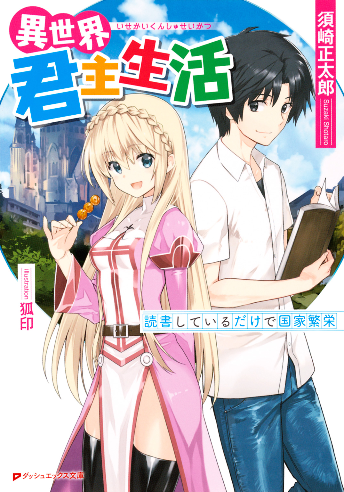
この本は縦書きでレイアウトされています。
また、ご覧になる機種により、表示の差が認められることがあります。
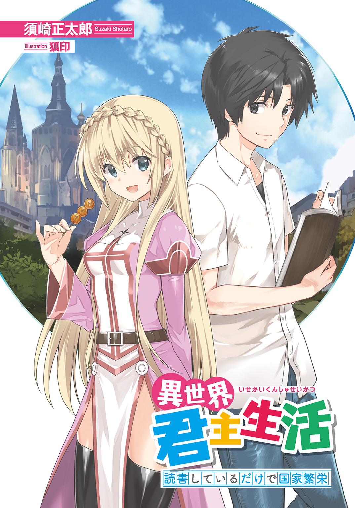
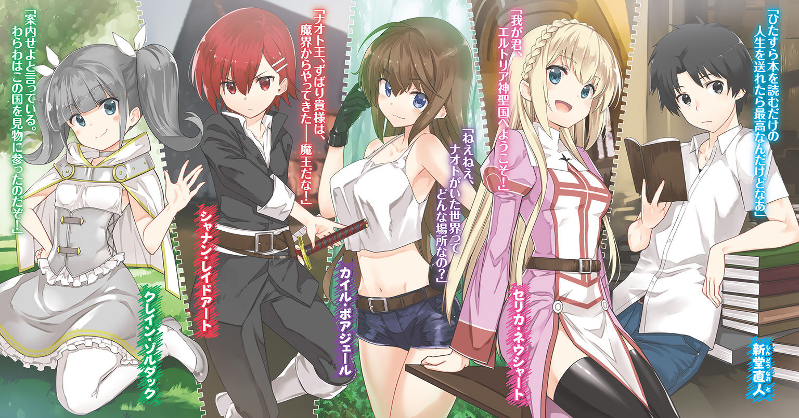
 ダッシュエックス文庫DIGITAL
ダッシュエックス文庫DIGITAL
異世界君主生活
～読書しているだけで国家繁栄～
須崎正太郎
第一話 日本人、異世界に立つ
本好きの青年と異世界
近年、日本文化が海外で注目されているらしい。
能や歌舞伎や茶道などはもちろん、マンガやアニメやゲームなどのサブカルチャーも評価を得ている。さらにある国では、日本についての知識を競うクイズ番組まで放送され、たいへんな人気を博している――
と、いま読んでいる本に書かれてある。
（その番組、俺も出演できないかなあ......）
新堂直人は、図書館の片隅で、ページをめくりつつそう思った。
彼は読書好きで、その中でも日本文学や日本史、日本古来の文化に関する本など、二十歳の若者にしては珍しいほど、日本関係の書籍を特に好んで読んでいる。日本に関するクイズ番組ならば、活躍できるかもしれないと考えたのだ。
（もっとも外国に行く余裕なんて、微塵もないんだけど）
ズボンに入っている、薄い財布をそっと触る。財布の中にはほとんど金が残っていない。そこでふと、直人は現実を思い出した。
今月のアパート代、まだ払ってなかった。どうしよう。
「金がない。だけど労働もしたくない、と......」
と、直人は独りごちながら歩く。
図書館からの帰り道。商店街のド真ん中。食べ物やらなんやらが入ったビニール袋を提げて、とぼとぼと家路についている。
歩きながら考える。どうして自分は、こんな苦境に陥っているのだろう。
大学に進めなかったせいか？
社交が苦手で、就職活動をしなかったせいか？
働きもせず家で読書ばかりしていたら、実家を叩き出されたせいか？
子供のころからひたすら本を読んでばかりで、相談できる友達を作らなかったせいか？
学業以上に顔面の偏差値が低かったせいで彼女もおらず――
「やめよう、悲しくなってきた。ううう......」
直人はかぶりを振って考えるのをやめた。特に最後なんて、努力じゃどうしようもないじゃないか。俺だって、せめてもう少しイケメンに生まれたかった。
ともかく現状は大ピンチだった。実家を出るときに両親から与えられたわずかな支度金もそろそろ底を尽く。本来、図書館で本を読んでいる余裕などない直人だったが、それでも読書をしてしまうのは、読書中毒の悲しい性であった。
（いっさい働かず、ひたすら本を読むだけの人生を送れたら最高なんだけどなあ）
贅沢な願望を胸に抱きつつアパートに戻り、自宅のドアをがちゃりと開ける。
「............うん!?」
直人は思わず声をあげた。
部屋の中に、光の輪がある。
ＬＥＤのように青白く光っている、ちょうどアパートのドアと同じくらいの大きさの輪っか。直人は何度か目をこすった。しかし光輪はそのままだ。目の異状ではないらしい。
「なんだ、これ」
恐る恐る近付いてから、輪の中央に触れてみた。すると、
「う、わっ!?」
突如、世界が大きく歪んだ。白一色の世界に包まれ、呼吸することも思わず忘れて、じたばたじたばた、とにかくもがく。
そして、次に気が付いたそのときには――
突き抜けるような青空の下に、呆然と立ち尽くしている自分がいた。
「......どこだ？ ここ」
おかしい。ついさっきまで、自分はアパートの中にいたのに。
周りの景色もまたおかしい。足下に広がっていたはずのタタミは、古びた石畳に変わっている。さらに目の前には石造りの尖塔がそびえ立っていた。灰色一色のその塔は、ヨーロッパの城郭にどこか似ている。
そんな光景をバックにして、一人の女の子が立っていた。
「我が君、エルトリア神聖国へようこそ」
年齢は、直人より少しだけ年下だろうか。可憐な容姿をしている。
ぱっちりとした翡翠色の双眸に、この上なく整った白い細面。輝くような金色の、柔らかそうなロングヘアー。すらりとした細身の体軀は、どこか淑やかな雰囲気をもっている桃色の衣によって包まれていた。
日本人には見えない。外国でモデルでも務めていそうな美少女である。
（なんでこんな女の子が......突然、俺の目の前に現れて......？）
直人はさすがに呆然とした。なにがなんだか、さっぱりだ。
「......あの、わたしの言葉、分かりますか？」
少女が怪訝そうに尋ねてくる。――彼女の言葉を、直人はなぜか理解できた。日本語でも英語でもない不思議な言語なのに、どうしてか、聞き取ることができたのだ。
「分かる。......分かる、けど」
答えると、少女は「良かった」と胸をなでおろすしぐさを見せた。
「どうやら、召喚の儀式は成功のようです。次元の穴を開けて、言語も通じるようにして......ああ、この日のために、修業を重ねてきた甲斐がありました」
「しゅ、修業？」
「はい。この国の神官として、儀式を行うための修業です。日々、心身の鍛錬に勤しみ、エルトリアの神に祈りを捧げ、滝に打たれては身体を清め、儀式の呪文を暗誦し――半年にも及ぶ錬磨の日々は、決して無駄ではなかった......」
すらすらと言葉を紡いでいく。よく分からないが、彼女は半年もの間、大変な生活を送っていたようだ。どうも生真面目な性格らしい。
「改めて初めまして。わたしはセリカ・ネウシャートと申します」
「セリカ？」
「はい。このエルトリア神聖国で、神官を務めております。年齢は十七歳です。......我が君、混乱されていると思うので、一から事情を説明させていただきますね」
「う、うん」
「あなたはこの世界に、魔法の儀式によって召喚されたのです。ここはあなたが住む世界とはまったく次元の異なる場所。完全に違う世界――異世界なのです」
「異世界？ ここが？」
思わずあたりを見回す。周囲は石壁に囲まれていたが、壁そのものはそう高くない。近付けば向こう側が見えそうだ。
直人は実際、壁に近付いて、その行動を試してみる。すると――
「おおっ」
晴れ上がった青空の下に、美しい風景が広がっていた。
壁の向こうを覗いて分かったが、いま直人がいる場所は、小高い丘の上にあった。そして丘陵の上から見下ろす景色は、まさに息を呑む景観だったのだ。
丘のふもとには色煉瓦で築かれたさまざまな建物が立ち並び、その集落の周りはぐるりと石の壁で囲まれている。あれがこの国、エルトリア神聖国の街並みだろう。
さらに別の方向に目を向けると、海と見間違うほどの巨大な川が流れている。さらに彼方に目を向けると、緑に染まった大草原が、果てもなく広がっているではないか。
「す、すごいな......」
間違いなく、違う世界だ。直人はほとんど本能的に悟った。
広がる自然も建築の様式も、頰を撫でる風さえも、現代日本のそれではない。だからといってヨーロッパとも、似ているけれど少し違う。昔、家族で欧州を旅行したことのある直人だったが、そのとき感じた空気とも、この世界は確かに異なっていた。
「確かにここは異世界みたいだ。うん、なるほど」
そう言うと、セリカは少し驚いた顔を見せた。
「ご理解が早くて助かりますが......しかし、その。戸惑わないのですか？ 違う世界にいきなり呼び出されたのですよ？」
「そんなに落ち着いて見えるかな？」
直人は淡々と言いながら、わりとよくある話だからね、と思っていた。
違う世界に呼び出される。それはこれまで小説で何度も見てきた展開だから、やたらに慌てることもない。
「お見事です。安心しました。我が君は王者としての器を備えておられます」
「......あのさ。さっきから、我が君とか王者とか言ってるけど......そもそも俺はどうして、こんな世界に呼び出されたの？」
それは根本的な疑問だった。だが、セリカはあっけらかんと回答した。
「この国の王となっていただくために、召喚致しました」
「王？ 王って、王様？」
「はい、王様」
「俺が？」
「はい、あなたが」
「............」
いちいち丁寧に返答してくるセリカのことを、まじまじと見つめる。
自分が、このエルトリア神聖国とかいう国の王様。――なるほど、それでこの子は最初から、俺のことを『我が君』なんて。つまり我が君主、と呼んでいるのか......。
「いや、でも、本当に？ 俺は新堂直人。人違いじゃないの？」
とりあえず言ってみる。だがセリカは笑みを崩さなかった。
「いいえ、間違いではございません。ナオト様は我が君でございます」
「だ、だけどどうして俺が王様なのさ？ この国には王がいないの？」
「......その通りです。お恥ずかしい話ながら。この国には君主が不在なのです」
言いながら、セリカは大きな眼を伏せた。
「エルトリア神聖国の王様は、数か月前に事故でお亡くなりになりました。橋を渡っている最中に、足を踏み外して川に落ちてしまったのです。......そして問題は、その王様に家族が、すなわち跡継ぎがまったくいなかったことです」
「......それは大変だね」
「今までは、ひとまずわたしが国王代理を務めていました。しかしもともとこの国には、王家の血筋が途絶えたときは神官の魔法儀式によって王にふさわしい者が呼び出され、その人物が新たな王になるという法がありました。そこでわたしはこの神殿で儀式を行い――」
「俺が、王となるべく呼び出されたってことか......」
つぶやきながら、直人は再び周囲を見回す。
この場所はお城だと思っていたが、どうやら神殿だったらしい。
「我が君はエルトリアの神が認めたお方......。これよりわたしは絶対の忠誠をお誓い致します。エルトリア神聖国のためにどうぞ、采配をお振るいになって――」
――と、そのときであった。
くぅぅ～......。
奇妙な音がした。
「あっ......」
セリカが、顔を真っ赤にしてお腹を押さえた。直人は目を丸くして、
「......セリカ、いまの音は」
「ち、違います。その。......意識せずに出してしまった生理現象とでも申しましょうか――」
「腹の音だよね？」
「ああっ！ は、はっきり言いましたね!? ご、ごまかすつもりだったのに。言わないでください！ は、恥ずかしいですっ......！」
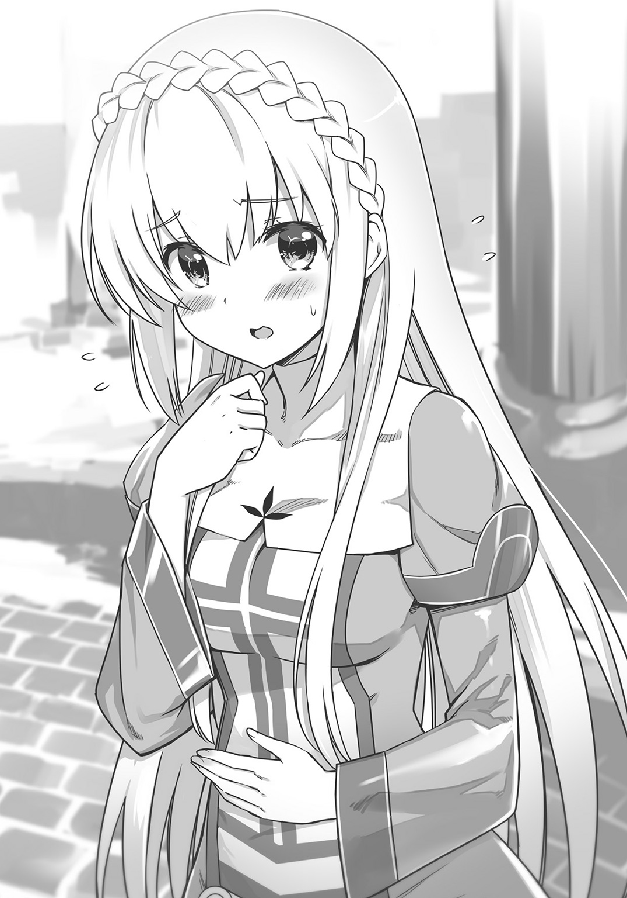
セリカは耳まで真っ赤である。
そこでふと、気が付いた。まだ自分がビニール袋を持っていることを。
現代日本から直人と一緒に召喚された袋である。商店街で買った日用品の数々だ。その袋に手を突っ込むと、直人は中から取り出したものをセリカに見せた。
「よかったら、これ、食べる？」
直人がセリカに差し出したのは、薄いプラスチックのパックである。
中には砂糖醬油がかけられた、黒っぽい団子が四つ、串刺しになって入っていた。
「なんですか？ これ」
「みたらし団子だよ。俺の世界――日本に古くからあるお菓子の一つだ。お腹が減ってるなら、食べないかな、と思って。どう？」
「..................」
こくり。
しばし考えるしぐさを見せたあと、セリカは赤い顔のままうなずいた。
直人はパックを、セリカに渡す。
「ありがとうございます」
お礼をきちんと言ってから、セリカはパックを開けようとして――
「......これは、この箱は、どのように開ければよろしいのでしょう？」
などと言って、パックをつんつんとつついたり、爪で引っかいたりし始めた。――そうか、別の世界の人間だと、こんな作業さえ一苦労なのか。
直人は「貸して」と言ってから、再びパックを手に取ると、あっさりそれを開けてやった。その行動にもセリカはなにやら仰天し、「す、すごいですね、これ」なんて言ったりする。
そして、セリカはついにみたらし団子を口にした。
ぱくり。むにむにむに......。
「うまっ!!」
「おおっ!?」
突如、声量マックスで叫んだセリカに、直人は思わずのけ反った。
「お、おいしいです！ なんですかこれは。やわらかくてむにゅっとして、ちょっぴりコシもあって甘くって......。だけど甘すぎずほんのりと上品で、しかも後味すっきりのお味ではないですか。なんという美味しさなんでしょう。驚きです！」
「グルメブログばりの感想にこっちのほうが驚きなんだけど......」
「このむにむにとした食感を生み出す素材はなんでしょう？ 初めての味わいですが」
「団子の材料？ 確かうるち米じゃなかったかなあ」
「ウルチゴメ。知らない材料です。ああ、これほどの食感を作り出すには、相当の手間が必要だと思いますが」
「うるち米を粉にしたものを、水で丸めて茹でただけだよ」
「ゆ、茹でただけ!? 粉を丸めて茹でただけ。粉を水で形にするのはパンと似ていますが、それでこれほどの味を作り出せるとは......」
（ああ、パンはこっちの世界にもあるんだ）
「それに団子が串で刺されているのは......そうか、こうしておけば焼いたりタレをかけたりして調理しやすい上に、そのまま食べることもできるのですね。合理的です。すばらしすぎます。天才の発想です。ああ、日本にはこれほどのお菓子があるのですね......」
セリカはみたらし団子についての考察を一人で深めていっている。たかが団子が、そこまで絶賛されるとは。
やがて彼女は「はっ」と気が付いたようにこちらへ視線を送ってくる。
「......我が君。これはもしや我が君の国では高級なお菓子なのでは？ きっとそうです。どうしましょう。お、お支払いする代金は......金貨にしていかほどに......」
「代金なんていらないよ。一般庶民が食べるお菓子で、別に高くもないし」
事実だった。近所の商店街にある和菓子屋で買った団子である。一本八十円。
「なんと......。ううううう。こんな、こんなおいしいものを当たり前みたいに食べている一般庶民の国。に、日本恐るべしです」
「みたらし団子一本で大げさな......」
「ううう。おいしいよー、おいしいよー、みたらし団子おいしいよー」
ちょっぴり涙目になりながら、さらにみたらし団子をほおばるセリカ。
ほむほむほむ、ほむほむほむ。彼女は団子をひたすら食べる。
やがて、食べ終わる。
「ぷはあ」
この上なく、幸せそうな笑みを浮かべていた。
「......堪能した？」
「はっ！」
セリカは心底仰天したまなざしで直人を見つめると、
「いえっ違いますよ決して我が君の前で取り乱していたわけでも我を忘れていたわけでもないのです我が君がくださった食べ物なのでありがたいという気持ちで胸がいっぱいなのでありましてだからわたしはそのですね」
「落ち着いて。美味かったのは分かったからとにかく落ち着いて」
「は、恥ずかしいです。わ、わたしとしたことが面目ありません。うっうっうっ......」
「いや、なにも泣かなくても......」
涙目になるセリカを見て、直人は困り顔を作る。
生真面目な女の子だと思っていたが、まさかのまさか、食べ物には弱いようだった。
財政問題
「――我が君っ」
みたらし団子を食べ終わったセリカは、きりっと真面目な顔を作った。
「お団子を、ありがとうございました」
ぺこりと頭を下げる。
「......腹ごしらえも済んだところで、先ほどの話を続けたいと思います」
「なんの話だったっけ」
「王様になっていただきたいという話です」
「そう、その話。俺に国王になってほしいって言ってたけど......まずできるかどうかはともかくとして、俺は王様として、なにをしたらいいのかな？」
「我々エルトリアの民が、新国王に求めることはただ一つです」
セリカは淡々とした声で、
「財政難を解決してください。いま我が国は財政破綻寸前なので」
「え、なんかいまサラリとすごいこと言われた気がする」
「このエルトリア神聖国は、これといった産業もなく、統率する君主もいないのでボロボロなのです。人口はわずか七百人。領土にしてもこの神殿と、ふもとに見えているちっぽけな市街地が一つあるだけの、それはそれは小さな貧弱国。隣国ゾルダックの人口十万人と比較すると、寒村といっていいでしょう。さらに我が国のこんな状態に、民の多くは見切りをつけて出ていってしまい人口の流出が止まりません。この国はいまや衰亡の危機にあるのです」
「......えーと......」
「国庫の中には金貨が十枚も入っておらず、農作物も財産も、まったく売るものはありません。しかも先日、北の橋が大雨によって流されたため、慌てて修繕したのですが、その工事費の支払い期限も、数日後に迫っているのです」
「なにもかも詰んでるな......」
セリカは怖いくらいの無表情で喋り続ける。
「まだまだ他にもありますよ、待ってもらっている借金が。そんなわけで、我が国の負債は合計すると、金貨にしておおよそ二千五百枚......」
「ねえ、もしかしてヤケクソだったりする？」
「なお家臣に給料も払えないので、いまや我が国の役人は神官のわたし、ただ一人。騎士団は既に解散し、租税を徴収する仕事さえ、わたし一人でやっている始末です。以上」
「いや、以上じゃなくて。やっぱヤケクソで言ってるでしょ」
直人はジト目になりながら言った。
「借金が、いくらだって？ 金貨二千五百枚？」
この世界の金貨の価値がどれほどのものかは分からないが、なんといってもゴールドである。それが二千五百枚も足りませんと言われると、恐ろしい金額の借金であろうことは容易に想像がついた。
「そんな状態の国をどうしろっていうのさ。どうしようもないじゃん」
「と、とにかくお願いします。助けてください。このままではエルトリアは破産です」
そう言われても、と思う。切羽詰まった様子のセリカを見ていると、なんとかしてやりたくもなるが......。
「なんだか日本が懐かしく思えてきたよ。戻りたい......」
直人がつぶやくと、セリカはきょとんとした顔を作って、
「帰るだけなら、いつでもできますが」
「え、マジ？ こういうのって、元の世界には戻れないのがお約束じゃない？」
「な、なんのお約束か知りませんが、大丈夫です、帰還できます」
セリカは答えると、右手の人差し指をぴっと立てた。そして何事かをつぶやくと、指をその場で一回転させる。
すると、光の穴が出現した。アパートにあったものとそっくりだ。
「おお、これこそ魔法」
いかにもファンタジーな光景に、直人は感嘆の息を漏らす。
それから穴に、ひょいっと首だけ突っ込んだ。
「あっ」
六畳の和室。薄汚れたタタミの上に置かれた、ベッドとちゃぶ台とカラーボックス。あとは大量に積み重ねられている、本、本、本の山。
間違いなく自分の部屋だ。日本に戻ることができるのは確かなようだ。
（だけど......）
直人は考えた。ここでもし、自分が日本に戻ったらどうなるだろう？
（一文無しのニートに戻るだけだ。それなら......）
首を戻して、セリカを見つめる。そして数秒間ほど考えた末、
「ねえ、セリカ。......もしもだよ？ エルトリアの財政問題を俺が解決できたらさ。衣食住くらいは、俺のために用意してくれたりするかな？ なんて......」
「も、もちろんです！」
セリカはこくこくうなずいた。
「我が君は国王なのですから、当然、この神殿でもっとも良いお部屋ともっとも良いお食事、それにもっとも良い衣服を用意して――」
「あ、いや、そっちは人並みでいいんだ。で、ここからが本題なんだけど。......書斎も作っていいかな。俺の世界から本を持ち込んでさ......」
「それも、もちろん。......といいますか、それは国王である我が君が判断されることです」
「なるほど！」
それで直人の決意は固まった。この世界に残ろう！
財政問題を解決し、国家の運営をある程度軌道に乗せてしまえば、あとはこの国でゆっくりと、読書ライフを送ることができるじゃないか！
（異世界の本にも興味があるし......。よし、こうなったらやるぞ。なんとしてもエルトリアの財政難を解決するんだ）
握りこぶしを作ってから、気合を入れる直人であった。
ことはお金の問題だ。なんとかするのは容易ではないが――
「あの、我が君。ところでこちらなのですが」
セリカが声をかけてきた。彼女はみたらし団子が入っていた、プラスチックのパックを大事そうに抱えたまま、
「この器、あとでちゃんと洗ってお返ししますので」
「いや、それは別に洗わなくても。捨てていいよ」
「そ、そうは参りません。こんな綺麗な器をもったいない。買ったらいくらになることか」
「プラスチックのパックが綺麗な器......？」
直人は首をひねったが、すぐに気が付いた。日本ではありふれているプラパックだが、こちらの世界には存在しない貴重品だ。セリカが、器と表現するのも当然のことなのだ。
そこでふと思う。ただのプラパックが貴重なら、なにか他の、日本ではありふれている物も、こちらの世界ではすごく需要があるかもしれない。例えば――
「セリカ、見てほしいものがあるんだけど。......これ」
直人はビニール袋から、また別のものを取り出した。
ぐるぐる巻きの、濃い緑色をしたその物体。
「これ、蚊取り線香っていうんだけど」
「カトリセンコウ？」
セリカが可愛らしく小首をかしげる。初めて見た、という顔つきだ。
日本の季節は五月下旬。間もなく、蚊や虫が発生する時期ということで、買ってきていたものだ。直人は電気製の殺虫道具よりも、蚊取り線香のような古風な殺虫道具を好んだ（アパートの家賃さえ危ういくせに、団子やら蚊取り線香やらを買ってしまうのが直人だった）。
「我が君。これはいったい、なんなのですか？」
「うん、まあ......とりあえず使ってみるよ。セリカ、火って用意できる？」
「火打石ならばありますが」
そう言って彼女は、マントのポケットから石ころを取り出した。
「よかった。火がなかったらどうしようかと思ったよ」
そう言って、直人は渦巻き状の蚊取り線香を地べたに置き、
「じゃあそれで、この渦巻きの外側の部分に火をつけてくれないか」
「はい......」
セリカはまだ戸惑っているようだったが、ひとまず直人の指示に従う。
ややあって、火がついた蚊取り線香の先端から、煙が上がり独特の匂いが醸し出される。
セリカは、ひくひくと鼻孔をひくつかせると、目を見開き、蚊取り線香をじっと睨んだ。
「我が君。この匂いは......これはもしや、虫を殺す道具、殺虫剤の一種なのでは？」
「よく分かったね。その通り。この蚊取り線香は虫を......特に蚊を殺すための道具なんだ。もしかして殺虫剤って、この世界では価値があったりしないかな？」
「あ、あります。......価値、すごくあります！ 殺虫剤なんて......ものすごく貴重な品物ではないですか！」
「やっぱりそうかあ」
セリカの言葉に、直人はしてやったりとほくそ笑んだ。
殺虫剤は価値があるかもと思っていた。というのも、先日読んだ本に蚊の脅威が書かれてあったので、直人はその猛威について知っていたからだ。
現代の地球において、もっとも人間を殺している生き物はなにか？
野犬は、狂犬病によって毎年二万五千人の人間を殺している。
蛇は、その毒によって毎年五万人の人間を殺している。
そして――非常に悲しいことではあるが、人間もまた、戦争や犯罪、テロ行為などで、同じ人間を大量に殺している。その数は、毎年四十七万人にも上っている。
だがそれらの数を超越して、毎年、七十二万人もの人間を殺している生き物がいるのだ。
それが、蚊である。
その殺人数はぶっちぎりだ。蚊は、マラリアやデング熱などの病気を媒介する。そのせいで、七十二万人もの人間が、二十一世紀においても毎年死に追いやられているのだ。
現代日本では、蚊が恐ろしい生き物と認識されていることはあまりない。しかし本来は、もっと危険を感じるべき生物なのだ。そういう目で見ればただの蚊取り線香でも、場所によっては貴重品になりうる。
「エルトリア神聖国においては、蚊はそう驚異でもないのですが、遠い南方の地は蚊が多く......そのせいで病気が流行しています。ですから殺虫剤は非常に貴重で、大事な品物なのです」
そう言うとセリカは、蚊取り線香をしげしげと眺める。
「カトリセンコウといいましたか、この殺虫剤の名前は。火をつけて燃焼させ、そのときに生じる化学物質で虫を殺していく道具ですね。このタイプの殺虫剤はこの世界にもありますが。......しかしこちらの世界とは決定的に異なるのは、この形でしょう」
「形？」
「形状が渦巻きの形をしています」
確かに日本の蚊取り線香は螺旋状である。
「すごい発想ですよ、これは。我が世界の殺虫剤は、一本の棒状になっており、その先端に火をつけるのですが......。渦巻きにするとは気が付かなかった。なるほど、こうすれば棒状のそれよりも長く使えるし、横に平べったいので机上に置いた状態でも安定します。棒が倒れて火事になる、という事故が起こりにくくなります」
「そうかぁ。......そういえば、確か日本人が発明したんだよな、その渦巻き型蚊取り線香。思いついたのは明治時代の人で、殺虫剤メーカーの創業者なんだ」
「我が君、よくご存知で。......まさか我が君は学者様ですか!?」
「いやいや、まさか。本で読んだことがあるだけだよ。俺、日本に関する本を読むのが好きだからさ。こんなのはただの豆知識で、なんてことないよ」
「ご謙遜を。学者でなかったとしても素晴らしいですよ。なるほど、それで書斎をお求めなのですね。勉強のために......」
「う、うん、まあ......そういえばそうかな？」
直人はごまかすように笑みを浮かべた。自分の読書はただ無闇に本を読んでいるだけなので、勉強と言えるのかどうか。それにしても、クイズ番組に出演したいとか思っていた自分の知識がこんな形で役に立つとは思わなかったが......。
「とにかく、セリカ。この蚊取り線香は日本ではありふれたものだけど、この世界では貴重なんだよね？ だから、俺がこれを日本から仕入れてくる。そしてそれを売りさばけば――」
「......エルトリアの借金が、返せるかもしれません！」
「この世界で、蚊取り線香はちゃんと売れるんだね？」
「商人に......我が国に出入りしている商人に尋ねてみないとなんとも......。しかし殺虫剤が貴重で、高級品なのは確かです。恐らく売れると思います」
「よし......」
直人は力強くうなずいた。団子もいいが賞味期限がある。異世界に輸出するのならば、食べ物よりも日持ちのする蚊取り線香だ。
「ですが我が君。よろしいのですか。つい先ほどまで、日本に戻りたがっていたのに」
「うん、さっきまではね。だけど、いまは違う」
エルトリア神聖国を救い、一生読書をして過ごすという、素晴らしい大目標ができたのだ。
「この国を救うのは、俺の使命だと気が付いたのさ」
......それは虚言ではない。確かに直人は覚醒した。真剣に、エルトリアの君主になろうとしているのも間違いない。
しかしセリカは――直人の意思を良い方向に誤解したようだった。
「......我が君。かっこいいです！」
感動したように、目を見開いている。
「ありがとうございます。あなたが来てくれて良かった。あなたを召喚できて、本当に......」
「............あ、いや......俺は......」
彼女の潤んだ瞳に、直人は思わず顔を赤くした。
女の子に、さらに言うならば見知らぬ誰かに、あなたが来てくれてよかった、なんて言われたのは、直人にとって初めての経験だった。
「セリカ。......その、俺は」
「あ、いえ！ も、申し訳ありません」
セリカは首を慌てて振った。
「失言でした。臣下のわたしが、我が君に向かってかっこいいなどと、なんてことを......」
「......あ、うん......いや......それは別に......」
直人はそれ以上なにも言わなかった。言えなかったというのが正解だった。こういうとき、どう答えるべきかよく分からなかったのだ。
だが、決して悪い気分ではなかった。
（と、とにかく）
直人は気を取り直すと、セリカに向かって笑顔で言った。
「蚊取り線香の件を、商人に話そう。すべてはそれからだよ」
少年商人とカトリセンコウ
セリカ曰く、隣の大国ゾルダックの行商人は数日に一度、エルトリアにやってくるらしい。そしてタイミングが良いことに、今日はその商人がやってくる日であった。
直人はセリカを従えて、商人のいるところへ向かっていく。蚊取り線香を買い取ってくれるか。買い取ってくれるとしたら価格はいくらか。それを尋ねたい。
「その商人とは、いつも神殿の入口のところで会ってるんだよね？」
「はい、数日に一度、そこで取引をしています。食料や生活必需品、その他もろもろ、必要なものを購入しています。我が国は貧しいのであまりたくさんの品物は買えませんが」
「なるほどね。で、その商人はどんな人なの？」
「どうと申されましても。......明るくて真面目で、いい子ですよ？」
「――子？」
セリカの呼び方に、直人は思わず足を止めて眉宇を寄せる。
子って、どういうこと？ そう言おうとした瞬間、セリカが顔を上げた。
怪訝に思い、彼女の視線の先を追うと、神殿の門前に馬車が繫がれているのが見えた。
そのかたわらには少年がいる。見たところ十二、三歳くらいだろう。金髪碧眼の、女の子のようにも見えるその男の子を見つめていると、セリカは少し困ったように微笑んだ。
「つまり、あの子が商人なんです」
「あの子が......!?」
「トマさんといいます。隣国ゾルダックの商人ギルドに所属している商人です」
「商人ギルド？」
「商人たちの団体組織のことです。その組織に所属すれば、商売のための資金を融資してもらえたり、仕事も貰えるので、独立してやっていけないレベルの商人は、そのギルドから仕事を貰って商売をしているのです。トマさんも、ギルドの仕事でこの国に来ているのですよ」
「なるほどね......」
直人は小さくうなずいた。そして、なぜエルトリアのような財政破綻寸前の小国に行商人がやってきているのか、その理由を察することができた。
トマのような少年商人は仕事が少ない。その上、彼は年齢を考えると、ギルドの中でも下っ端の商人ではなかろうか。だからこそ、ギルドはトマにエルトリアへの行商の仕事を与えたのだ。すなわち、エルトリアのような貧乏国などトマのような小僧で充分、と判断されたのだ。
直人はわずかに首を振った。まったくエルトリアは、本当に小さくて弱い国らしい。ギルドから完全になめられている。
「もっとも仕事を貰う代わりに、商売の利益の一部をギルドに納めないといけないそうなので、トマさんはいつも、自由がない、いつか独立してやるって、笑いながら愚痴っていますが」
「ふーん。けど、あんな子供が商人なんて。それともこの世界じゃ、珍しくないのかな？」
「さすがにあの年齢で働く、というのは珍しいですね。もっともトマさんは、ご両親がいないそうです。だからあの年齢でもう働いているということで」
「なるほど。......苦労してるんだね」
当たり前だが、異世界にもいろんな人間がいるようだ。
と、そこでその商人――トマが、こちらに気が付いて駆け寄ってきた。
「セリカさん、こんにちは！ 今日もいっぱい商品を持ってきたよ、よろしくね！」
「はい、よろしく。トマさんはいつも元気ですね」
セリカはにこやかにあいさつをしてから、さっそく話題を切り出した。
「トマさん、殺虫剤について尋ねたいことがあるのですが。......実は良い殺虫剤があるんです。買い取ってもらえますか？」
「殺虫剤？ そりゃ買い取るよ。殺虫剤は、常に需要があるからね」
トマは笑みを浮かべると、声変わりが済んでいない、女性的な声でそう答えた。
「だけど殺虫剤といっても、なんでも買い取るわけじゃないよ。品質ってものがある。蚊や虫を殺す効果が薄いもの、つまり質が悪いものは買い取れないよ」
「それはそうでしょうね。でも――」
と、セリカが小首をかしげた瞬間、直人は一歩前に出て、
「まあ、とりあえず商品を見てくれないかな。話はそれからだ」
トマは意外そうに直人を見つめた。セリカと顔見知りの彼は、セリカが商談の中心だと認識しているようだった。直人のことは、セリカの手伝いくらいにしか思っていないようだ。
「セリカさん。この人、誰......？」
「あ、トマさんにも紹介しないといけませんね。このお方はナオト様といって、殺虫剤を持ってこられた方で――」
「この人が？」
セリカが説明をしている途中で、トマは眉をわずかにひそめた。セリカの殺虫剤ではなく直人の殺虫剤だと聞いて、警戒の色を強めたらしい。その表情の裏には『変な殺虫剤をつかませるつもりじゃないの？』という意図が見てとれる。
無理もない。初対面の男が、突然、高級品の殺虫剤を買い取ってほしいというのだから。現代日本でいえば、会ったこともない人間がいきなり宝石を売りつけてくるようなものだ。
「セリカさんの頼みなら、多少無茶でも聞いてあげたいけど......」
「まあまあ、とにかくこれを見てよ。蚊取り線香っていう殺虫剤なんだけど、けっこう効き目あるんだから。......はい、どうぞ」
「カトリセンコウ......？」
トマはうさんくさげに、直人から手渡された螺旋状の線香を眺めていたのだが――
やがて彼は、線香に鼻を近付けると顔色を変えた。
「これは......確かに殺虫剤だ！ それもかなり高品質な......!!」
「分かってくれた？」
直人が言うと、トマは大きくうなずいた。
「僕はプロだよ？ この殺虫剤の質はこれだけでも分かる！ すごい性能だ。だけど......この渦巻きの形はどうして......ああ、そういうことか。火を長持ちさせるため、それと設置したときの安定のためなんだね！」
先ほどのセリカと同じように、トマは一瞬で蚊取り線香の商品価値と特徴を看破した。プロというのは噓ではないようだ。話が早くて助かる。
「どうだろう、この殺虫剤。買い取ってもらえるかな」
「もっちろん！ 金貨一枚で買い取るよ！」
「「金貨で!?」」
直人とセリカは揃って仰天した。
蚊取り線香一巻が、まさか黄金に化けるとは！
「いや、それだけの価値はある殺虫剤だよ、これは。......ナオトさんだっけ？ ごめん、これほどの商品を提示されるなんて、想像もしていなかったよ！」
トマは、先ほどまでとは別人のような笑顔を直人に向けると、腰にぶら下げた袋から金貨一枚を取り出して、こちらに向かって差し出した。直人は小さく頭を下げてそれを受け取る。
「だけど、本当にユニークな形をしているなあ。カトリセンコウ、だったっけ。ナオトさん。これ、どこで手に入れたの？」
少年商人は微笑を浮かべて問うてきたが、直人はセリカとちょっと視線を合わせてから「秘密だよ」と、片目をつぶって微笑を浮かべた。
それからトマに「蚊取り線香は、まだたくさん用意できるけど、買い取ってもらえるかな」と尋ねたところ「もちろん買うよ」との回答を得られた。
「じゃあ、お金をたくさん用意していてくれ。本当にたくさん持ってくるから」
「大丈夫、任せて。これでも商人ギルドからお金を預かってきているから」
そのセリフを聞いてから、直人は馬車の中に目をやった。なるほど、中には木箱や革袋が大量に詰められている。あの中に、金貨や銀貨があるのだろう。
直人とトマは、翌日にまたこの場所で会うことを約束し合って、この日は別れた。
それから直人とセリカは、神殿の中へと戻っていく。
蚊取り線香は金になることが分かった。これは大きな収穫だ。
「エルトリアの借金は、金貨で二千五百枚だと言っていたよね？」
「正確には金貨一千八百枚、銀貨五千枚、銅貨二万枚です。この国では金銀銅がそれぞれ十倍ずつ価値が離れています。銅貨十枚で銀貨一枚分、銀貨十枚で金貨一枚分の価値があります」
「なるほど、そこは単純で分かりやすいね。......しかし、こうなると蚊取り線香をあと二千数百枚集めないといけないわけか。大量だなあ」
直人はそう言うと、セリカに向かって、
「セリカ、穴を開けてくれないかな。日本で蚊取り線香を仕入れてくる」
「分かりました」
セリカは人差し指を立てて回転させた。
光の穴が、直人たちの前に出現する。
「この穴は、ずっと俺の部屋にあるんだよね？」
「はい。わたしが消さない限りは」
「よし。それじゃ蚊取り線香を買って、明日、またこっちに戻ってくる」
「あの、我が君を疑うわけではないのですが......本当に大丈夫ですか。明日でいいのですか」
セリカは重ねて、心配そうに尋ねてくる。
「大丈夫だよ。日本ではそこら中に店があって、生活に必要なものはほとんどなんだって買えるんだ。みたらし団子も蚊取り線香もね」
「なんだかすごい世界のようです。......見てみたい気がします。我が君の国を。日本を」
「落ち着いたら日本に遊びにいこうか。きっと面白いよ」
「遊びになんて......。神官の次元移動魔法は、国のために使うべきものです。遊びに使うわけにはいきません」
「本当に真面目なんだねぇ」
直人はくすりと笑ったが、心の中では感心していた。前国王の崩御から数か月。恐らくセリカはたった一人で、エルトリアを支えるべく頑張ってきたのだろう。
いい子だな、と純粋に思った。
「じゃあ、俺は蚊取り線香を買ってくる。明日、ここにまた戻ってくる。必ずね」
「はい、お待ちしています。......我が君」
セリカの言葉を背中に受けて、直人は穴へと飛び込んだ。
再び、日本へ
直人が日本に戻ったのは、午後七時ごろだった。
エルトリアに召喚されたのが夕方だったので、二時間ほどエルトリア神聖国にいた計算になる。日本の夕方がエルトリアの昼間だったので、時間帯は異なるものの、どうやら時間の経過そのものは連動しているようだ。
そして、直人が近所の商店街へと出向いたのは翌日のことだった。
商店街内の小売店に、近場のスーパーマーケット。ドラッグストアにホームセンター。どの場所でも、蚊取り線香の三十巻セットがおおよそ千円で販売されていた。
昨日、直人が購入した蚊取り線香も三十巻でワンセットだった。そのうちの一巻はエルトリアで試しに使い、一巻はトマに販売して金貨に換えたので、直人の手元にはあと二十八巻の線香が残っている。
（エルトリアの借金、金貨二千五百枚を完済するには......あとどれくらい、蚊取り線香を買わないといけないんだ？）
携帯電話の電卓機能を使って計算する。
（三十巻の蚊取り線香セットを......八十三個だ。それだけ買えば、蚊取り線香が二千四百九十巻。手元に残っている分の線香と合わせて、二五一八巻の蚊取り線香になる。その線香を全部金貨に換えれば、借金を全部返せるな）
蚊取り線香セット八十三個は、さすがにちょっとした量だ。この町だけでは揃わないかもしれない。
自転車に乗って、隣町まで行く必要があるかも――と考えたところで、直人は戦慄した。
「蚊取り線香のセットを、どうやって買うんだ？」
八十三個の蚊取り線香セットを買うには、八万三千円のお金が必要になる。
しかし直人の全財産は、ちょうど一万円しかなかった。
「......しまった」
お金。そんな肝心なことを失念していたとは。
（とりあえず今ある金の分だけでも、蚊取り線香を買っていこうかな？）
そんなことを考えながら、顔を上げたそのとき、質屋が目に飛び込んできた。
直人は質屋を利用したことはない。しかし、なにか物を預けることでお金になる場所だということは知っている。
なにか預けたら、お金になるかも。この際、背に腹は代えられない。
そう思って、上着の中をあれこれまさぐる。なにか金目の物はないか。
すると、硬い感触が指先に当たった。ポケットの中になにかがある。
なんだろうと思って手に取ると、それは金貨だった。
「そうか、トマに売って作った金貨だ」
ポケットの中に金貨を入れたのを、すっかり忘れていた。
「そういえば、聞いたことがあるな。質屋さんって、金貨の買い取りもしているって」
異世界の金貨だけど、ゴールドはゴールドだ。たぶん金になるはずだ。
直人は金貨を握り締めると、意を決して質屋へと飛び込んだ。
金の買い取りは、ごくあっさりと終わった。
質屋の店主は、見たこともない金貨を不思議そうに見つめながらも、本物の黄金であることは確かだと言って、相場通りに金貨を買い取ってくれたのだ。
異世界の金貨、その重さは二十五グラム。
金相場は日によって変動するが、この日は一グラム四千五百円だった。
そんなわけで、金貨一枚は、十一万二千五百円に化けた。
「いいのかな......」
直人は思わずつぶやいた。蚊取り線香一巻を、異世界に持ち込んで販売するだけで十一万円。すごい話だ。次元を超えた転売がこうまで儲かるとは。
「いや、この金は自分のために使うんじゃない。エルトリアのために使うんだ」
みずからにそう言い聞かせながら、直人は商店街を歩いていく。
しかし、この転売によってエルトリアの借金の規模がおおよそ理解できた。金貨一枚で十一万円、となると金貨二千五百枚分の借金があるエルトリア神聖国は、日本円換算でおおよそ二億七千五百万円の借金を抱えていることになる。
国家の抱えている借金にしては少ない気がする。......だが冷静になってみれば、それは経済規模の大きい日本に住む自分だからこそ出てくる感想であって、この地球上においても小さな国ならば、億単位の借金でも返すのが大変という例もきっとあるだろう。ましてやエルトリアは人口七百人の小国だとセリカは言っていた。
（地球に喩えれば、エルトリアは借金まみれの小国で、トマは大国の大企業に勤める会社員ってところかな。トマがたくさん金貨を持ち歩いているのも分かる。経済規模が全然違うんだ。日本の小学生のほうが、貧しい国の大人よりも金持ちみたいなものか......）
下っ端商人であろうトマが、自由に持ち歩いているレベルのお金でさえ、いまのエルトリアにはどうにもならないのだ。そう考えると気が重くなったが――
（とにかく、行動するしかないな。あとは蚊取り線香を買うだけだ。八十三セット、気合を入れて買い集めよう）
かくして直人は行動を開始した。
まずは近場のスーパーで、線香のセットを九つ買う。さらにドラッグストアに行って、線香のセットを八つ買う。
これだけ買うとさすがに重たい。直人は一度、アパートに戻って線香を置いた。
それから休む間もなく出かける。多少きついが、こうなったら体力と気合で勝負だ。
ディスカウントストアは、大量に蚊取り線香を置いていた。ここでは一気に十八個、購入することができた。さらに商店街の中にある、雑貨店では五個買えた。ここまでで四十個。
コンビニエンスストアにも蚊取り線香は置かれていた。だが価格がスーパーより少し高い。
「ここは節約だ。コンビニは最後の手段だな......」
直人はいったん自宅に戻ると、今度は自転車に乗って、隣町まで仕入れに出かけた。
隣町のスーパーで十一個、ディスカウントストアで二十二個、ドラッグストアで六個が揃う。
ここまでで七十九個。
「あとひと踏ん張りだ。いくぞ」
さらに汗をかきつつ自転車を走らせて、隣町の商店街まで突入する。
そして雑貨店に踏み入れると、三個の蚊取り線香が目に入った。ここまでで八十二個。
最後の一個は、家の近くにあるコンビニで買った。最後の手段である。ここまでで八十三個。
「......揃ったな」
直人は自宅に戻り、最後の蚊取り線香を部屋に置く。
八十三個もの蚊取り線香セットが並んでいるのは、壮観だった。
部屋の片隅には、光の穴が輝いている。
「よーし、いくぞ......！」
直人は、拳を握って気合を入れた。
交渉
「よい、っしょぉ......！」
大きめのリュックサックと、両手に巨大なビニール袋をぶら下げた直人は、汗を垂らしながら光の穴をくぐった。
「我が君っ!?」
穴の向こうにはセリカがいた。どうやら、光の穴の前でずっと待っていたらしい。
エルトリア神聖国の神殿、そのバルコニーである。今日もよく晴れている。
「ただいま、セリカ。蚊取り線香、仕入れてきたよ」
「はい......！ おかえり......おかえりなさいませ......！」
セリカは感動したようにこくこくうなずいた。
「トマさんは神殿の入口にいるはずです。カトリセンコウを運びましょう」
セリカの言葉に、直人は「うん」とうなずいた。
「やあ、セリカさん。ナオトさん......」
神殿の入口に赴くと、やけに暗い顔をしたトマが待っていた。
「ど、どうしたんですか、トマさん」
セリカが尋ねると、トマはぶすっとした顔で、
「昨日、あれから本国の商人ギルドに向かって、手紙をくくりつけた伝書鳩を飛ばしたんだ。良質の殺虫剤がたくさん買い取れそうだって。規模の大きい取引をするときは、ギルドに連絡しないといけないからさ。で、今朝、伝書鳩と返事が戻ってきたんだけど」
「なんて書いてあったんです？」
「すごく怒ってたよ。良質の殺虫剤が、そんなにたくさんエルトリアにあるわけがない。その殺虫剤は絶対に粗悪品だから買い取るなって。......ギルドのやつら、まだ若いからって僕の鑑定眼を信じてくれないんだ」
悲しげにかぶりを振るトマ。その様子を見て、セリカが慌てて訊いた。
「......あの。じゃあ、えっと。今日の取引は――」
「中止だよ。......それを言いにここまで来たんだ」
「そ、そんな！」
セリカは甲高い声で叫んだ。直人もまた、顔には出さなかったが内心では焦っていた。
トマに蚊取り線香を売りつけることでエルトリアの借金を返すつもりだったのだ。だが、いまから他の売却先を探すこともできない。借金の最初の支払い期限は数日後に迫っている。
「ごめんね、セリカさん。僕も一応ギルドに所属する商人だからさ。買い取るなって言われたら、それに逆らうわけにはいかないんだよ。そうしたら、ギルドから仕事が貰えなくなるし」
「ト、トマさん。......頑張ってください！ そうだ、トマさんは、ギルドから独立したいって――いつかは世界を股にかけるような大商人になりたいって、そう言ってたじゃないですか」
セリカは、懸命にトマを説得しようとする。
「いま独立しちゃえばいいんですよ、トマさん！」
「......セリカさん。僕、独立したいって確かに言ったけどさ」
トマは苦笑を浮かべて、
「それは先の話だよ。僕はまだ小さな行商人だし。ここでギルドと対立したら、もう僕は食っていけなくなる。いま持っているお金だって、ギルドから借りたものだしね。一度、買い取るって約束したのに、本当に悪いと思ってるんだけど、ギルドの命令だから。......ごめん」
トマはそう言うと、回れ右をして馬車に向かって歩き出す。
まずい、と直人は思った。このまま彼を帰国させるわけにはいかない。
どうしたらいい？ 直人は思案した。トマの求めるものはなにか。トマが取引に応じてくれるにはどうしたらいいのか。考えに考えて――
「トマ」
直人は、彼の背中に向かって声をかけた。
トマは、ゆっくりと振り向く。直人は落ち着いた声で告げた。
「もしもだよ？ 商人ギルドと対立しても、食っていけるっていう次のアテがあるのなら。つまり次の仕事があるのなら。......君は、蚊取り線香の取引をしてくれるかな？」
直人がそう言うと、トマは一瞬、面喰ったような顔をしたが、やがて、
「そりゃ......僕だって商人の端くれだからさ。カトリセンコウを買い取るって、一度、ちゃんと約束をしたんだから、商人として約束は果たしたい」
直人はそれを聞いてうなずいた。
「なら、提案がある。ゾルダックの商人ギルドをやめて、エルトリア神聖国に来ないか？」
「「......！」」
セリカとトマ、二人が同時に目を見開いた。
「どうだろう？ そうすれば、トマの次の仕事はエルトリアが斡旋する。商人ギルドがトマを攻撃しようと考えても、エルトリアが君のことを守ってあげられる......」
「え、ええ......？」
トマは困惑気味にまばたきしながら、こちらの顔を見つめてくる。
「君は蚊取り線香の性能を一発で見抜けるくらい、優れた商人だ。その能力が欲しい。......それに人間性にも感心した。君はさっき『今日の取引は中止だよ。それを言いにここまで来たんだ』って言ったけど、これはなかなかできることじゃない。俺たちに、約束が違うって怒られるかもしれないんだから、君はさっさとこの国から逃げてもよかったんだ」
「............」
「君は能力も人格も信用できる商人だと思う。だから、こうしてスカウトしているんだ」
「......それは......褒めてもらえるのは嬉しいけど」
トマは照れたようにはにかみつつも、やがて首を振って、
「やっぱりだめだよ。だって、エルトリアに来いって言ったって。その――」
彼は気弱な笑みを浮かべた。直人もまた笑って、
「エルトリアは財政破綻寸前の小国だ。そんな国に来ても意味がないってことでしょ？」
「いや............。......うん、まあ」
トマは、気を遣うように小さくうなずく。
だが、直人はニヤリと笑って、
「そのことなら大丈夫だよ。蚊取り線香を君に売れば、財政問題は解決する。......金貨、たくさん持ってきたんだよね？」
直人はトマの背後にある馬車を見ながら言う。トマは首肯して、
「金貨や銀貨はたくさんあるよ。ギルドから借りたものだけどね。......でも、その。確かにこの馬車に載ってるお金はちょっとした量だし、全部そっちのものになれば、エルトリアの借金も全部返せるかもしれないけど」
トマは何度かまばたきをした。
「でもそうなると、ものすごい量のカトリセンコウが必要になるよ。そもそも今日はどれくらいカトリセンコウを用意してきたの？ 僕は、五十巻くらいかなと思っていたんだけど――」
と、トマが言ったその瞬間、直人は答えた。
「二千五百巻ある」
「............は？」
「二千五百巻。蚊取り線香」
重ねてそう言うと、直人はかたわらのセリカに視線を送った。彼女はうなずいて、持っていた袋を開くと、蚊取り線香のセットをいくつか取り出した。
「この箱の中に、三十巻の蚊取り線香が入っています」
セリカが告げる。直人は続けて、
「三十巻入りの蚊取り線香ケースが、八十三個ある。そこに二十八巻の蚊取り線香もあるから、正確にはここに、合計二千五百十八巻の蚊取り線香があるんだ」
「う、噓でしょっ!?」
「本当だよ。なんなら、ケースを全部開けて調べてもいい」
直人がそう言うと、トマは蚊取り線香のケースを二つ三つその場で開けて、中身を確かめた。そして中身がすべて本物の蚊取り線香だと分かると、驚愕しきった面持ちで直人を見つめた。
「ほ、本物だ！ 殺虫剤を......どうやって、こんなにたくさん......!?」
「どうだい、トマ。これを全部売れば、エルトリアの借金は返せるんだ」
「な、ナオトさんはいったい何者なの!? セリカさんの友達じゃないの!?」
「ナオト様は、我が国の新しい王様です」
驚愕するトマに向かって、セリカは薄い笑みを浮かべた。
「トマさん、改めて紹介しますね。新生エルトリア国王、ナオト様です」
「............」
トマは呆然としたまま、直人を見つめる。
直人はそんなトマの視線に、微笑で応じた。
新生活スタート
そんなわけで――
「いやぁ、すごいね、これ」
「本当に......」
エルトリア神殿の一室である。直人とセリカは、目の前に積みあげられた大量の木箱を見つめていた。
中には金貨や銀貨、銅貨が詰まっている。蚊取り線香売却作戦が、成功した結果だった。
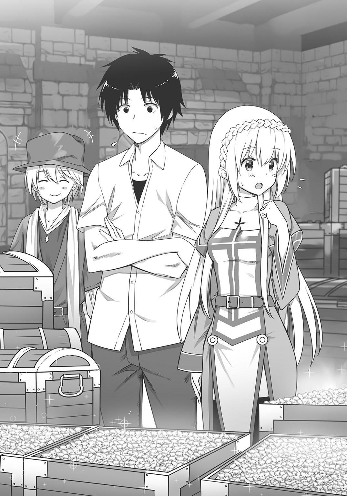
金貨換算で二千五百十八枚。直人たちはそれだけのお金を、ついに手に入れたのである。
そして部屋の片隅には、にこにこ顔のトマもいた。
「これで僕も自由の身ってわけだ！」
その通りだった。あれからトマは蚊取り線香を買い取って、エルトリアに金貨二千五百十八枚の硬貨を支払った。そして彼は、そのままゾルダックのギルドに一度戻ったのだが、無断で大きな取引をしたことに、ギルドは激怒したそうだ。
しかしトマは平気な顔をして「じゃあギルドをやめます」と答えた。
その上で、直人たちから買い取った二千五百十八巻の蚊取り線香を、別の国に運んですべて売却し、そのお金で商人ギルドから借りたお金をすべて返済。その後エルトリアにまたやってきたのである。
「すっごくスッキリした。僕、これからエルトリアの商人として頑張るからね！」
「それなんだけどさ。エルトリアはまだ借金を返す算段がついただけで、余裕資金はまったくない。そこで、また蚊取り線香を仕入れてから売ろうと思うんだ。だけど俺たちは、どこで蚊取り線香を売ったらいいのか分からない。そこでトマに、エルトリア神聖国の御用商人として、蚊取り線香を売ってきてほしいと思っているんだ。利益は折半ってことでさ」
「折半？ そんなにいいの？ 商人ギルドじゃ、利益の九割は持っていかれていたのに！」
「き、九割も取られていたんだ。......うん、でも、うちは折半でいいよ。蚊取り線香を、どこにどう売るかは全部トマに任せる。そしてある程度、お金が貯まったら、エルトリアに戻ってきて利益を俺たちに納めてほしいんだ」
「......夢みたいだよ。最高だ......！」
トマは、信じられないといった感じで首を振った。
「良かったですね、トマさん」
セリカの言葉に、トマは「うん」と笑顔を作った。
それから数日後、トマは、直人が日本からまた持ち込んだ蚊取り線香を大量に馬車へと載せて、遠い南国へ旅立っていった。
直人とセリカは草原の上、小さくなっていく馬車を、二人でずっと見つめていた。
やがて馬車が見えなくなってから、セリカは笑顔と共に口を開いた。
「我が君、本当にありがとうございました」
ぺこりと、頭を下げる。黄金色の髪が揺れた。
「エルトリアは救われました。我が君の知識と、日本のカトリセンコウのおかげです」
「いや、まあ、それは。......運が良かっただけさ」
直人は頭をかきながら答えた。どうも人から褒められるのは慣れていない。
それでも、やがて実感が湧いてきた。自分は確かに、エルトリア神聖国を、すなわちセリカを救ったのだ、と。
「ま、とにかくこれで万事オーケー。あとは日本から本を持ち込んで、たまに日本とこの世界を往復すれば新しい本も調達できる。いくらでも本が読めるぞ、やった......！」
「そういえば、書斎が欲しいと言っておられましたね。我が君は、本がお好きなのですね」
「え？ う、うん。まあ......」
直人は戸惑い気味に答えながら、セリカの顔色をうかがった。
「ねえ、セリカ。これから、その。......エルトリアにいる間は、一日に何時間か、読書だけの時間ができたらいいな、って思うんだけど」
可能なら、一日に二十時間くらい読書の時間があるとありがたい（残りの四時間は睡眠）。しかしそれはさすがにあつかましいだろう。せめて八時間くらい用意してもらえれば充分だが――と思っていたら、
「何時間と言わず、必要ならば二十四時間読書にあててくださいませ」
セリカから、予想をはるかに超える答えが返ってきた。
「え、い、いいの？」
「もちろんです。我が君は遊ぶわけではなく、本を読んでお勉強をなさるのですから。財政難解決も、我が君の知識がなければできないことでした。さすがは我が君、慢心せず常に貪欲に知識を吸収する！ 読んでください。本を読んでください。我が君の思うがままに！」
「......本、読んでいいんだね？」
「もちろんです！」
「寝転がって読んでも？」
「体力を無駄に使わない、素晴らしい読書のやり方です」
「一日中、部屋に引きこもって読んでも？」
「勉強に集中なさって、大変いいことだと思います」
「..................」
直人はしばし呆然としたが、次の瞬間にセリカが発したセリフによって、はっきりと我に返ったのである。
「おおいに、引きこもって、寝転がって、本を読んでくださいね、我が君っ！」
「うんっ!!」
直人は嬉々としてうなずいた。
こうして、異世界における直人の読書ライフ（だか王様ライフだか）は始まったのであった。
第二話 ラーメン・イン・異世界
神官の塩パスタ
「......ん？」
直人はゆっくりと目を開いた。すると、
「おはようございます、我が君」
「............おおっ......!?」
目の前でセリカが微笑んでいるのを見て、直人は一瞬、自分が夢を見ているのだと思った。自分の部屋にこんな美少女がいるわけないと......。
だが、違う。かぶりを振って意識を覚醒させる。そうだ、ここはエルトリア神聖国の神殿。その中にある一室。ふわふわと柔らかいお布団の上――
ではなくて、本の中。
何十冊もの書籍の中に、直人は埋もれていたのである。
「読書の時間をお邪魔してしまい、誠に申し訳ありません。ですが、その。......もう丸二日も出てこられないので、さすがに食事をお作りしたほうがいいのではないかと思いまして。......麵料理を作ってきたのですが」
セリカが、部屋の中央にあるテーブルの上に視線を送る。倣って直人も机上に目を移すと、なるほど、そこには確かに湯気を立てた、パスタに似た麵料理が用意されていた。
トマが旅立ってから既に三日が経っていた。
直人はあれからすぐに、日本から蔵書を持ち込んで、またエルトリアの本も揃えて、それからずっと自室に籠もって読書を続けていたのである。
食事も摂らず、ほとんど徹夜。四十時間以上ぶっ続けでさまざまな本を乱読していた直人だったが、二日目の終わりごろに、どうやら力尽きてしまったらしい。
ほっぺたを何気なく触ると、本のあとがくっきりとついていた。
「............」
さすがにちょっとかっこ悪い。
直人としても、二日目には部屋を出ようと思っていたのだ。しかし読んでいたエルトリアの本が実に面白かったのだ。
それはエルトリア人の書いた推理小説だったのだが、実に読みごたえがあった（魔法のおかげで直人はエルトリアの言語で書かれた書籍を、難なく読むことができた）。
ハマってしまった直人は、あとちょっとだけ、あと十ページだけ、と読み進めるうちに、このざまというわけだ。
「あのね、セリカ......」
直人は弁解じみたセリフを口にしようとした。――ところが、
「我が君、お見事です......！」
セリカは、目をキラキラと輝かせている。
「こんなに熱心に勉強に励まれるとは、素晴らしい君主です。エルトリアの価値観を知るために、我が国の推理小説を読まれていたのでしょう？」
「あ、いや......」
「この勤勉さ、民衆に伝えたいと思います。我が君はお食事もせずトイレにも行かず、丸二日、ひたすら部屋に籠もって読書に励んでいた、と」
「そ、それはやめてほしいかな。あとトイレくらいはちゃんと行ったから......」
いくらなんでも、そんな君主として民衆に認められたくない。
面倒だが今日あたり、王様として仕事をしようと直人は決めた。
国民から『うちの王様は、おれたちが働いている間も本を読んでばかりか』なんて反感をもたれたら大変だ。反乱でも起こされたら読書ライフどころではない。
とりあえず食事をしてから外に出よう。直人はそのことをセリカに伝えると、彼女は「分かりました」とにこやかに告げてから退室した。
「......ふう」
直人は嘆息した。セリカ・ネウシャート。いい子だとは思うが、ちょっとズレている気もする。ズレていることについては、あまり他人のことを言えないが......。
部屋の片隅に置かれてあった椅子に座り、セリカの用意した麵料理を食べることにする。用意されていた四叉のフォークを見て、これがこっちの世界の食器なのかと思いながら、麵をズルズルとすすり始めた。
薄い塩の味がした。麵はちょうどいいアルデンテだが、味付けがややあっさりとしているのは、セリカの好みなのか、この世界の標準なのか、ちょっと分からない。
だが、料理は確かに温かかった。
考えてみれば、実家を出てから初めてだ。誰かの手料理を食べるのは。
「......いい子だよな、本当に」
直人は独りごちながら、続けて料理を征服にかかった。
市壁修繕
「うーん、なるほど」
直人は腕を組みつつうなずいて、周囲を見回した。
エルトリア神聖国の市街地である。白石が路上に敷き詰められ、石畳となっているメインストリート。両脇には鮮やかな色煉瓦で建てられた建物が連なっており、いかにもファンタジー的なその景色は直人の両目を楽しませたが、しかしそれはそれとして、
「閑散としているね......」
直人はかたわらに従っているセリカに向かって、そんな感想を率直に漏らした。
エルトリアの市街地は、歩いている人影もまばらで、商店や酒場にも賑わいがない。どこか田舎のシャッター通りを思わせた。
街の広さは、隅から隅まで歩いても、せいぜい十五分で歩けてしまうほどの面積だったが、人口がわずか七百人しかいないせいで、その程度の街でさえ住居が埋まらず、空き家がやたらと目立っている。
「これでも十年前、わたしが子供だったころは、まだ人口が三千人はおりました。通りには人が練り歩き、商店も賑わっておりましたのに」
「いまはこの状態、か」
直人は何気なく、空き家のドアをトントンと叩く。油の抜け切った木製の扉は、乾いた音だけを返してきた。
直人はとりあえず市街地のほうを見て、問題があるならなんとかしようと思ったのだ。エルトリアの安定と繁栄は、読書オンリーライフのために絶対不可欠の要素だから。
（だけどこれは問題だらけだ。どうしたらいいやら）
人がいない。
活気がない。
これでは国を賑わせることができないし、税収もきっと少ない。
「エルトリアに見切りをつけて、国民の多くが出ていったとは聞いていたけど......」
「人が減り、人が減るから仕事も減り、仕事がないから他国へ民が流出する。悪循環です」
「それで人口が三千人から七百人、か」
「そしてその残った人々も、おおよそ半分が失業者という有様です」
「三百五十人も失業者がいるんだ......」
直人は苦々しげにつぶやいた。
「だけど、その残った人たちは偉いなあ。エルトリアを愛しているからこそ、出ていかないってことだよね？」
「それならばまだ良いのですが。......よその国に行こうにも、事情があって行けない人たちがいるのです。例えば年老いた両親がいる者や幼い子供がいる者は、移りたくてもそう簡単には移れません」
「......確かにそうだ」
エルトリアの現状は、想像以上にシビアなようだ。
直人は考える。――トマが外国で蚊取り線香を販売してくることで、収入のメドはひとまずついている。この収入をアテにして、エルトリアの繁栄を図ろうとしていた直人だったが、問題が失業者対策となると、さてなにをしたらいいものか。
そこでふと顔を上げると、街並みの奥に壁が見えた。
灰色の石煉瓦を積み上げることで造られているその壁は、三メートルくらいの高さだろうか。高台の上にある神殿から見下ろしたことがあるので分かるが、この壁はぐるりとエルトリアの市街を囲っている。
それにしても、薄汚れてボロっちい壁だった。ところどころヒビが入ったり、小さな穴まで空いている。はっきり言って壁の意味を為していない。
「ねえ、セリカ。あの外壁はそもそもなんなの？」
「市壁のことですか？ あれは敵国や山賊の攻撃から、国を守るために造られた壁だったと聞いておりますが」
「壁だった、と聞いている？」
セリカのセリフが過去形であることに、怪訝顔を作る直人。
「もう何十年も、エルトリアは戦争をやっていませんし、このあたりは治安も良いですから」
「ふうん。平和なんだね。この世界ってそんなに善人だらけなの？」
そう尋ねてみると、セリカは一瞬だけ険しい表情を見せたあと、
「そういうわけでもありませんが......。――エルトリア神聖国と、その周辺一帯の治安がいいのは、隣の大国ゾルダックの存在が大きいかと。ゾルダックは近隣に山賊や海賊が出現したという情報が入れば、ただちに騎士団を派遣してこれを討伐してしまいますので」
セリカはさらに言う。ゾルダックはなにもボランティアで悪党退治をしているのではない。かつてトマも所属していた商人ギルドの要請があればこそ、ゾルダックは山賊を討伐しているのだ。山賊がいては、商人は自由に交易の旅もできないからである。
国家が山賊を討伐する。商人は安心して交易を行う。そこから得られた利益の一部を、ゾルダック国に税金として納付する。こういう流れになっているらしい。
「またゾルダックか。確かにそんな国が近くにあれば、あたりは平和になるだろうけど」
直人は腕を組んで、
「でも、もしもそのゾルダックがエルトリアを侵略してきたら、大変なことになるね」
「その可能性はいまのところ薄いかと。ゾルダックほどの大国からすれば、エルトリアは話にもならない小国です。いちいち攻め取る価値もないと思われているでしょう。それに――」
「それに？」
「ゾルダック王宮は、仮にエルトリアを取るとしても『あと二、三年放っておけば国家として完全に崩壊するだろうから、それから併合すれば手間がなくていい』と。......そう思っているらしいのです」
「............」
セリカの言葉に、直人は思わず押し黙った。
要するにエルトリアはゾルダックから、まったく相手にされていないわけだ。
セリカは生粋のエルトリア人だ。ゾルダックに見下されつつも、その国によってエルトリアの平和が保たれている現状は、きっと腹立たしいことだろう。
直人は一考したあと、簡明に告げた。
「セリカ。まずはあの市壁を修理しようと思うんだけど。エルトリア神聖国の平和は、エルトリア自身の手で守らないといけないと思う。......それにさっき話題に出たけど、失業者の人たちに、壁の修理をやってもらおうと思うんだ。賃金については、トマが蚊取り線香を売ってくればなんとかなるし」
要するに公共事業であった。
貿易で儲けたお金を、国防と雇用の解決に役立てようというのだ。
「ご、ごもっともです、我が君っ」
セリカは少し興奮気味にうなずいた。
「ですが、失業者は修理については素人です。できるのは単純作業や力仕事の類くらいです」
彼女の言葉には一理あった。修理には技術が必要だ。
「いかがでしょう。エルトリアにも職人がおりますので、その職人さんに監督をしてもらうのは。大事な部分は職人さんに、単純な仕事の部分は失業者の人たちにやってもらうのです」
「なるほど。いいね、そうしよう」
「その職人さんとわたしは知り合いですので、失業者雇用の件も含めていまから頼みに参りましょう」
異世界の職人たち
市街地の片隅には、さまざまな職人たちが集まって店と工房を連ねている、いわゆる職人通りが存在する。
通りにはさまざまな職人たちがおり、それは刀剣の鍛冶屋だったり、金銀の細工職人だったり、洋服の仕立て屋だったりする。今直人たちが向かっているのは、石材を加工したり組み立てたりする、いわゆる石工職人たちの工房であった。
やはり人通りの少ない職人通りの奥に、木造三階建ての屋舎が建っている。その建物が目的地だった。直人を導くように、セリカが入口のドアを開けた。
「親方さん、いますか？ セリカです」
中に入ると、屋内にいた数人の男たちが、いっせいにこちらへ目を向けた。
「おー、セリカちゃん」
と、その中の一人が手を挙げた。腕の太い、ひげもじゃの中年男である。
「親方さん、こんにちは。......あの、前にも言いましたけど、ちゃん付けで呼ぶのはやめていただけますか？ わたしは仮にも神官ですよ？」
セリカが口を尖らせる。すると、親方と呼ばれた男は高らかに笑った。
「わはは、すまん、なにせセリカちゃんのことは、小さいころから知ってるもんでなあ」
「またちゃん付けで呼ぶ！」
「おお、申し訳ない。これからは気を付けるぜ、わはは......」
親方は反省した様子も見せず大笑する。外見通り、かなり豪快な人物らしい。
セリカも「しょうがないですね......」と言いつつ、それほど嫌な顔はしていなかった。それだけ親方と仲がいいのだろう。
「ところでセリカちゃん、その人は誰だい？」
「親方さん。先日、話しましたよね。こちらのお方が新生エルトリア国王のナオト様です」
「おおっ、あんたが！」
親方は、大きく目を見開くと、直人のほうへ駆け寄ってきた。
「いやぁ、セリカちゃんから話は聞いているよ。違う世界からやってきた王様なんだって？ エルトリアの財政危機を救ってくれたらしいじゃねえか。若いのにやるねえ！」
「あ、いや、大したことは......してないんだけど......」
「ご謙遜、ご謙遜。いや、大した王様だ、あんたのような男が来てくれて嬉しいぜ」
「は、はあ――」
「お、親方さん！ 無礼ですよ。このお方は王様です。ちゃんとひざまずいてください！」
「おおっと、そうだった。いけねえいけねえ。――王様。あっしはエルトリアの職人を束ねている者で、ロックと申しやす。以後、お見知りおきくだせえ」
ロック親方は、その場に片膝をつくと丁寧な口調であいさつをした。またそれに倣ってか、事務所の中にいた親方の部下らしき職人たちも膝をつき、直人に礼を尽くし始める。
「ちょっとそんな、やめてよ、親方さん。それにみんなも。俺はそんな、礼儀を尽くされるような立派な人間じゃないからさ」
本心だった。そうぺこぺこされては、逆に調子が狂ってしまう。
それよりも驚きなのは、直人が違う世界からやってきたと聞いて、驚きもせずに受け入れてしまうロックたちだった。
この国の人々は異世界からの来訪者に慣れているのか？
直人は疑問に思ったが、ひとまずそれは置いといて、
「今日は仕事の話で来たんだ。とりあえずみんな、頭を上げてくれないかな」
穏やかな口調でそう言った。すると、ロックはゆっくりと頭を上げる。
それから直人は改めて市壁の件を切り出し、そして仕事を依頼した。
「――というわけなんだ。もちろん、修理の代金も含めて必要な費用は国が出すから」
「費用っていうと、それは例のカトリセンコウを売ったお金ですかい？」
ロックが尋ねてくる。どうやら蚊取り線香を売った一件は、セリカから既に聞いていたらしい。直人は「そうだよ」とうなずいた。
「だけど王様、カトリセンコウを売ったお金はエルトリアの借金を返すのに全部使っちまって、いまはお金がないとも聞きましたぜ」
「うん、その通り。だけど、また新しくお金を得るために、トマという行商人を雇って貿易の旅に出しているから、費用のことは心配しないでほしい。それに、貿易の商品はまだまだ増やす予定なんだ。俺の世界から持ち込んだものは、きっとこちらの世界で需要があると思うから」
それは本音だった。いずれは、もっとたくさん日本の道具をこちらの世界に持ち込んで、エルトリアの貿易品とするつもりなのだ。
「例えば、これなんかも売ってみたいんだけど」
直人は手に持っていたカバンから白く小さな箱を取り出し、その箱のふたを開いた。それは日本から本を持ち込んだとき、ついでに商店街で購入していたものだった。
その中には、見るも鮮やかな色とりどりの花の数々が入っている。ピンク色の薔薇や、オレンジ色の紅葉、黄緑色の葉っぱまで。
ロックとセリカは箱の中を興味深げに覗き込み、ほうと感嘆の吐息を漏らす。
「見たことねえ花だが、こりゃ、王様の国の花ですか？」
「きれい......。この花を輸出するおつもりなのですね？」
予想通りの反応に、直人はしてやったりという顔になった。
「この花は確かに日本の花だよ。だけど普通の花じゃない。この花はね、お菓子なんだ」
「「お、お菓子!?」」
セリカとロックは異口同音に叫んだ。
「そう、お菓子。日本のお菓子は全部まとめて和菓子って呼ぶんだけど、和菓子の中にはこの花みたいに、綺麗な形になっているものも多いんだ」
いわゆる練り切りである。白あんに山芋や砂糖などの食材を加えて、適度な柔らかさと粘り気をもたせる。その上でさまざまな形状に作り上げるという和菓子だ。直人が持ってきたのは花の形をしているが、他にも動物や、自然風景を模したもの、さらにはアニメキャラクターの形をしたものまで、さまざまな練り切りが存在する。
日本人が見ても、職人芸だと感心する練り切り。ましてや異世界人であるセリカとロックは、完全に驚愕しきっていた。
すべては計算通りである。海外では和菓子の造形美が、非常に高く評価されているという。ならば異世界の住民にもウケるのではないか、と直人は考えたのだ。
「こんな形のお菓子なんて......あ、ありえません。すごすぎます」
「あっしにゃ分かるぜ。こいつにはすげえ手間がかかっている。とんでもない腕前の職人が作ったものだ。......なあ王様、このお菓子は、日本の貴族あたりが食べているもんだろ？ で、このお菓子を作ったのは日本でもトップクラスの菓子職人のはずだ。そうなんだろ!?」
「いや、そのへんのお店で売られている、庶民が食べるお菓子だよ。職人さんも、腕はいいけどごく普通の人だよ」
「な......！ う、噓だろ、王様！」
「......そういえば、みたらし団子も庶民の味だと言っていましたね。あれにも驚きましたが、こんな細工が施されたお菓子まで民衆が口にしているとは。日本の庶民は恵まれすぎです」
ロックもセリカも、ひたすら目を丸くしている。
直人の言ったことは噓ではなかった。セリカたちに見せた和菓子は、商店街の中にある和菓子屋で売られていた、一個百五十円の和菓子であった。
しかし、そんな安値の和菓子であっても決して手抜きはされていない。餡子や山芋、砂糖に米粉にべっこう飴などの食材を使い、花の形を作り上げ、食紅やクチナシなどの色素を用いて彩色した、職人芸のお菓子である。
――あとは、食べて美味しいか、だ。
直人は、練り切りをロックたちへ差し出した。
「じゃあ、みんなでこの和菓子を食べよう。味は保証するよ？」
直人がにこやかに告げると、ロックは仰天した。
「こんなに美しくできているものを食べるなんざ、罰当たりな......！」
「いいんだよ。和菓子は食べられるために作られたんだから」
「だ、だけど......」
ロックは部下の職人たちと、なお戸惑い気味に顔を見合わせていたが、しかしやがて意を決したように面持ちを強張らせて言った。
「じ、じゃあ、いただきますぜ......」
「どうぞどうぞ」
ロック達に、練り切りを差し出す。職人たちは「いいのかな、いいんだろうな」「しかし本当にすごいお菓子だぜ」「この黄色い部分なんか黄金みたいだ」などと小声でつぶやいたりしながら、それぞれ練り切りを手に取っていく。
直人はじっとその様子を見つめていた。食べ物で釣るようだが、とにかくここはロックたちの信頼を得たい。
日本からこういうものを仕入れてきて、売ろうとしているんだと伝えなければいけない。そうしないと、いまこの瞬間にお金がない直人たちは、市壁の修理を依頼できないのだから。
（お菓子だから賞味期限が問題になるんだけど、そこはまたあとで考えよう）
やがて、和菓子は職人たち全員に行き渡った。
......もとい、全員ではなく。
「新しいお菓子......和菓子......練り切り......どうしてわたしだけ......食べたかった......」
「......ごめん、セリカ」
ちょうど直人とセリカの分だけ、練り切りは足りなかった。そのためセリカは、先ほどから部屋の片隅で床に向かってうずくまっている。なにか呪いでもかけるかのようにぶつぶつ言っているその姿は端的に言って不気味だったが、直人はとりあえずスルーして、
「じゃあみんな、食べてみてよ」
と、穏やかな笑顔で告げたのだった。
和菓子、和菓子、それから和菓子
「う、うめえ――――っ！」
「こ、こんなに優しい甘さの菓子、食べたことがねえよ！」
「食感もたまらねえな、おい！ モチモチしててよお！」
練り切りを口にしたロック以下職人たちは、誰もが口を揃えて絶賛した。
「でしょ？」
直人は笑いながら尋ねる。するとロックは何度も首を縦に振り、
「王様、こいつは最高だ。こんなお菓子を作った職人は天才だ。お菓子をこれほどの芸術品にまで高めちまうなんて、すげぇ国だな、王様の国は！」
「気に入ってもらえて嬉しいよ。......それでどうかな。この和菓子、貿易の材料としては。売れそうかな？」
「絶対に売れる！ こんな美味いお菓子、ゾルダックにさえありませんぜ！」
直人は思わず苦笑を浮かべた。セリカもそうだったが、日本のお菓子はよほどエルトリア人の口に合うらしい。
「それじゃあ親方。どうだろう、壁の修理の代金、信用払いってことで頼めるかな」
「ようがす。こんなに美味いものを食わせてもらったし、あっしも男だ。王様を信じて、後払いで一働きさせてもらいやす」
ロックがそう言うと、他の職人たちも揃って首肯した。
「ありがとう、親方」
「へい。それじゃ、さっそく準備にとりかかりますぜ。野郎ども、支度しろ！」
ロックが号令を下すと、職人たちは「へいっ」と小気味よく返事をして荷物を用意し始めた。ロックは腕のいい職人らしいが統率力もあるようだ。
「やったよ、セリカ。親方、仕事を引き受けてくれるって――」
と、直人はかたわらのセリカを振り返ってからぎょっとした。
「うっうっうっ......食べたかった......食べたかったよぉ......練り切り......」
体操座りのまま、涙を流しているセリカがいる。
なにも泣かなくても......。
「我が君、今日はわたしに冷たいです。和菓子を食べさせてくれないし、親方さんと仲良くするし、和菓子を食べさせてくれないし、和菓子を食べさせてくれないし」
「和菓子のこと多いね」
「それだけ傷付いたのです。もういいです。わたしはすねました」
自分ですねたと言う人も珍しい。とにかく暗い顔をするセリカの肩を、直人はため息をつきながらぽんぽんと叩き、
「また今度、買ってきてあげるから。そうだ、今度は別のお菓子も持ってきてあげようか。そうだな、金つばとか饅頭とか――」
そう言うと、セリカは瞳にぱっと光をともした。
「ああっ！ なんですか、またそのおいしそうな名前は。今回の和菓子の他にも、日本にはいろいろなお菓子があるのですか？」
「あるのです。じゃあ次に日本に帰ったとき、お土産に買ってくるよ」
「ぜ、ぜひよろしくお願いします！ ......ふふっ、やったやったぁ......！」
セリカは笑顔になって、跳ねるようにして立ち上がった。
「やっぱり我が君はわたしにお優しいです。お菓子を買ってきてくれるし、気遣ってくれるし、わ、わたしの肩まで叩いてくれて......ああ、幸せです......我が君、大好きです......！」
嬉しそうに微笑むセリカ。しかも大好きときた。......深い意味を込めて告げたセリフではないのだろうが、それでも女の子に大好きと言われたその事実に、直人は思わず顔を赤くした。
寒空の下で
数日後。直人が、エルトリア神殿の一室で読書をしていると、
「我が君。市壁のことなのですが、計画よりも工事が遅れているようです」
セリカが低い声で告げたので、直人は本にしおりを挟んでから顔を上げた。
「それは初耳。だけど、どうして？」
「わたしの見たところ、どうも作業員さんたちの士気が低いように見受けられます」
「ふうん。なんでだろう。作業員たちに理由は訊いてみた？ なんでやる気ないのって」
「......そこまで露骨ではありませんが、遠まわしに尋ねてはみました。しかし、誰もがこう答えます。『なんの不満もありません。みんなやる気満々です！』と......」
ふむ？ と、直人は首をひねった。......確かに、仕事を急がせるために夜通し作業をさせてはいる。だが作業員は作業開始から八時間で交代させているのだ。労働時間は守らせている。安全にも気を配っているし、もちろんロックは賃金もちゃんと支払っている。
それなのに、どうして士気が低いのか？
「親方はなんて言ってるの？」
「『作業員は、仕事がないからやっているだけの素人だから、ある程度遅いのは仕方がない。そうガミガミ言わんでくれ、セリカちゃん。がっはっはー』と言っていました」
「親方らしい言い方だね......」
直人は冗談っぽく目尻を下げた。だがセリカは真剣な面持ちのままだ。
「国防にも関わることですし、スケジュールはちゃんと守ってもらわないと困るのに......」
「それも、もっともだけど」
「それに、まだわたしのことをちゃん付けで呼ぶし」
「こだわるね、セリカちゃん」
「我が君まで、やめてくださいっ！ は、恥ずかしい......」
「ごめんごめん」
直人は苦笑いを浮かべつつ見やる。それから考え込んで、
「ここで考えていても仕方がないよ。......そうだな、俺、ちょっと作業員のところへ行ってみる。セリカ、ついてきてくれないか」
「それは構いませんが、どうなさるおつもりですか？」
「うん。......ちょっと俺に考えがあるんだ」
そんなわけで、直人とセリカは市街地へとやってきた。
太陽はすっかり沈み、あたりは完全に闇の世界だ。季節は初夏のはずなのに、吹きすさぶ夜風は想像以上に冷たかった。
思えば直人が、夜の市街地へと足を運ぶのはこれが初めてだった。ただでさえ気温が低いのに、建物の間から吹き込んでくる隙間風でいっそう肌寒い。
「エルトリアの夜って、冷え込むね」
「山間のほうから風が吹いてきますので......」
直人とセリカは夜風に髪を揺らしながら、市壁の工事現場へと近付いていく。
やがて、現場が見えてきた。巨大なかがり火がいくつも立ち並んでいるその場所で、数十人の作業員たちが、職人たちの指導のもと、えっちらおっちら、壁の修繕工事をしている。
炎のおかげで、あたりは昼間のように明るい。よく見ると、その炎の周囲には何人かの作業員が集まって、火に手をかざし暖をとっていた。休憩中の人たちだろう。
「我が君、参りましょう。彼らに話があるのでしょう」
セリカが身を返してそう告げる。だが直人は首を振った。
「いや。......セリカ、ちょっとここにいてくれないかな。俺一人で行ってくるから」
「えっ、それはどういう――」
セリカのセリフを最後まで聞かず、直人は堂々とかがり火まで近寄ってから、
「おーっす、お疲れーっ！」
――やけに陽気な声音で作業員たちに向かって手を挙げた。
作業員たちは「おーっす」と言いながら左右にズレて、直人を仲間に加えてくれる。
「いやぁ、お寒いねえ。こう寒いと手がかじかんでいけねえや」
「まったくだ」
作業員の一人がにっこりと笑う。それから、直人の顔を覗き込んで尋ねてきた。
「おめえ、見ない顔だな。発音もおかしいけど、よそ者か？」
「ああ、旅人だよ。ちょうど路銀が尽きたからさ、潜り込んで仕事をしてるんだ！」
「へぇー、そりゃ大変だな」
「だけど、おめえも馬鹿だな。なんだってエルトリアで仕事をするんだよ。もうちょっと頑張ってゾルダックまで行けば、もっといい仕事があるだろうに」
「ほんとだよ。この仕事、しんどいからなぁ」
作業員たちは苦笑いしながら、直人に向かって愚痴っぽく、それぞれ言葉を紡いでくる。
いいぞ、と直人は心中でほくそ笑んだ。
――これが直人の考えだった。そもそも自分やセリカが王様でござい、神官でございと上の立場から作業員にものを尋ねても、彼らが本音を話すはずがない。対等な立場の労働者として彼らの中に潜り込んでこそ、作業員たちの心の声を思う存分聞くことができるのだ。
幸い、直人の顔をエルトリア国民の多くはまだ知らない。だからこんな作戦もできる。
直人は苦笑いを浮かべながら言った。
「そんなにきつい仕事かなあ。俺はそこまで不満ないけど」
「......そりゃまあ、仕事なんてみんな辛いもんだし、金が入るのはありがてえけどさ」
作業員の一人が、困ったように微笑を浮かべた。
「でもこの仕事って壁の修理が終わったら終わりだろ？ この仕事が終わったらどうなるんだって思うと、どうも不安なんだよな」
「そうそう。それならなるべく仕事を引き延ばしたほうが得ってもんだ」
「............」
直人は押し黙って、作業員たちの声を聞く。彼らはさらに語る。
「それに、こう寒くっちゃさすがにしんどいぜ」
「腹も減ったしよ。夜の間ずっと働いてさ、それで夜食で出てくるのはガチガチのパンだし。やってられねえよな」
作業員たちの暗い愚痴。しかしそれは、彼らの確かな本音でもあった。
直人は適当にうなずきながら、頭の中で彼らの話を整理する。
要するに、先行きが不安、寒い、食べ物がまずい、このあたりが彼らの不満らしい。これらが理由で、作業員の士気が上がらないというわけだ。
そのときだ。どうやら休憩は終わったらしく、周囲の作業員たちが移動を始めた。
ころは良し。どさくさに紛れて直人はその場を離れ、物陰にいるセリカのところへ戻った。
「我が君......！ な、なんということを......」
戻った瞬間、案の定、セリカの不安そうな第一声を浴びる。
「行くならば行くと言ってください。わ、わたしは我が君がどういうおつもりなのか、もう不安で不安で」
「いや、ごめんごめん。だってセリカ、言ったら反対すると思って。だけど、とにかく作業している人たちの不満は分かったよ」
直人はセリカに、彼らの愚痴の中身を話した。
話を聞き終わると、セリカは面持ちを暗くする。
「先の展望と寒さと食べ物......。対策を講じるべきはその三点ですか」
「どれも、もっともな不満ではあるね」
直人は考える。特に先の仕事のことはそうだ。壁の修理は一時的な仕事でしかない。それが終わったあとは、次の仕事を彼らに与えなければならない。
「カトリセンコウの販売を、手伝ってもらいましょうか？」
「いや、あれはトマがやってくれてるからなあ。それに、そもそもあの人たちは事情があってエルトリアから離れられない人たちだろ。行商に使える人材じゃないよ」
「......そうでしたね。カトリセンコウとは別の産業を創出しなければ......」
セリカはため息混じりに頭を垂れた。それから、
「それに寒さと食べ物ですか。寒さなど、どうしようもないですよ。それに食べ物も......パン以外になにを夜食として提供すればいいのでしょう。スープでも作りましょうか」
「......いや。実は食べ物なら、一つだけ案があるんだ」
直人がそう言うと、セリカははっと顔を上げて、
「ま、まさかお団子ですか？ 作業員の人たちにみたらし団子を......た、確かにあれは美味しいし携帯性も抜群ですが――しかし――」
「そうなると自分の分はどうなるの、とでも言いたげだね......」
直人は少し呆れ顔になったが、やがて笑って、
「心配しないで。団子の他にあるんだ。寒さを解消するいい食べ物が」
直人がそう言うと、セリカは何度か目をまばたかせた。
キチンラーメン
それから二人がやってきたのは、エルトリア神殿の食堂である。
「我が君、こんな時間にどうして食堂に来るのですか？」
「夜だからこそ、作るべきものがあるんだよ」
「夜だからこそ......？」
セリカが怪訝顔を作る。そのとき、かまどの上にある鉄製の鍋が、ぼわっと大きな湯気を吐いた。先ほどから、ずっと沸かしていたお湯だ。
「なぜいま、お湯を沸かすのですか？」
「実はいまから食べ物を作るんだけど、それにはお湯が不可欠なんだ。......これ！」
そう言って直人が掲げたのは、茶色のビニール袋だった。
それは手の平サイズの小さなものだ。日本語とイラストが印刷されたその物体を、セリカは物珍しげに覗き込んだ。
「なんですか、それ？ はっ、もしかして新しい和菓子」
「......たまにはお菓子から離れてよ。もっとも、日本の食べ物ってところは同じだけど」
「日本の食べ物？」
セリカが首をひねっているうちに、直人は台所の食器棚から「これでいいか」とスープを入れる大きめの器を取り出した。そして茶色のビニール袋を開き、中から物体を取り出して――
「きゃっ!?」
セリカが短く叫んだ。......彼女が叫ぶのも無理はない。直人が取り出したのは、小さく細長い蛇を大量に乾燥させてから無理やり丸く固めたような、不気味な物体だったからだ。
「なんですか、それ!?」
「だから食べ物だよ。日本が世界に誇る即席料理」
直人は得意げに微笑んで言った。
「その名もなんと『キチンラーメン』っていうんだ」
直人はその物体――キチンラーメンを器に入れると、ぐつぐつ煮えているお湯をかけ、それから器にお鍋のフタをぽんと載せた。
「で、三分待ったらできあがる」
「食べ物が、ですか？」
「うん。セリカが前、俺に麵料理を作ってくれたけどさ、ラーメンも麵料理の一種なんだ。キチンラーメン......お湯をかけるだけで、キチンとしたラーメンになるって意味なんだけど。ま、とにかく食べてみたら分かるよ。......そろそろできるぞ」
そう言って、直人は器のフタを開けた。
あたりに、ものすごくいい匂いが広がる。
鶏ガラスープの香りだった。セリカが鼻をひくつかせる。
彼女はそのまま、匂いの発生源。すなわち器の中を覗く。
熱々のスープの中に、麵ができあがっていた。
「こ、これは......確かに......麵の料理ができている......!?」
セリカは心底仰天して、ラーメンに見入っている。確かに驚くべきことだろう。先ほどまでカラカラに乾いていた不気味な塊が、お湯をかけて三分待つだけで、つやつやに煌めいた麵料理になっていて、この上なく良い香気を発しているのだから。
「......ごくり」
セリカの白い喉が鳴った。
「食べていいよ」
「えっ......」
「もともと、セリカに食べてもらおうと思って作ったんだから」
直人はにこやかに笑うと、二本の棒きれを手渡してきた。
「これ、箸っていうんだ。こいつで中の麵をすくって食べるんだよ。ま、とにかく口にしてくれないかな？ 話はそれからだ」
「は、はあ......」
セリカは箸を右手で握りこんだ。いまいち使い方が分からない様子だったが、彼女は、とりあえずやってみようと思ったのか、器の中の麵を、握った箸ですくいあげ、口の中にずるっと入れた。
すると――
「............！」
セリカの双眸が、かっと大きく見開いた。
「......美味しい。なんですか、これは。......お、美味しいですっ、我が君っ！」
セリカは喜色満面、この上なく幸せそうな笑みを見せる。
ずるずるずるずる、とラーメンを一気にすすり出した。いい食べっぷりだ。
「熱々の鶏ガラスープと程良い歯ごたえ、素晴らしい喉ごしの麵が最高ですっ。ああ、なんでこんなに日本の食べ物は美味しいのですか。これほどのものがお湯をかけるだけでできあがるなんて、我が君の国は、日本とは、いったいどういう国なのですか！」
「そこまで絶賛してくれたら、ラーメンの開発者も喜ぶよ」
日本に即席ラーメンは山ほどあるが、直人はキチンラーメンの味をもっとも好んだ。
「このラーメンを、現場の夜食にしたらどうかなって。お湯だけで簡単に作れるし、それにしばらく保存もきくから、工事中、ずっと事務所に置いていたって腐らない......」
「な、なるほど......」
ラーメンをすすりながら、セリカはこくこくとうなずいた。
「エルトリア人の味覚に日本のラーメンが合うかどうか、そこは不安だったんだけど......セリカの食べっぷりを見る限り、その点の心配はなさそうだね」
「た、食べっぷりとか言わないでくださいっ」
セリカは顔を赤くして、器をさっと自分の後ろに隠した。
「とにかく、これで作業員の人たちも気持ちよく作業ができると思うよ」
直人は、台所の片隅に置かれてあるビニール袋に目を向ける。
その中には、あと一つキチンラーメンが入っていた。セリカはそれを手に取って、ビニール袋を開いてから、中味をおもむろに取り出した。
乾燥した状態のキチンラーメンを、しげしげと眺める。
「食材を徹底的に乾燥させている。それも干物のように干したのではなくて、油で揚げて水分を蒸発させているのですね」
「ああ、それは確か、キチンラーメンを最初に作った人が考え出した方法だよ。瞬間油熱乾燥法、っていったかな......」
直人はキチンラーメンの歴史を知っている。以前、ラーメンについて著された書籍を読みふけったことがあったからだ。
終戦直後の食べ物がない時代に、屋台に並んでいる人々を目撃した男は、ラーメンについて大きな需要があることに気が付く。それは、その男がキチンラーメンの創業者になった瞬間だった。
既存のものとはまったく違うラーメンを作りたいと思った創業者は、そのために試行錯誤を繰り返す。お湯をかけるだけで完成し、しかも保存のきくラーメンというのが彼の理想だった。
長い努力と実験の末に、製品はようやく完成した。ジョウロを使ってスープを麵に振りかけ、自然乾燥させた後に手で揉みほぐしてスープを麵に染み込ませる。そしてその麵を、針金と金網を使って作った四角い型枠に入れてから、天ぷらのように油で揚げる。そうすることで、麵を一気に乾燥させ、かつ、お湯をかけるだけでスープまで含めて出来上がるラーメン――キチンラーメンが完成したのだ。
それは、お湯で茹でたあと、スープを別に作らなければならなかったそれまでの乾麵とは異なった、まさに画期的な発明だったといえる。
このやり方は『瞬間油熱乾燥法』と名付けられ、特許登録された。しかしキチンラーメンの創業者は、インスタントラーメンという産業そのものを育てたいという意向をもっていたため、のちに製法特許を他のラーメンメーカーに向けて公開した。日本の即席ラーメン業界が世界で躍進するきっかけとなった大英断であった。
――ともあれ、キチンラーメンはこうして完成し、発売と同時に大ヒットした。そして日本が世界に誇るインスタントラーメンの開祖として、いまなお多くの人々に愛されている。
「すごい発明だよね。日本の歴史に残るよ」
セリカの持っているキチンラーメンを見ながら、直人はゆっくりと眼を細めた。
「確かにすごいです。キチンラーメンは日本だけでなくエルトリアにとっても光り輝く発明ですね！」
「その通り。そして、これで寒さと食べ物の件は解決できるよ。熱々のラーメンをみんなに食べてもらうんだ」
「た、確かにそうです」
セリカはこくこくうなずいた。それで直人もまた首肯し、
「じゃあ、俺、日本に戻ってラーメンをたくさん買ってくるよ。セリカはこのこと、親方に話しておいてくれないかな。王様が食べ物を持ってきます、ってさ」
「分かりました。では、そちらはお任せください」
セリカは人差し指を回転させ、光の穴を出現させた。
ラーメンを爆買いした話
直人は日本にある自分のアパートに戻った。
室内には、もう家具も本も置かれていない。空室となってしまった部屋だが、エルトリアとの移動場所として、誰の目にもつかない場所が必要だと判断した直人は、まだアパートの部屋を解約してはいなかった。
家賃は、あれからちゃんと支払ってある。トマが持ってきた金貨が、まだ十七枚残っていたので、そのうちの二枚を換金してそこから家賃を支払ったのだ。どうせ大した家賃の部屋ではないから、これくらいはエルトリア神聖国にとって必要経費だと思えばいい。
そして直人は頭を働かした。
作業員の人数はおおよそ三百人である。その三百人のうち、夜に働くのはおおよそ百人。その百人に夜食としてラーメンを提供する。工事期間は一か月を予定しているから、必要なラーメンの量は――
「......三千個かあ」
とんでもない数字に、さすがの直人も戦慄する。
五袋入りのキチンラーメンセットで換算すると、六百セットにもなる計算だ。
（ワンセットがおおよそ三百円だから、合計で十八万円か）
直人は思わず腕を組んだ。お金については問題なかった。家賃を支払ったあと、余りの日本円がまだ二十万円残っている。
「しかし、問題は量だよなあ。六百セットなんて、どこでどう集めようか」
直人はとりあえずアパートを出て、商店街をふらふらと歩く。
蚊取り線香のときのように、あちこちのスーパーやディスカウントストアを巡る方法もある。しかしそれだと、一度に運べるラーメンの量はせいぜい十セットくらいだろう。
六百セットのラーメンをエルトリアに持ち込むことを考えれば、直人はスーパーマーケットやディスカウントストアと、アパートとを、六十往復しなければならなくなる。リヤカーなどを使って運ぶことも考えたが、それにしても六百セットは多すぎる。
（だけどそもそも、いっぺんに持ち込む必要はないんだよな）
毎晩百人分のラーメンを持ち込めばいいのだから、今日のところはとりあえず、二十セット分のキチンラーメンを用意すればいいのである。
「......なんだか麻痺してるけど、二十セット、合計百杯のラーメンって結構な量だな」
それを毎日買い集めて、エルトリアに運ぶのもかなりの苦労だ。
とはいえ、やらないわけにもいかない。直人は肩をぐるんと回した。
そして、頑張るしかないぞ、とみずからに言い聞かせて気合を入れて――
そのときだった。ふと顔を上げると、大きな看板が目に入る。
それは、業務用食材スーパーだった。
入口には『小売大歓迎』と書かれてあるが、直人はこのスーパーを使ったことがない。しかし、大量に食料品を購入できるスーパーであることは知っていた。
もしかして、と思いながら中に入り、それからインスタント食品のコーナーに進む。
（おおっ）
すると、あるわあるわ。大量のキチンラーメンセット。ぱっと見たところ、五十セットほどはあるだろうか。
直人は、近くで商品を陳列していた店員に話しかけた。
「すみません、このラーメンをたくさん買いたいんです。できれば六百セット」
「六百ですか？ いやあ、ちょっとそれは在庫があるかどうか......」
「まあ、今日のところはとりあえず二十でいいんですが、これから一か月、毎日二十セットは欲しいんですよ」
「一か月？ 一か月ですか......」
店員は、さすがに少し困り顔を見せていたが、
「お金ならば前金で払います」
直人はそう言うと、財布から十八万円を取り出して、
「これで先払いしますので、どうですかね」
「......ちょっと店長に相談してきますね」
店員は奥へと引っ込んで、店長らしき人と話す。
すると、白髪の店長が愛想よくこちらへとやってきた。
「どうもどうも。キチンラーメンをたくさんお買い上げだそうですが」
「はい。毎日二十セット、できれば一気に六百欲しいんです。それで、可能ならば配達してくださると助かるのですが」
「そうですねえ。とにかくうちには、いまこれだけしかないんですが、注文しておきましょう。明日には残り五百五十、揃えられますので、今日のところはここの五十だけでどうでしょう」
「はい、それでいいです」
直人はにこやかにうなずいた。店長も「それでいいですか」と笑みを見せたが、
「それと配達ですが、うちは普段やってないんですよね......」
「うーん、そうですか。参ったな」
と言いつつ、直人はあたりを見回して、棚に並べられてあるラーメンどんぶりと、割り箸に目を付けた。
――そうだ、どっちみちあれも人数分必要になるな。割り箸三千膳、どんぶりは、エルトリア神殿の食堂にも似たような器がいくつかあったけど、五十個くらい改めて買っておくか。
割り箸は百膳で百円、どんぶりは一個二百円だった。最近は百円ショップの猛攻のせいか、どんぶりさえもやたら安いから驚く。
そして割り箸を三千膳、どんぶりを五十個買うと計算すると、一万三千円。ラーメンの十八万円と合わせても二十万円に達しない。これなら買える。
「店長さん、あれも買います。割り箸三千膳とラーメンどんぶりを五十個」
直人がそう言うと、店長は驚いて、
「うーん、そこまで買ってくださるのなら、ウチの軽トラックで配達しますかねえ」
「いいんですか？」
「はい。でも、他のお客さんには内緒ですよ」
店長がにこにこ笑ってそう言ったので、直人は思わず頭を下げた。
店長はそれから、店員に指示を出して直人の依頼通りにしてくれたが、最後に店で会計をするとき、
「しかしお客さん、キチンラーメンのお店でも始めるんですか？」
冗談めかして、しかし半ば真顔でそんなことを尋ねてきたので「まあ、そんなところです」と直人は少しおどけて答えた。
楽しい食事
「我が君、お帰りなさいま――わ、すごい量です！」
光の穴を通ってエルトリアにやってくると、セリカはいきなり驚いた。
無理もない。直人はひとまず、五個入りのキチンラーメンセットを十セット、両腕に抱えていたのだから。
「ただいま、セリカ。......ラーメンはまだまだ、たくさんあるんだ。どんどんこっちに運び込むから、机の上に並べていってくれ」
セリカは「はいっ」とうなずいて、ラーメンを運ぶ作業を手伝う。五十セットのラーメンと、大量のどんぶり、そして割り箸を運ぶのは一作業だったが、それでも二人がかりでやったので三十分と経たずに終わった。
（もっとも、明日にはこれの十倍以上、五百五十セットのキチンラーメンを運び込まないといけないんだけど）
その作業の手間を考えると、さすがにぞっとする直人だったが――
「とにかく、今日はこれだけだよ。いまからこれを工事現場に持っていく。みんなに食べてもらおう」
直人が微笑と共にそう告げると、セリカは「はいっ！」と再びうなずいた。
工事現場に到着すると、先ほどよりもさらに空気は冷え込んでいた。
だが、熱いラーメンを食べるにはうってつけのシチュエーションだ。
現場では、既に大鍋にお湯が沸いていた。作業員たちも鍋の前に集まっている。どうやら万事、ロックが手配してくれたらしい。
「親方、準備バッチリだね。ありがとう」
「なんの、王様の頼みですからねえ。それにまた日本のうまいものが食べられると思うと、そりゃ協力もするってもんです」
ロックは白い歯を見せて言った。
「よし、それじゃ取りかかろう。セリカ、どんぶりにラーメンを入れていってくれ。お湯は俺が注いでいくから」
そうして指示を始めると、ロックが「王様がお手ずからされるんですかい!?」と、少し慌てて言ったが、直人は「もちろん、俺がやるよ」と言った。
「お湯を注ぐくらい、いくら俺でも簡単にできるさ」
「い、いや、そういう意味ではなくて、まさか王様がそんなことをやるなんて......」
ロックは絶句していたが、直人は意に介さなかった。袋を開いてキチンラーメンを次々とどんぶりに入れているセリカに続き、直人はおたまを使って、どんぶりにお湯を注いでいく。
ラーメンにお湯が注がれた瞬間、まっさらなお湯は鶏ガラの色に染まり、香ばしい匂いがあたりへとたちこめた。
「これがキチンラーメンだ。三分待てば、食べられるようになるよ」
そのセリフに、作業員たちはそれぞれ顔を見合わせ「まるで魔法のようだ」「新しい王様は日本って国から来たらしいぞ。とんでもない国だな」などと言い合った。
そして、三分後――
「よし、そろそろいいよ」
直人がそう言うと、誰もが慣れない箸に戸惑いつつも、麵をすすり、あるいはスープを口にして、
「う、うめぇ―――っ！」
いっせいに、歓声を上げた。
誰もがうまいうまいと連呼して、夢中になってラーメンをすする。
ロックもまた、目を見開き、ラーメンの味を激賞した。
「お、王様。こいつはたまんねえ。こんなものが世の中にあるなんて、信じられませんぜ」
「親方さん、現金ですよ。わたしがキチンラーメンの話をしたときは、そこまでうまいのか、なんて疑っていたくせに......」
セリカが、くすりと笑う。
「いや、疑ってはいなかったぜ？ でもセリカちゃんが、ラーメンは神の作りし食べ物だとか、まさに天地開闢以来の味だとか言うもんだからよ、いくらなんでもそれは大げさだと思ってよ――あ、王様、すまねえ。悪口じゃなくて」
「分かってるって」
実際のところ、キチンラーメンが人々に受け入れられてホッとしていた。セリカには絶賛されたラーメンだったが、もしかしたら、作業員にはウケないかもしれない、と心の片隅で心配していたのだ。
しかし、そんなことはなかった。誰もが喜んでくれている。直人は胸をなで下ろした。このラーメンならば、夜の寒さも夜食事情も解決できる。そう確信した。
前王の政治
やがて食べ終わると、直人とセリカは後片付けをして工事現場をあとにした。
今夜の作戦は大成功だった。二人は笑いながら、連れ立って神殿に向かっていく。
そのときだった。
「あの......」
と、数名の作業員が直人の前に立ちはだかり、声をかけてきたのだ。
「あっ！」
直人は思わず叫んだ。
なぜなら彼らは、直人が現場に潜り込んだとき、話を聞いた者たちだったからだ。
「王様。オレたちのこと、覚えていらっしゃいますか」
「う、うん」
さすがに、少しだけ上ずった声でうなずく直人。
若干、気まずかった。話を聞くためとはいえ、彼らを騙したのは事実だったからだ。
「......ごめん。みんなを騙すようなことになってしまって」
直人はすぐに頭を下げた。これには作業員たちも驚いて、手を振ってから「いや、頭なんか下げないでください！」と口々に叫んだ。
「王様。オレたちは別に、王様を責めに来たわけじゃないんです。ただ、お礼を言いに来たんです。こんなに美味しいものを食べさせてくれるなんて！」
「だけど、あのときはどうしてあんなことをしたんですか？」
作業員が口々に尋ねてくる。直人は少し戸惑い気味に回答した。
「みんなの本音を聞きたかったんだ。壁の工事について、国民の不満はどこにあるのか、それが知りたくて......」
「そのためにわざわざ、あんなことまで？ 国民のために、そこまで!?」
「いや、別にそこまで大したことじゃ......」
「と、とんでもない！」
作業員の中でも年長の、リーダー格らしき中年の男が、激しくかぶりを振った。
「前に呼び出された王様は、この国のことなんてまるっきり興味がなかった。ただ、元いた世界が戦争で滅んだから、仕方なくこの国にいただけでした！」
前に呼び出された王様？
初耳の話だ。直人はかたわらのセリカを、怪訝な目で見つめた。
「......前国王も、数十年前に違う世界から呼び出された方だったのです。ただ......先代の悪口は言いたくありませんが、あまりまつりごとに精を出すお方ではありませんでした」
......そういうことか。直人は心中でうなずいた。
思えば、心当たりがないでもない。最初、ロックたちと出会ったとき、彼らは直人が違う世界から来たと聞いても驚いていなかった。先代の王からして異世界人だったのだから、当然の反応だったのだ。
そして先代国王は、あまり良い王様ではなかったらしい。考えてみればそうだ。エルトリア神聖国は財政も国政もボロボロな状態だが、国王が崩御してわずか数か月でこうなるわけがない。そもそも在世当時から、前国王はいいかげんな政治を行っていたのだろう。
「だからオレたち、嬉しいんです。王様が、国民の声を聞いてくださるなんて」
「財政難も解決してくださったそうで！」
「王様、ありがとうございます。ありがとうございます......！」
作業員たちは泣き笑いを浮かべながら何度も何度も頭を下げた。
そんな、俺なんかに――と言いかけて、直人は口をつぐんだ。それだけエルトリアの民は、苦しい生活を続けてきたのだろうと思った。
直人は黙って彼らの表情を見つめ続けた。隣のセリカもまた同様だった。
政治は誰がために
やがて直人たちは神殿に戻り、さらに直人の部屋に戻ると、揃って大きく息を吐いた。
とにかくラーメン作戦は成功だ。直人はほっとして、胸をなで下ろした。
「我が君、お疲れ様でした」
セリカが、にこにこ顔で話しかけてきた。
「ああ、セリカもお疲れ。......みんな、やる気を出してくれたなあ。ラーメンのおかげだ。温かくて、美味しくて......」
「それだけじゃないと思いますよ。みんな、我が君が好きになったみたいです。あの作業員の人たちは心からお礼を言っていましたよ」
「俺なんか、全然大したことないのになあ」
「とんでもない。我が君は素晴らしいお方ですよ」
セリカは薄い笑みを浮かべて告げた。
「我が君はカトリセンコウで金銀を稼ぎました。もし我が君が本当に、自分のことしか考えていないお方なら、トマさんが持ってきた金貨や銀貨を持って、こっそりと元の世界へ戻ってもよかったはずです。だけど我が君はそれをしなかった」
「いや、それは......」
言われてから、確かにそうだと思った。単にのんびり読書ライフが過ごしたいだけなら、そうすれば良かったのだ。手に入れた金銀を日本で交換すれば、一生食っていけただろう。
それなのに、なぜ自分はそれをしなかったのか？
みずからに問いかける。だが、答えは出なかった。
「我が君、エルトリアに来てくださって、本当にありがとうございます」
「............う、うん」
わずかに頰を赤く染めたセリカが可愛らしくて、直人は思わず目をそらしてしまった。
「それでは、夜も遅いのでわたしはこれで失礼します。おやすみなさいませ、我が君」
「あ、うん。......おやすみ」
セリカが部屋を退出する。
直人はその後、所在なげに部屋をうろうろした後、本を手に取ってパラパラとめくっては、しかし読書する気にもならず、ベッドに身体を横たえた。
少しだけ、エルトリアのことを考える。
仮に直人が、この国の王にならなかったら、どうなっていたか。エルトリアは財政破綻を起こしていただろう。そして国は乱れ、ゾルダックに併合されていたかもしれない。
そうなると、セリカはきっと悲しんでいた。
「あの子の悲しむ姿だけは、見たくないな......」
直人はほとんど無意識のうちにつぶやいていた。
直後、慌てた。どうしてそんな独り言を口に出してしまったのか。
（寝よう！）
布団をひっかぶり、目をつぶる。羊の数を数え始める。
ラーメンの作業で疲れていたのだろう。睡魔はほどなく訪れた。
夢の中で、口の中に奇妙な味が広がっていく。
それはセリカが作ってくれた、温かい麵料理の味だった。
新たなる目標
翌朝、直人とセリカが再び作業現場を訪れると、作業員たちがわっとやってきた。大量のラーメンどんぶりを持っている。どうやら昨晩の食器を集めて、持ってきてくれたらしい。
「王様、ごちそうさまでした。とても美味しかったです！」
誰もが、良い笑顔であった。少し前の暗い顔が噓のようだ。
「もっと食べたいんですけど、持ってくるの大変なんですよね？」
彼らが口々にキチンラーメンのおかわりを求めてきたので、直人は笑って、
「そこまでご所望なら、もっと持ってくるよ。貿易の商品にもするつもりだし。......でも確かに一苦労ではあるんだよね」
「そうかあ、やっぱり」
作業員たちはいっせいに肩を落とした。
「いっそエルトリアで作れないのかな、このラーメン」
作業員の一人が、何気なく発したその言葉。
その声音に、ふっとセリカが顔を上げた。
「いっそ、エルトリアで、作る......？」
「ど、どうしたの、セリカ」
「我が君っ！」
セリカは目を剝いて叫びを上げた。
「そうです、これですよ、我が君。新しい仕事を作り出せると思います！」
「仕事......？」
「言っていたでしょう。市壁の修理が終わったあと、失業者の人々のために、新しい仕事を作り出す、と。......これです！ キチンラーメンをエルトリアで作れば特産品になります。それにラーメン製造と販売......これは新しい仕事になります！」
そのセリフは突拍子もないものだったので、直人はしばし脳内で反すうさせていたが――やがてセリカの言葉の意味を理解すると、なるほど、と大きくうなずいた。
キチンラーメンはもともと、日本の天ぷらをヒントにして、麵を揚げることで作られたインスタント料理だ。それならば、エルトリアでも同じものを作ることができるかもしれない。
直人とセリカは、思わず笑顔を向け合った。
外壁の修理。作業員たちの就職先。蚊取り線香に代わる新たな産業の創出。
すべての課題に、光明が見え始めていた。
第三話 幼馴染は冒険者
少女、道をゆく
初夏の草原の中である。
「らんたった、らんたった、らんたたった、たーん♪」
いやに上機嫌に、鼻歌まで歌いながら、エルトリアへ向かう街道を歩く少女がいる。
腰まで伸ばした長い茶色の髪、吸い込まれそうな大きな瞳、小柄な体軀と、それに似合わぬ豊満な胸囲――しかし全体的に快活そうな雰囲気をまとった美少女だ。
「ふんふふんふーん♪ らんたった、らんたった、らんたたった、たーん♪」
極めて軽やかな、ステップに近い足取り。なにがそんなに楽しいのか、満面の笑みで進んでいる。
街道を行くのは少女ただ一人であった。それは幸いだった。もしも他に通行人がいたならば、きっと彼女の姿を見て、怪訝顔になったに違いない。
なぜならば女の子は、牛一頭は入ろうかというやたら巨大な革袋を、腕一本でむんずとつかんで、引きずりながら歩いていたのだ。
市壁修繕完了
キチンラーメンを作業員たちに振る舞ってから、十日ほど経って。
「よーっし、できたぞぉー！」
「「「おおおおーっ!!」」」
親方であるロックの声に、職人たちが揃って手を上げる。
市壁の修理は、ついに完了した。
壁の高さは五メートルほど。灰色の石を等間隔に敷き詰めた壁は、日本の城郭の石垣と似ている。厚さはせいぜい一メートル程度だが、それでも容易に突き崩せるものではない。
これまでは崩れた壁から、気ままに国民や旅人が出入りしていたのだが、今後はそういうことはなくなる。元から市街の北部には巨大な正門があったが、今回それも補修して綺麗になった。これからは国民も旅人も、その門扉を使って出入国することになる。
「ま、これで壁はバッチリだな」
出来上がった外壁を見て、直人は満足げにうなずいた。
そして満足といえば、直人を安心させる報告も入ってきていた。
朝方、トマから手紙が届いたのだ。それには蚊取り線香の貿易がうまくいったのでこれから帰国すると書かれてあった。この連絡は嬉しかった。ロックに支払うべき代金が、確実に手に入ることになったからだ。
と、そこへ「王様！」とロックが声をかけてきた。
「市壁の修理は、これで完成ですぜ」
「うん、見てたよ。いろいろあったけど、なんとか予定通りに壁が修理できたね」
これはキチンラーメンの手柄だな、と心の中でつぶやいた。
あれから、直人が持ち込んだキチンラーメンのうわさはあっという間に国中に広がった。
そして作業員ではない他の国民まで、自分も食べたい自分も食べたいと、工事現場に押し寄せたのだ。そして彼らは、工事を進んで手伝いだした。給料なんかいらないから、ラーメンを一度食べさせてくれ、と言ってまで......。
こうして、外壁修理は遅れを取り戻して猛烈な速度で進んでいき、ついに予定通り終了したのであった。
ボロボロだったことが噓のような石壁である。直人はその壁に近付くと、指で触って感触を味わう。新しい壁はザラザラとしていた。
「この壁、セリカにも見せてあげたいな」
「セリカちゃんは、例のアレですかい？」
「うん。神殿の食堂に朝早くから籠もっているよ」
直人は、丘の上にある神殿のほうに目をやった。
神殿の食堂で、セリカは頑張っている。キチンラーメンをエルトリアで作り出すために。
「俺、ちょっとセリカの様子を見てくる」
直人はそう言って、神殿へと向かった。
幼馴染カイル
「セリカ、調子はどう？」
「あっ、我が君......」
エルトリア神殿の食堂である。かまどの前で、しかめっ面をしているセリカに向かって手を上げつつ、直人はゆっくりと近付いていった。
木製のテーブルの上には、日本のキチンラーメンがいくつか並べられている。その横には、真っ黒焦げになっているなにかの塊が三つほど転がっていた。
よく見ると、それは麵の塊が焼け焦げたものだった。
「キチンラーメンの生産、うまくいかないみたいだね」
「申し訳ありません。我が君から教わった通りにすれば、エルトリアでもキチンラーメンが作れると踏んでいたのですが......」
セリカはがっくりとうなだれた。
彼女はキチンラーメンの創業者が、キチンラーメンを最初に作ったときのレシピでエルトリア版キチンラーメンを作ろうとしていた。すなわちスープを麵に馴染ませて、それから天ぷらのように揚げるやり方だ。
だが、それはうまくいっていなかった。
途中までは問題なかった。まずラーメン用の鶏ガラスープを作ったのだが、これはそう難しくなく、鶏ガラと野菜のくず、それに塩を少々加えたものを弱火で煮込むことで完成した。
このレシピは直人が日本で調べてきたものだったが、セリカも料理は得意だったので、彼女はすぐに、キチンラーメンのスープに極めて近いものを作り出すことに成功したのだ。
問題は、そのスープを馴染ませた麵を、カラリと揚げる作業だった。
「何度やっても、焦げてしまいます」
机上にいくつも並べられた、エルトリア版キチンラーメンの残骸。無惨にも黒焦げになってしまったその物体を、セリカは悔しそうに見つめる。
「ねえ、もう一度、俺の前で揚げてみてくれないかな」
この十日間、直人は珍しく勤労の美徳に覚醒しており、市壁修理の作業の指示にかかりきりで、ラーメンの研究はほとんどセリカに任せっぱなしになっていた。なので、改めて間近でラーメンの調理を見たら、なにかが分かるかもしれないと思ったのだ。
セリカは「分かりました」とうなずくと、スープを馴染ませた麵を金網の型に入れた。それから鍋に入っている大量の油の中に向かって、型をゆっくりと投入する。
すると、しゅわああ、と心地よい音が室内に轟いて――しかし程なくしてラーメンは、ばちばちばちっ、と、嫌な感じの音を鳴らして油を弾きだす。
「おお」
「ああ......」
頓狂な声を出す直人。ため息をつくセリカ。
麵は小さな火花を飛ばして、焦げてしまったのだった。
「また失敗です......」
セリカは肩を落としながら、油の中で焦げた麵を引き上げる。
直人はその光景をじっと見ていたが、やがて鍋の中の油に目を落とす。
わずかに濁っているその油は、鼻を近付けてみると、古い肉のような悪臭がした。
「セリカ。ラーメンが焦げるの、油に原因があるんじゃないかな」
「我が君は、料理にもお詳しいのですか？」
「いや、別に詳しくはないけど、一人暮らしをしているから多少はね。揚げ物ではずいぶん失敗したよ。いまのセリカみたいに焦がしてしまったことも何度もあるんだけど......。そういえばこの油、そもそも何の油なの？」
「今日の朝、中央通りの肉屋に赴いて、分けてもらった鶏の脂身を溶かしたものです」
「なるほどね。するとこの油は鶏油か」
セリカが貰ってきた脂身は、手に入れたのは今朝であっても、鶏肉をさばいたのはいつなのか。先ほどの油の臭いから考えても、少し古い脂身だったのではないか。
ましてこの世界には冷蔵庫が存在しない。冷蔵保存されていない脂身の劣化は早いだろう。
「やっぱりこの油が原因で、ラーメンがうまく揚がらないんじゃないかな？」
「し、しかしわたしは同じ油で、これまでさんざん肉や魚や野菜などを、炒めたり揚げたりしてきましたよ？」
「セリカはいままで、麵を油で揚げたことある？」
「......それはありません」
「だとしたら、やっぱり油が原因だと思う」
直人は断言した。その上で、
「別の油を使ってみたらいいと思うんだけど。なにかないかな？ 例えば菜種油とか」
「ナタネ油？ 我が君、ナタネ油とはなんでしょうか」
「なんでしょうって......」
菜種油、言うまでもなく菜の花から取れる油のことだ。直人はそのことを告げると、
「菜の花は知っていますが、花から油が取れるのですか!?」
セリカは、ひどく驚いた面持ちで叫んだ。
どうやらこの世界にも菜の花はあるようだ。しかし、油は取らないらしい。
植物から油を取る発想がないのか？ となるとゴマ油とかオリーブオイルとか、それに類する油もないのだろうか......。
直人がそのあたりを、さらにセリカに尋ねてみようと思ったとき――
ばぁん!!
「セ・リ・ちゃ――――――ん！」
「「え？」」
食堂の扉が勢いよく開いた。そして、巨乳の女の子が突風の如く乱入してきたのだ。
あまりに瞬時のことだったので、直人もセリカもろくに反応ができなかった。――ともあれ入室してきた美少女は、いっさいのためらいを見せることなく、
「えいっ!!」
「むぎゅっ!?」
茶色の髪を翻しながら、突如セリカに抱き付いたのだ。
「久しぶり！ 久しぶりだねーっ！ 元気だった!?」
「か、カイル......？」
少女の胸中で、両目を白黒させるセリカ。
「ロックおじちゃんに訊いたら、神殿の食堂にいるっていうからさ！ ただいまっ！ 会いたかったよーっ！」
「か、カイル。わ、我が君が見てるから......は、放して......恥ずかしいから......」
「やっぱりセリちゃん変わらないねー！ 髪の毛ふわふわっ。いい匂いだぁ」
「............」
直人はその光景を呆気にとられて見ていたが、やがてはっと正気に戻る。
どうやら、少女はカイルという名前らしい。セリカとも知り合いのようだ。そのセリカは、カイルの豊満なおっぱ、もとい胸部に顔面をうずめて、顔を赤くしているが。
「ええと、もしもし？」
「うん？」
直人が声をかけると、少女はくりくりとした大きな瞳を向けてきた。
「あなた、だーれ？」
「は、はじめまして。俺、新堂直人っていうんだけど......」
「ナオト？ 初めて見る顔だね！ あたし、カイル。カイル・ボアジェールっていうの。カイルって下の名前で呼んでね。よろしくね、ナオト！」
「うん、よろしく。あ、いや、自己紹介はいいけど。とりあえず、セリカを解放してあげて」
「え？」
「真っ赤になってるから」
「............ぁぅ」
セリカは、カイルの豊かな胸囲の中で、ほとんどゆでダコのようになっていた。「わお」とカイルが彼女を解放する。
「あはは、ごめんごめん。ごめんねー、セリちゃん」
カイルは失敗失敗、という感じで頭をかきながら白い歯を見せた。明るく、屈託のない少女である。なんとなく直人は、何年も前から友達だったかのような気持ちよさを感じていた。
それにしてもスタイルの良い女の子だ。真っ白なタンクトップがぴっちりと素肌に張りついて、凹凸のはっきりとしたボディラインが目に見えて透け出していた。――こんな身体で抱きしめられたら、同性のセリカであっても赤面するのは当然だ......。
そのセリカは直人の視線に気が付くと、一つ大きく呼吸をしてから、
「わ、我が君。お恥ずかしいところをっ......あの、違いますよ。わたしはカイルとそういう関係ではなくて、非常にノーマルな関係でありまして」
「いや、なにも訊いてないんだけど......」
それについては、直人は心からそう言った。
なんにせよカイルは美形だった。腰まで伸びた長い茶色の髪に、猫を思わせるような少し吊り目気味の蒼い瞳。細い鼻筋にあでやかな唇。子供のような明朗な声音とは裏腹に、どこかの城のお姫様でも務まりそうな、気品さえ感じる外見だった。
「セリちゃん、カイルなんて呼ぶのやめてよ！ 昔みたいに、カイちゃんって呼んでよ！」
カイルの悲しげな抗議。しかしセリカはその要請をまるっきり無視して、
「あなた、なにしにエルトリアに戻ってきたのよ」
「ひどい言い方されたっ!? うう、セリちゃんが冷たいなあ。......あのね。あたしね、エルトリアの市壁が修理されたってうわさで聞いたからさ。どんな風になったのかなーって思って。それで戻ってきたんだよ！」
カイルはにこにこ顔でそう言うと「壁、綺麗になってたね。見違えたよっ」と爛漫な声音で市壁を称えた。
「あれなら壁をよじ登るのも楽しそうだね。ね、セリちゃん覚えてる？ 小さいころ、二人で市壁をロッククライミングして、叱られたよね！」
「あれはあなたが無理やりわたしを巻き込んで......ああ、もう......」
セリカはいよいよため息をついた。
そんな彼女を見ながら直人は、おずおずと、二人の会話に割って入る。
「ね、ねえ、セリカ。この人は、その......セリカの友達なの？」
「友達というか......知り合いというか......」
セリカは嘆息交じりにつぶやいたのだが、しかしカイルは満面の笑みで言葉を放つ。
「うんっ、友達だよ。わたしとセリちゃんは幼馴染なんだ！」
「幼馴染。そっか......」
ということは、彼女もエルトリアの国民ということか。
「さっきも名乗ったけど、俺、新堂直人。エルトリアの新しい国王だよ」
「王様！ え、あなたが!? 本当に!?」
「そう、セリカの儀式で別の世界から召喚されて王様になったんだ。いまでは俺とセリカの二人で、エルトリアの政治をやっているよ」
「わ、ちょっと見ない間に面白そうな展開。これは冒険に出かけるべきじゃなかったかも」
「冒険？」
直人が尋ねると、セリカが横から説明してくる。
「カイちゃんは冒険者なんです。世界中を旅しているんですよ」
「そうだよ。あたし、子供のころからすっごい冒険が好きだったの。山の中から川の底まで、いっつもセリちゃんと一緒にね、世界中を冒険したんだよ！」
「わたしは別に行きたかったわけじゃ......。いつもカイちゃんが強引にわたしを連れまわして......何回死にそうな目に遭ったか......」
「ああ......なんだか二人の関係がいよいよ理解できてきたよ」
カイルから目をそむけながら言うセリカに、直人はなんとなく同情した。
「だけど世界中を冒険かあ。なんかすごいな――あ」
直人は、セリカのほうへと向き直ると、
「冒険といえばさ、セリカの魔法。例の指回転。あれで光の穴を開いて旅とかできないの？」
もしも可能ならば、この世界を気楽に冒険できるし、蚊取り線香の貿易にも役立つ。
直人はそう思って尋ねたのだが、しかし、
「残念ながらあの魔法で移動できるのは、次元が違う世界の間だけなのです。同じ世界、例えばエルトリアとゾルダックなど、同次元内の世界では穴を開くことは不可能です」
「そ、そうなの？」
「はい。......エルトリアに伝わっている魔法は、世界間移動の魔法だけでした。ですので、わたしもそれ以外の魔法は使えません。そもそも魔法自体がほとんどの国では廃れていて、魔法を使える人間も、ほとんどいないのがこの世界の実状なのですが」
「そうなんだ......」
直人は少しがっかりした。こんなファンタジーの世界なのだから、できれば魔法使いの一人や二人、そのへんを歩いていてほしかった。
すると、カイルはにこやかに言った。
「だからこそ冒険だよ、ナオト。世界は広い！ どこかにナオトが求めるような、魔法を使える人がいるかもしれないよ？ 探しに行こうよ！」
「うーん、そうだなあ。......確かに楽しそうだけど、俺はインドア派だから――」
と、直人がそう答えたときだった。
なんだか妙なにおいがしたので、直人は鼻をひくつかせた。
においは食堂の外からだった。怪訝に思って、入口まで行きドアを開ける。するとそこには、
「わ」
直人は思わず絶句した。――廊下の上に、やたら巨大な袋があったのだ。サンタクロースが持っていそうな、いやそれよりも何倍も大きい巨大サイズの白い革袋。
「あ、その袋、あたしが持ってきたの～」
あっけらかんとした声で、背後のカイルが言った。
「北のほうの草原にさあ、菜の花がいっぱい生えていたんだよ。だからセリちゃんに見せてあげなきゃなって思って――」
「菜の花？」
直人とセリカは顔を見合わせてから、二人で袋を開けてみる。
すると中にはまばゆい黄色の菜の花が、確かにぎっしりと詰まっていた。すごい量だ。何千本単位の花だから、においもさすがに少しきつい。これが、食堂の中まで漂ってきていたのだ。
「こんなにたくさんの花を、一人で持ってきたの？」
直人は少し呆れたようにカイルに尋ねた。たかが花でも、これだけの量が集まればかなりの重さになるはずだ。
「簡単だよ。あたし、けっこう力あるしさ」
「......すごい腕力なんだね」
「カイちゃんは冒険者ですから」
セリカがしれっと言ったのだが、いまいち理由になっていない気がする。
直人はカイルの腕をじっと見た。少女らしい細身の腕にしか見えないが......。
「わたしが振り回されていたのが、お分かりになりましたか？」
「うん。こんな女の子がいるなんて、さすが異世界。なんでもありだなあ......」
「異世界？ あ、そういえば王様って、別の世界から召喚されたってさっき言ってたね。ねえねえ、ナオトがいた世界ってどんな場所なの？」
カイルは冒険者らしく興味津々、瞳に光を灯しながら尋ねてくる。
「どうって言われても......ええと、俺がいたのは日本って国で――」
「ニッポン？ なんかいい名前だねっ。ニッポンにはこんなに綺麗な菜の花、ある？」
「ああ、そりゃあるよ。ついさっきもセリカとそれを話していたんだけど、日本では菜の花から油を取ったりもして――」
と、言いかけて直人ははっと気が付いた。
「そうだ、セリカ。この、カイルが摘んできた菜の花から、油を取ったらどうかな？ これだけ菜の花があったらできると思うんだけど」
「菜の花から油、ですか？」
「うん。菜種油を作るんだ」
直人は笑みを浮かべて告げた。
菜種油とエルトリアラーメン
菜の花から油を取るには、段取りが必要である。
まず菜の花を太陽に干して乾燥させる。風通しが良く、陽当たりのいい場所に置いてパサパサにするのだ。そうして乾かすことによって、菜の花から種を取り出すことができる。
そして、この菜種をふるいにかけてゴミを取り、それから火にかけてよく炒める。
最後に、炒めた菜種をすりつぶして粉にし、鍋の中で蒸しあげる――
「で、この蒸した菜種の粉を搾りあげれば、菜種油が取れるってわけ」
鍋の中ですっかり蒸された粉を見ながら、直人は解説した。
セリカとカイルは興味深げに鍋を見ながら、感心したように声をあげる。
「すごいすごい！ 花から油が取れるなんて考えたこともなかったよ！」
「我が君は、どうしてこんな技術を知っているのですか？」
「小学校のころ、理科の授業でやったことがあるんだ。油を取る実験。こういうの結構好きだったから、よく覚えていたんだよね」
昔を懐かしむように、直人は目を細めた。
「――とにかく、ここまでは簡単。最後がちょっと大変なんだ。粉を搾って油を抽出するんだけど、それがちょっとした力仕事になるんだよ」
「あ、はいはい！ 力仕事ならあたしがやる。任せて。自信ある！」
と、カイルが笑顔で挙手する。直人はうなずきつつ、
「もちろんカイルにも手伝ってもらうよ。でも最終的にはこの仕事を、みんなができるようになるのが理想かな」
エルトリアラーメンを作るために、油を抽出するのだ。
それが、限られた人間だけができる仕事になってはだめだ、と直人は思っていた。
やり方を教えさえすれば、誰でも油を搾ることができて、誰でもラーメンを作ることができて、誰でもラーメンを揚げることができて......。ラーメンを産業化するとはそういうことだ。
そのとき、食堂の扉が開いてロックと職人たちがやってきた。大きな、樹木にも似た物体を数人がかりで抱えている。それは二本のそびえ立つ木材の中に、さらに一本の太い木材が通っている、横から見ればちょうど漢字の『廾』の字に見える不思議な見た目の物だった。
「王様、依頼されたブツを持ってきましたぜ」
「ありがとう、親方」
直人は手を上げて礼を言った。ロックが持ってきた物は、直人が彼に依頼して作ってもらったアイテム。――粉になった菜種を搾る道具だった。
「この道具を使えば、油を効率良く搾ることができるんだ。その名もずばり搾木。日本で昔使われていた、油を搾る道具なんだよ」
その歴史は江戸時代にさかのぼる。そのころから、菜種油には既に需要があった。――当時は食用油というよりは灯のために油が必要だったようだが、ともかく搾木を用いて菜種を搾る技術は、江戸時代初期に成立したといわれている。
使い方は、労力こそ大変に必要だが、そう難しいものではない。
まず蒸した菜種の粉を壺に入れ、その上に石でフタをする。
それを『廾』の字の下段中央部分に置く。
そして、立っている二本の木材に、横から差し込まれている一本の木材――その木材の差し込まれた部分にはわずかな隙間があるのだが、その隙間の部分に『矢』と呼ばれる木材を木槌で叩いてさらに差し込むのだ。
『矢』が差し込まれると、横木は下段中央にある壺を上からギュウギュウ押し付けていくことになる。その圧力によって、壺の中の菜種の粉は締め上げられ、種の油が抽出されるという寸法だった。
「前に本で読んだことがあったから、思いついたんだけどね。この道具を使えば、エルトリアの人たちが効率よく油を取れるようになるはずだよ」
「す、すごいです。......日本は油を取る文化まで優れているのですか。さすがです」
「でもナオト、こんなこと、よく知ってるよね！」
「本当です、我が君は物知りです。きっと日本でも活躍されていたのでしょうね」
実際は読書狂のヒキニートでした、とはいまさら言えないなこりゃ......。
「――さて、さっそく搾木を使ってみよう。菜種の粉が温かいうちにやるのが一番だって、前に読んだことがあるんだ。カイル、親方、手伝ってくれる？」
直人の要請に、二人は快くうなずいて、油を搾る作業を手伝ってくれた。
最初ということもあって、かなりの重労働だった。
それでもなんとか一時間ほど頑張って、搾木を使うことに直人たちは成功した。
粉を入れた壺には、蛇口のように小さな管を取り付けている。うまく搾れたら、そこから油が垂れてくるはずだが......。
「......あっ！」
セリカが声を上げた。それで全員が、管の先端に注目する。
油が、ぽたぽたと垂れ始め、その下に置かれた鍋に落ちていく。
澄み切った、綺麗な油だった。
「やった、成功だ」
直人は快活な声を出して、油の抽出を喜んだ。
一度出始めると、少しずつ速度を増して油が出てきた。ぽたぽた、ぽたぽたと油が抽出されていく。この調子なら、なんとかラーメン一つ揚げるくらいの油は取れそうだ。
「この油ならば、キチンラーメンを作ることができるでしょうか？」
「できると思う。とにかくやってみよう」
直人たちはさらに菜種を搾りあげた。それからややあって、油は小さな鍋一杯分、ようやく溜めることができた。それで管からは油がほとんど垂れなくなったので、壺一つの菜種粉から取れる油はこれが限界だということも分かった。
これは、もっとたくさん菜の花や搾木が必要だな......。
直人は考えたが、とにかくいまはラーメンを揚げることだ。
さっそく取れた油を、鍋いっぱいに溜めて熱する。
搾りたての油は、なんとも言えない良い匂いがした。そして油が程良い温度になったところで、セリカは四角い型枠に入れたラーメンをその中に投入する。
すると、しゅわあああ、と小気味の良い音が食堂内に響き渡る。
「焦げない。......焦げません、我が君っ！」
「やったね、セリカ！」
「はいっ！」
あとはちょうどいいときに、油からラーメンを出すだけだった。
ラーメンは、パチパチと音を立てながら中の水分を放出している。
やがて麵が固まり始めた。直人はほとんど直感的に、このくらいだろうと感じた。
それはセリカも同様だったらしい。彼女はトングを使って、ラーメンの入った型枠を油の中から引っ張り上げる。すると――
キチンラーメンが出来ていた。
型枠の中のラーメンは、日本から持ち込んだキチンラーメンよりは、多少黒っぽいものの。以前に焦げたものよりは、ずっと本物に近い色合いのものだった。
「こりゃ、確かにキチンラーメンだ」
と、ロックが言うと、カイルも首を縦に振った。
「なんだかいい匂い。美味しそう。ね、ナオト。さっそく食べてみようよ」
「いや、もうちょっと待とう。ラーメンが冷めてからお湯をかけるんだ」
そして数分後。鍋の中にぐつぐつと煮えたぎったお湯が用意され、またセリカが揚げたラーメンもかなり冷めていた。
「よし、お湯をかけてみよう」
どんぶりに、エルトリア版キチンラーメンを放り込み、用意したお湯をかけてふたをかぶせる。ここから三分間、待つ。
そして三分が経ったので、ふたを外す――
「おお......」
「うわぁ......！」
直人とセリカは同時に声を上げた。カイルたちもそれぞれ目を輝かせた。
どんぶりの中のラーメンは、きつね色のスープの中に確かに浸っていたのだ。
「や、やりました、我が君。やりましたよ！」
「うん。――」
直人とセリカは顔を見合わせた。他の者も笑みを見せる。
ラーメンの香りは既に食堂中に漂っている。搾りたての菜種油を使ったせいだろうか、心なしか本家のキチンラーメンよりもその香りは、菜の花の匂いを伴っているように感じられた。
さっそく食べてみよう、と直人は言った。もちろんたった一杯のラーメンなので、みんな一口ずつしか食べられないが、とにかく小皿に麵とスープを少しずつ分けてそれぞれ食したのだ。
「ん、美味しい！」
カイルが歓声を上げる。
「わー、これがラーメンかあ。すごいな、お湯をかけるだけでこんなのができるなんて！」
「おう、こりゃいけるぜ！ 日本のラーメンより気持ち味が濃いめだが、あっしのように肉体労働で働くおっさんにゃ、これくらい味が強いほうがいい！」
ロックもそれに続いた。職人たちも、次々と賞賛する。
そして直人も、
「みんなの言う通りだ。これはいける。美味しいよ、セリカ」
それは本音だった。エルトリア版キチンラーメン――エルトリアラーメンは、やはり本家とは少し味付けが違い、ロックの言う通りやや塩分が濃い。しかしその味の違いは劣化というよりは個性の違いのように思えた。日本のキチンラーメンとは異なるが、これはこれで充分にうまいと直人は本当に感じたのだ。
すると、隣のカイルもにこにこと告げた。
「セリちゃんはすごいよ。こんなものを作っちゃうなんて。昔から頭良かったもんね！」
「カイちゃんまで......」
セリカは照れたのか、少しはにかんだ。
カイルはまなじりをさらに下げて、
「ナオトの搾木もすごいし、それを作っちゃったおじちゃんも職人さんもすごいよね。みんなすごい！ すごいすごい！」
声高らかにその場のメンバーを賞賛するので、ロックの部下の職人たちまで、少年のように笑みを浮かべた。食堂は和やかな空気に包まれる。
「いや、カイルも偉いよ。君が菜の花を持ってきてくれたから、ラーメンができたんだし」
「ほんと？ 嬉しいなあ、えへへ。エルトリアに戻ってきてよかった！」
カイルは、白い歯を見せて笑った。心から嬉しそうな顔だった。
「それじゃ本格的にラーメンの産業化に取り組もう。セリカはラーメンの作り方を、失業者のみんなに教えてくれ。親方には搾木をもっと作ってほしい。油をたくさん作るためにね」
「あたしは菜の花をもっと集めてくるね。必要になるでしょ？」
カイルが言った。すると直人は少し眉をひそめて、
「そうだな、まあ、いまはそれでいいと思うけど、菜の花はそれだといつかなくなっちゃうよね。あまり花を摘みまくるのも自然破壊で気が引けるし」
直人は腕を組んで少し考えたが、
「どうだろう、いっそ菜の花畑をエルトリアに作るってのは。菜の花畑の管理を失業者の人たちにやってもらえば、これも雇用対策になるし」
「それは良いお考えです、我が君。しかし、そう簡単にできるでしょうか」
「まあ、とにかくやってみよう」
それだけ言うと、直人は食堂の片隅に置かれている菜の花を、一つ手に取って、
「菜の花の種を、日本で買ってくる。きっと菜の花畑もうまく作れるさ」
直人は、手のひらの中の菜の花を弄びながら言った。
謎の菜の花
直人は日本に戻ると、まず商店街の中にある質屋に入った。種を買うための金が必要だ。そのために、エルトリアから持ってきた金貨を二枚、換金したのである。
金貨は二十二万円になった。
「アパートの家賃は、まだ先でいいし、このお金でそのまま種を買おう」
そのまま、ホームセンターへ向かう。
そのとき、直人はふと気が付いた。
（日本の菜の花を向こうに持っていったら、外来種を植えることになるなあ）
生態系破壊はちょっと気になる。日本でも、外国の動物や虫が列島に上陸して、在来種の生き物を駆逐したりして問題になっているではないか。直人が持ち込むのは植物だが、それでも少し考えてしまう。これは果たして良いことだろうか......？
直人は手に持っていたビニール袋を開いた。中には異世界の菜の花が入っている。
「日本の菜の花とそっくりだけど、これ、厳密には絶対に違う花だよなあ」
重々しげに独りごちると、そのときだった。
「お客様、なにかお探しでしょうか」
振り向くと、ホームセンターの店員さんが立っていた。三十歳くらいの、穏やかそうな男性の店員だった。
直人は愛想笑いを浮かべつつ、いっそホームセンターの人に菜の花のことを尋ねてみようと思った。さすがの直人も花のことまではそう詳しくない。プロに訊くのが一番だ。
「種を探しているんですよ。......この花の」
そう言って、エルトリアから持ってきた菜の花を見せた。
「この花の種ってありますかね？ この花とまるっきり同じ花の種」
......そっくりとはいえ、エルトリアの菜の花だ。日本の菜の花とはちょっと違うだろう。新種として大騒ぎになるかもしれない。
そう思うと、店員に菜の花を見せたのは早計だったかと自省する。
......しかし。
「これは日本在来種のアブラナですね。こちらにありますよ」
「え......」
店員は平気な顔をして、植物の種の売り場へ直人を案内してくれた。そしてそこには、確かに菜の花――正式名アブラナの種がたくさん揃っていた。
「あの、すみません。この花、本当にアブラナなんですか。よく見てください」
直人は菜の花を店員に向かって突き出した。同じはずがない。この菜の花は異世界の花なのだ。日本の菜の花とは、絶対に違う花であるべきだ。そうでなければおかしいのだ。
「はあ、アブラナです。間違いなく菜の花ですね、これは」
「............」
「......ええと、明治時代に伝来した外来種のセイヨウアブラナとか、あるいは、カラシナという似ている花もありますが、これは日本古来、在来種のアブラナの花です。断言します」
はっきりと言われて、直人は呆然とした。
エルトリアの菜の花と日本の菜の花が、完全に同じ植物だなんてありえるのか？
......分からない。
「お客さん？」
店員は怪訝顔をした。直人は慌てて、とりあえず、いまは菜の花の種を買うことを考えた。
「あ、いえ。すみません。――じゃあ、菜の花の種と、それ専用の土や肥料もくれませんか」
「土や肥料は、あまり気を配る必要ないと思いますけどね。丈夫な花なので、放っておいても育ちます。水も、よっぽど土が乾いているとき以外は要りませんよ」
「そうなんですか？」
「ええ、だから春先はそのへんに生えているでしょう」
言われてみればその通りだ。これは育てるのが楽でいい。
「じゃあ、種をください」
「お買い上げありがとうございます。それで、どれくらいご入り用ですか？」
直人は、にこやかに告げた。
「二十二万円で買えるだけ」
「..................種、四十キロ以上になりますよ？」
店員は絶句して、少し顔を引きつらせながら言った。
「四十キロって、粒数でいえばどれくらいの量です？」
「十万粒以上になりますが......」
「おお」
さすがに直人も仰天した。いくらなんでも、そんなに種がいるだろうかと思いながら――
「ください。十万粒」
しかし直人はそう告げた。油を搾るほどの花が必要なのだ。多いほうがいいに決まっている。
「分かりました。しかしお客さん、菜の花農家でもやるんですか？」
店員は、キチンラーメンを買い集めたときと同じような反応を示した。直人は苦笑して、もうなにも答えなかった。
トマの帰還
「ただいま、セリカ」
「お帰りなさいませ、我が君」
エルトリア神殿に戻った直人は、セリカとあいさつを交わすと、まずはキチンラーメン工場の設立に取りかかった。
直人はロックに頼んで、連なっている空き家の壁をいくつかぶち抜いた。そしてセリカたちと一緒に掃除をして、エルトリアラーメン工場にすることにしたのだ。
それからさらに、エルトリアの失業者たちを集める。
市壁の修理が終わったあと、やはり職が見つからない三百五十人の国民たちを、年齢や経歴、性格などを考慮しながら、工場の仕事を割り当てていくのだ。油を搾る搾木を使う係、ラーメンの麵を作る係、その麵を揚げる係、袋に詰める係......役割はどれも重要だ。
さらに国民の中には、かつて農業を営んでいた者もいたから、彼らには菜の花畑の農業と管理をやってもらうことにした。
「頑張って、儲けよう。儲けたら、みんなの給料も出せるようになるから」
直人が人々を鼓舞すると、
「オレたちは、王様を信じていますよ」
国民たちは笑顔を向けてくれた。その言葉はとても嬉しかった。
夕方近くになって工場の設営も一段落したころ、セリカがやってきて朗報をもたらした。
「我が君、トマさんが戻ってきましたよ。いまは中央通りの広場にいます」
「トマが!? よし、分かった」
直人とセリカは工場を出て、街の中央通りへと向かった。
そこには馬車が停まっており、その周囲には何人かの人間が佇立していた。
そしてその中央には、確かにトマが立っており、こちらに向かって手を振っている。
「王様、ただいま！」
「トマ、おかえり。お疲れだったね」
直人は少年商人を出迎える。南の国に行っていたせいだろう、トマはその肌を、浅黒く日焼けさせていた。その姿は以前よりも精悍に見える。
「王様。金貨や銀貨、たくさん稼いできたよ。馬車の中を見て！」
「本当だ」
馬車の中を覗き込むと、木箱がぎっしり詰まっている。
「この箱の中身、全部お金なの？」
「もちろん。金貨三千枚、銀貨五千枚ってところかな」
「金貨が三千枚!?」
セリカが素っ頓狂な声をあげた。直人もまた、内心驚愕していた。
エルトリアがかつて抱えていた借金以上の金貨が、いま手に入ったのだ。
（もっとも、半分はトマのものだけど）
直人はトマに、仕事の報酬は折半だと約束した。約束は守らねばならない。
そのことを告げると、トマは「本当にいいの？」と少し怯えたような声を出したが、直人は「もちろん」とうなずいた。
「これからもよろしく頼むよ。トマのこと、頼りにしてるからさ」
「......そんなこと言われたの、初めてだな」
トマは視線をさまよわせた。だがやがて、直人の顔をまっすぐに見て、
「ありがとうございます、王様」
と、はっきりとした声で言ってから、その場に片膝をついた。
よせよ、と言おうとしたが――直人はあえて鷹揚にうなずいた。ここは王として振る舞うのが、トマの労苦に報いることだと感じたのだ。
そんな自分の様子を、かたわらのセリカがなにやら嬉しそうに微笑んで見ていたことを、直人は気が付かなかったが――
「ところでトマ、こちらの方々は？」
直人は、トマのかたわらにいた人々に目を向けた。
ターバンを巻いた人々がそこにいた。いずれも三十歳くらいだろうか、いかにも働き盛りの男たちだが、誰もがむすっとしていて愛想がないのが特徴だった。
「この人たちはみんな、外国の商人さんだよ。僕と仲良くなってさ。カトリセンコウをもっと仕入れたいからって、エルトリアについてきたんだ」
商人たちは、いっせいに頭を下げた。
無言である。......ちょっと怖い。顔もコワモテだし。
直人は少し困って、
「えっと、いまはちょうど蚊取り線香がなくて......いずれ日本から仕入れてくるつもりですが......あ、そうだ」
直人はセリカをちらりと見た。セリカも、それだけで直人の意思を読み取ったのか、
「実はエルトリアの新商品があるんです。食べ物なのですが、試しに食べてもらえませんか？ それで美味しかったら、ぜひ買っていただきたいのですが」
商人たちは、いっせいに顔を見合わせた。
産業創出
そんなわけで、直人とセリカはトマと商人たちをできたばかりのラーメン工場まで連れてきた。
「ちょっと留守にしている間に、変わったよね、エルトリア」
感嘆の声をあげるトマ。壁が修理され、ラーメン工場までできたのだから確かに驚きだろう。
少年の無邪気な賞賛が気持ちよくて、直人は微笑を浮かべた。
「これからもどんどん変わっていくよ。いいほうにね」
そう言うと直人は、カイルに視線を送った。すると彼女はうなずいて、
「ナオト、準備はばっちりだよ」
と、笑顔で言った。直人は安堵して商人たちへと向き直り、
「それじゃ、ラーメンを作りますね」
そう告げた。商人たちは興味深げに工場の中を見回している。
セリカとカイルが、キチンラーメンの調理にとりかかった。
直人は、ごくりとつばを飲み込んだ。カイルの菜の花、日本の技術、セリカの努力によって作られた、エルトリア版キチンラーメン。果たして商人たちに受け入れられるだろうか？
どんぶりの中にラーメンが入り、お湯がかかる。ふたがのっかる。――三分が経つ。
ふたを外す。
すると、湯気と共に香りがあたりにたちこめた。ラーメンが出来上がったのだ。
商人の一人が、片眉をぴくりと動かす。お湯だけでラーメンが出来上がったことに、少しは驚いてくれたのだろうか。その内心は表情からは読み取れない。
ともあれ直人は、あくまでもにこやかだった。
「どうぞ、食べてみてください」
すると商人たちはそれぞれむっつり押し黙ったまま、ラーメンを食べ始める。
直人たちは緊張して、彼らの反応を待った。......すると、
「おおーっ、こら、うまいわ！」
「いままでに食べたことのない味やな！」
「ほんのりと、菜の花の香りまでするやないか！」
......それぞれ、妙な言葉遣いでラーメンを絶賛しだした。
そのリアクションに、直人は思わずセリカ、カイルと顔を見合わせた。
「突然、話しだしましたね......」
「うん......」
しかもエセ関西弁風。――直人にはそう聞こえたが、厳密に言えばこの世界の言語はセリカの魔法で日本語に自動翻訳されているだけなので、彼らがしゃべっているのは本当はちゃんとした言葉のはずだが――
すると商人の一人は、直人たちの反応に気が付いたのか照れたように破顔した。
「いやー、すんまへんな。ワイら、どうも方言がきつうて。笑われないようにと思ってこれまで黙っておったんですわ。無口でえろう失礼しました」
「僕は気にするなって言ったんだけどね。あはは」
トマは笑いながら頭をかいた。この世界の言葉の方言。それが翻訳されたらエセ関西弁になるとは、セリカにはどんな風に聞こえているのだろう。気になる直人であった。
ところでそれはそれとして。ひとしきり笑ったトマは、やがてラーメンを食べ始めたが、
「美味しい！ すごいね、王様！ 本当に美味いや！」
と、大きな声で褒め称えてきた。エルトリアラーメンは少年の口にも合ったらしい。
「おかわりもありますよ。よかったらいかがですか」
直人がそう勧めると、トマと商人たちは大きくうなずいた。
かたわらのセリカは、努力が実ったからだろうか。少しだけ、瞳に涙を浮かべていた。
そのとき工場で出来上がっていたエルトリアラーメンは、まだ五十個に過ぎなかったが、それらは早くも商人たちの手に渡った。ラーメン一つにつき銅貨五枚で取引をしたので、銅貨二百五十枚がエルトリア神聖国の国庫に入った。
エルトリア神聖国では一日の食費が銅貨一枚なので、これはかなり強気な値段設定だった。しかし本家キチンラーメンが発売されたときは、うどん玉一個が六円だった時代に、一袋三十五円で販売したという話を直人は知っていた。だからエルトリアラーメンも、保存期間の長さや珍しさ、味、作る手間などを考えて、これくらいは貰いたいと思ったのだ。
果たして商人たちはそれでも購入した。そして、もっと欲しいと言ってくれたのだ。
「ラーメン工場をフル稼働させて、商品をどんどん作ります。また一か月経ったら来てくれませんか。たくさん作っておきますので」
直人がそう言うと、商人たちは笑顔で「お待ちしとりますわ」とうなずいた。
とにかくこうして、ラーメン作戦は成功した。
それはエルトリア神聖国に、確かな産業が誕生した瞬間であった。
風の中の声
商人たちが馬車に乗って、街道を去っていく。青い空の下、その後ろ姿を見送りながら直人は、かたわらのセリカへと向き直る。
「セリカ、やったね。エルトリアラーメン、大成功だ」
「我が君のおかげです。日本の油を搾る技術がなければ成功しませんでした」
「いや、俺なんかは......セリカの努力の賜物だよ」
お世辞ではなくそう思った。日本からラーメンを持ってきて儲けるだけで満足せず、エルトリア神聖国の雇用対策と貿易の道具にしてしまったのだから。
セリカは少し照れたみたいにはにかみながら、それでも少しだけ真面目な声で、
「......技術や文化が日本から来るのはいいと思うんです。だけど、その文化をただ甘受するのではなく、それをエルトリアの血肉としていかなくてはいけないと思います」
みずからに言い聞かせるようにそう言った。その通りだと思った直人は深々とうなずく。
「でも、それはそれとして蚊取り線香の貿易はまだ続けないとね」
「もちろんです。トマさんが予約も取っているようですから」
「うん。あとでトマとよく話さないとな。どれくらい予約があるのか訊いておかないと」
次はどれくらい蚊取り線香を持ってきたらいいのかな、また何百巻も買い集めないといけないかな、やれやれ読書ライフはまだ先になりそうだ――などと思いを馳せていたところで、ラーメン工場から人がやってきて、ラーメンを揚げるのがうまくいかないのですが、とセリカに申し出てきた。
「我が君、わたし、指導してきます」
「うん、分かった。......セリカ、頑張ってね」
「はいっ」
そう言って身を翻すセリカ。その後ろ姿は颯爽としていて、輝いて見えた。
「......ナオト」
そのとき声をかけられた。
振り向くと、そこにいたのはカイルだった。
「なんだ、カイルか。セリカなら、いま工場に行っちゃったよ」
「うん、見てた。......ふふ、嬉しいなあ。セリちゃんのあんな姿、久しぶりに見るよ」
「そうなの？」
「そうだよ」
カイルは、少し困ったように笑って言った。
「セリちゃん、明るくなったよ。神官になってからのセリちゃんは、いつも眉間にしわ寄せて大変そうだった。それがあんなに元気になって。昔のセリちゃんみたいになったよ」
「そうなんだ......」
言われてみれば確かに、近頃のセリカは出会ったころに比べてよく笑い、肩の力が抜けてきたような気がする。
「セリちゃんが元気を取り戻したのはナオトのおかげだと思うよ。ありがとう」
「いや、それは。......そうかな？」
「そうだよっ」
カイルは大きくうなずく。その瞳はキラキラと煌めいていた。
「あたし、すごく嬉しいんだ。セリちゃんが幸せそうで。ラーメンだって、ちゃんと完成したし。本当に良かったって思ってるよ」
長い髪を風になびかせながら、カイルは声をあげて笑った。
風に沁みこんでいくような、さわやかな笑声である。
親しみを持たずにはいられない、満開の桜花を思わせるような笑顔であった。
「――それじゃ、あたしもセリちゃんの手伝いに行ってくるね！」
「あ、うん。いってらっしゃい」
手を振りながら去ってゆくカイル。その後ろ姿を直人は見送った。
あの子の菜の花があったから、エルトリアラーメンは誕生したんだよな......。
そんなことを考えていると――ふと直人は、ホームセンターでの出来事を思い出した。
――はあ、アブラナです。間違いなく菜の花ですね、これは。
「日本の花と異世界の花が同じだなんて......ありえるんだろうか......？」
その疑問を思わず口に出す直人。
しかし、答えが返ってくるはずもない。
直人の声は、風景の中へと溶け込んでいくだけであった。
第四話 騎士団と日本刀
再生するエルトリア
エルトリアラーメンが完成し、商人に販売してから数日が経った。
すると、エルトリアに次々と人がやってきた。
ラーメンのうわさが商人たちを通じて外国に広まったおかげらしいが、わずか数日だというのに、話が広がるのは早いものだ。
「口コミってのは馬鹿にできないもんだなあ」
エルトリア神殿の一室にて、直人は思わず独りごちた。
「我が君、やってきた人々の中には、昔、エルトリアに住んでいた者がいるようです」
セリカの言葉に、直人は「そうなの？」と応じた。彼女はうなずいて、
「かつて、エルトリア神聖国に見切りをつけて出ていった国民たちです。おおよそ三十人ほどですが、またエルトリアに住みたいと申し出ております」
「それは、なんでまた......」
「そりゃもちろん、エルトリアに新しい王様が即位したことが知れ渡ったからじゃない？」
カイルが笑顔で言った。
「あたしだってそうだったもん。どういう国になったのか見てみたいし、それでエルトリアに戻ってきて、もし可能ならまた住みたいって思うのは当然じゃないかなあ」
なるほど、と直人は思った。やはり人間、故郷は忘れられないものだ。
「良いことです。どんどん迎え入れましょう。人口は国力そのものですから」
「そうだね。空き家はいっぱいあるし、仕事が必要ならラーメン工場で働いてもらえばいい」
順風が吹いている気がした。エルトリアがこのまま発展すれば、働かなくても生活が送れるようになる。
「早く読書に専念する生活を送りたいなあ」
ぼそりと一言つぶやいた。セリカはそれを耳ざとく聞きつけて、
「さすが我が君、勉強家なのですね」
と、いつものごとく賞賛してきた。直人も最近は慣れてきて「その通り、俺は勉強家なんだよ。精神的向上心のない者はばかさ」などと、機嫌良く吹いたりするものだから、セリカはますます目を輝かせた。
ともあれ、念願の読書オンリーライフは確実に近付いている。寝ても覚めても読書、読書。そんな怠惰な未来のために頑張るのだ。首尾一貫、直人の最終目標は常にそこであった。
治安問題
そして、それからさらに半月が経ったころ。
エルトリア神殿の中にある薄暗い倉庫の一室である。
直人とカイルは、トマが稼いできた金貨、銀貨、銅貨の数々を眺めていた。
「キラキラしてるなあ......」
直人も思わずうっとりするほど、硬貨はいずれもきらめいていた。
「見たこともない金貨もあるけど......一番多いのは、やっぱりゾルダックの硬貨だね」
直人が指摘すると、トマはこっくりとうなずいた。
「ゾルダックの硬貨を、通貨として使っている国は多いからね。エルトリア神聖国と一緒だよ」
トマはさらに語る。ゾルダックの周辺にある国家はほとんどが自国通貨をもたず、ゾルダック国の金貨、銀貨、銅貨をそれぞれ使用している。金銀銅が産出される鉱山を保有しているのも、また硬貨を鋳造する技術を保有しているのも、ゾルダック国だけだからだ。
ゾルダックが圧倒的な大国である理由の一つがここにあった。経済的にも、他国を支配しているのだ。ゾルダックの金貨や銀貨がなければ、人々は日々の生活さえ送れないのだ。
「しっかし、すごい量の金貨だ。山賊とかに襲われなくてよかったなぁ、トマ」
「あははっ、山賊なんていまはめったにいないよ、ナオト」
と、カイルが笑いながら言ったそのとき、セリカが部屋に入ってきた。
「我が君、ここにおられましたか」
「――どうしたの、セリカ？」
セリカの顔色は少し険しい。
「我が君、エルトリア国内で近頃、泥棒や強盗の類が出始めました」
と、穏やかでないことを口にしたので、直人は眉をひそめた。
「エルトリアにも犯罪者がいるんだ」
「それはもちろんいますよ。......と言ってもこれまでは確かに、国内の治安は良かったです。エルトリアの国民はほとんどが顔見知りでしたから、罪を犯しにくかったのです。悪いことをしたらすぐに『あいつだ』と分かりますからね」
「ま、確かに周りが知り合いだらけだと悪いことはできないよね」
「もちろん理由はそれだけではなくて、自警団も機能しています。エルトリアの国民が自発的に集まって、夜回りなどを行っています」
セリカ曰く、自警団とは民衆が作った、いわば民間警察である。
彼らは五人一組となって、毎日、警棒を手に街中を警邏して治安を守る。それが役目だ。
それは義務ではない。給料も出ない。誰もが本業の仕事をこなしながら自警団の職務をまっとうしている。
自分たちの国の治安を守りたい。ただその真心だけで結成された組織なのだ。
「自警団の人数はわずか三十人です。これまではその三十人で、警棒を持って歩くだけでも充分だったのですが......ここ最近、エルトリアも人が増えてきたものですから」
セリカの言う通り、エルトリアには国民が戻りつつあった。
半月前に三十人を受け入れたが、さらに立て続けに人々が戻ってきて、いまはエルトリア全体の国民が八百五十人になった。直人が召喚されたときより百五十人も人が増えたわけだ。
さらにエルトリアにやってくる旅人もじわじわと増えてきている。こちらは、まだ一日にわずか十人程度のものだが、それでも増えたことに違いはない。
「人が増えると犯罪者も出てくるものでして」
「確かにそうだね......」
そのときカイルが「はいはーい！」と小学校の生徒のように手を挙げた。
「あたしね、さっき酒場の前を通ったんだけど、酔っぱらって通行人にケンカを売っていた人がいたよ」
「ほんとに？」
「うん。そんなことしちゃだめでしょって、懲らしめておいたけど！」
「そ、それも別の意味でほんとに......？」
「えへへ、ぼかぼかっとやっちゃった！ 偉いでしょ。褒めて褒めてー」
「あ、う、うん。偉い偉い。褒めてつかわす」
ちょっとおどけながら言った直人だったが――しかしどれくらい懲らしめたのだろう？
怖くて訊けない。そういえばカイルは腕力が強いのだった......。
「我が君、いかがでしょう。そろそろエルトリアも治安維持と国防のために、なくなっていた騎士団を再結成してみては」
「騎士団か......」
セリカからかつて聞いたのだが、この世界の騎士団は、要するに警察と軍隊を兼ねたような存在らしい。普段は自警団と協力しあって治安維持のために活動し、有事の際には戦争を行う――そんな組織だということだ。
エルトリアにも騎士団は存在した。しかし財政難を理由として、その人員は数年前から次第に削減されていき、前王が崩御したときにはもう、完全に消滅していたとのことだ。
「騎士団を作るのは賛成だね。国民のためになるし」
そして自分のためでもある。平和な国でなければ、のんびり本も読めない。
「そうですね、ぜひ作りましょう」
直人とセリカの意見は一致した。これで決まりだ。するとトマが口を開き、
「騎士団を作るなら、いろいろと道具が要るよね。必要なものは僕が買ってくるよ」
「うん、そのときは頼むよ、トマ。......だけど最大の問題は人間だなあ。騎士にするとなると、やっぱり強くて真面目な人が欲しい。しかしそんな人間が簡単に雇えるかなって」
「それなのですが、我が君。どうでしょう、いっそ自警団の中から希望者を募って、騎士として正式に取り立てては。慈善で夜回りをしていた者たちです。正義の志は厚いはず。まったく一から募集するより効率もいいのではないでしょうか」
「なるほど、一理あるね」
自警団をそのまま騎士団にし、エルトリアの国費を使って強力な装備を与えてパワーアップさせれば、治安の問題も解決に向かうだろう。
「じゃあ、そうしよう。セリカ、自警団の人たちに声をかけてくれないかな？」
「かしこまりました。伝えておきます」
セリカはぺこりとうなずいた。
「ところでさ、騎士団を作るなら騎士団長も必要だよね？ ねえ、カイル。団長はカイルがやったらどうかな？ 君は腕っぷしも強いし」
「えー、やだよー。あたしなんかガラじゃないよー」
カイルは国王の依頼を一蹴した。見ると、カイルは箱の中から銅貨を取り出して、机上に積み上げて遊んでいる。しばらく発言しないと思ったら......。
「それに団長なんてなったらさ、冒険に出られなくなるじゃん。好きなときに冒険行きたいもん、あたし」
と、そのときカイルの積み上げた銅貨が崩れた。
あちゃ、と彼女は顔を歪める。セリカはその様子を見て相好を崩した。
「カイちゃんじゃ無理ですよ、騎士団長なんて」
「そうそう、無理無理ー♪ 絶対に無理ー♪」
「そんな明るい声で後ろ向きな単語を......」
「実は我が君、騎士団長には適任の人物がおります」
「へえ。誰なの？」
「自警団の中に、とても腕っぷしの強い者がいるのです。実力は自警団中最強かと。先日も、わたしの目の前でひったくりを働いた大男をすぐさま打ち倒しまして」
「そりゃすごい。やるね」
「わたしはその人物に、団長を務めてもらおうと思っているのです」
「なるほど。会ってみたいな、その人と」
「分かりました。それではアポをとってきましょう」
直人とシャナン
翌日。エルトリア自警団の本拠地である。
中央通りの片隅にある木造三階建ての建物。机が一つ、椅子が五つ、そして部屋の片隅に木箱と警棒と、壊れかけのランプが雑然と積み重ねられているその場所に、自警団のメンバー三十人が勢ぞろいしている。
そして三十人の中央に、その人物は佇立していた。
「神官殿から話は聞いた......」
気持ち高めの声で――彼女は言った。
「まずは自己紹介させてもらおう。私の名前はシャナン・レイドアート。金物屋の娘で、自警団に務める十七歳だ......」
そう、セリカが騎士団長として推薦したのは女の子だった。
赤毛のショートカットに、端整そのものといえる顔立ち。吊り目気味の眼差しからは、意思の強そうな光を感じる。体軀そのものは小柄といえたが、どこかスキのない物腰で、動作がやたらキビキビとしていた。
パッと見た目は、少し気の強そうな女の子。
美形でもあるので、直人はちょっと好感をもったのだが――
「そして名乗った上で、言わせてもらおう。ナオト王、ずばり貴様は、魔界からやってきた――魔王だな！」
好感は一瞬で打ち砕かれた。
「......はい？」
唐突な展開に、直人はそう言わざるをえなかった。
魔王、なんて単語がこの状況で登場してくるとは思わなかった。しかも面と向かって自分がそう言われるとは。
「フッ、図星を突かれて二の句を継ぐこともできまい。神官殿は騙せても、私は騙されないぞ。いにしえの伝説に登場する魔王とは、貴様のことだな！」
「いや......ええと......」
直人は困惑気味に後ろを振り返る。
セリカとカイルが並んで立っている。直人はすがるような眼差しで彼女たちを見た。すると、直人の意思を感じ取ってくれたのか、セリカが眉宇を寄せつつ唇を開いた。
「シャナン、何度も話したでしょう？ 我が君は日本という国からやってきた正真正銘の人間よ。魔王なんかじゃないの」
「神官殿は騙されているのだ。殺虫剤を大量に持ち込んだり、お湯をかけるだけで完成する食べ物を作り出すなど、魔王にしかできないことだ。私は確信しているぞ。ナオト王は魔王に違いない」
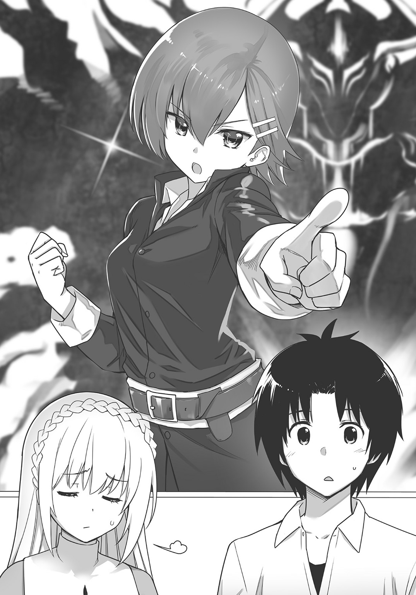
「それも全部説明したでしょ？ カトリセンコウもラーメンも日本の文化だって」
セリカは少し呆れたように言った。それからちょっと直人を見て、
「我が君、申し訳ありません。シャナンは自警団の中でも最強の少女なのですが、ちょっと困ったところがありまして。魔王などという存在を本気で信じているので――」
「魔王はいる！ 伝説もあるじゃないか。確かな存在だ」
シャナンはきっぱりと言った。直人は首をひねって訊いた。
「それってどういう伝説なの？」
「おとぎ話だよ。このあたり一帯に伝わる......」
と、回答したのはカイルだった。彼女は続けて語る。
「いまからおおよそ四百年前、世界は魔王に支配され、人々は恐怖のどん底にあった。そのとき、どこからともなく勇者が現れた。群衆の期待を一身に背負った勇者は伝説の剣を振りかざし、魔王に戦いを挑んだのである。そして勇者は、長い長い悪戦苦闘を繰り広げた末、ついに魔王を退治した。人々は口々に勇者を称え、世界は平和を取り戻した――こんな感じの話だよ」
「なんてベタな話なんだ......」
子供のころに遊んだＲＰＧの筋書きが、そんな感じだった気がする。
「だけどカイル、よくそんな詳細に話を覚えているね」
「子供のころ何度も聞かされたから覚えちゃった。眠れない子供をあやすためにお母さんがよく話すんだよ」
要するに『桃太郎』みたいなものか、と直人が思ったところで「おとぎ話ではない！」とシャナンがカイルに嚙みついた。
「勇者も魔王も確かにいたのだっ！ だから私は......私はいつか復活する魔王を倒すために修行したのだ！ そして強くなったのだ！」
「すごい動機......しかもそれで自警団最強になるとは......」
直人が啞然としながらそう言うと、自警団のメンバーもそれぞれ顔を見合わせながら言う。
「強いことは強いんですよ」「ほんと、十七歳とは思えない」「頭も別に悪くはないんですけどねぇ」「この妄想癖さえなければ......」「なんでそこだけ残念なんだろう」
「うるさいぞ、外野！」
シャナンは目を剝き、自警団の仲間たちに吠えかかった。
「......まあ、とにかくいろいろ把握はしたよ」
直人は嘆息交じりにそう言うと、改めて事務所の中を見回した。
「えっと、そろそろ本題に入ろう。セリカから話は聞いていると思うけど、エルトリア神聖国は、君たちを正式な騎士として任命したい」
その言葉で、自警団の若者たちはいっせいに顔を引き締めた。
自警団のメンバーはいずれも若い。年齢は十代半ばから二十代まで。農家の息子や職人の娘などさまざまな者がいたが、誰もが一般大衆の身分であった。
直人はセリカから聞いていた。すなわち、自警団のメンバーは誰もが騎士になることを望んでいる、と。みんな、エルトリア神聖国のために頑張りたいと言ったのだ。
だから、直人がここまでやって来たのは、多分に形式的なものだった。
「みんな、騎士になってくれるかな？」
「「「はい！」」」
自警団の者たちは、一斉に返事をした。
「じゃあ、これからよろしく。自警団はボランティアだったらしいけど、今後は国が給料を支払うからね」
「ありがてえ！」
と、自警団の誰かが叫び、全員が一斉にそちらを見る。叫んだ者は赤面し「あ、ありがとうございます。......王様」と、面目なさそうに言ったので、全員が大笑いになった。
「まあ、気軽にやってよ。俺も堅苦しいのは好きじゃないから」
「あの、ところで王様」
そのとき、一人の女性が手を挙げた。
「騎士団長は、結局、その......。シャナンがやるんですか？」
「............」
突然、事務所内が静かになる。
その場の誰もが、シャナンに注目した。
「っ......」
彼女は恥ずかしくなったのか、顔を赤らめてさっと目を背け、
「フッ。......見損なうなよ。騎士団長？ くだらない......。このシャナンに、国家の飼い犬になれと言うのか......しかも魔王の......」
「シャナン、あなただって分かっているでしょ？ 我が君が魔王じゃないってことくらい」
セリカが言うと、シャナンは目を伏せてぶつぶつ言い始めた。
「だ、だって、この世に生まれて十七年、魔王なんて影も形もなくて面白くなかったし。そこに変な王様が召喚されたから、これが魔王じゃなかったらもう誰が魔王なんだって話だし。これが魔王じゃなかったら現実がつまらなすぎるではないか......」
「君が面白いかどうかだけで魔王にされたらたまらないな......」
「我が君。......あの、非常にお腹立ちとは存じますが、ここは一つご容赦を。シャナンは本当に強いのですから。我慢してください」
「まあ、セリカがそう言うならいいけどさ」
実のところ、本当に強いのかな、などと疑問に思っているのだが。
「とにかく騎士団は結成です。来月から皆さんには月給にして銀貨十五枚を与えますので、どうぞよろしくお願いします」
その言葉に自警団改め騎士団のメンバーは大きくうなずき、それぞれ返事をした。ただしシャナンだけは腕を組んで、横柄に「うむ」などとうなずいたので、セリカはため息をついたのであった。
騎士団を作ろう！
それから直人たちは、騎士団に必要な道具を揃えようとした。
神殿内の金庫室に入る。室内には、木箱がたくさん詰められていた。トマが蚊取り線香の貿易で稼いできた金貨千五百枚と銀貨二千五百枚が中に入っている。この金で、鎧や盾、兜、さらにランプや薬など、騎士団に必要な道具を買い求めることにしたのだ。
道具の調達はカイルとトマに金貨五十枚ずつを渡し、すべてを一任することにした。二人ならばうまいようにやってくれるだろう。
ところが問題は武器だった。
なるほど国内の警邏だけならば、これまで通り、樹木で作った警棒だけでも充分だ。しかし騎士団は国防のための存在でもある。となるとやはり剣が欲しい。だが、
「武器はさ、締め付けが厳しいんだよね」
と、トマは眉宇を寄せて言った。
「例えば、ゾルダックはたいていのものを売買しているけど、武器についてだけは、国家が厳重に管理しているんだ。ゾルダック国民でも身分がちゃんと証明されていないと剣も槍も買えないし、まして外国人が買うなんてとんでもない」
「へえ......」
直人は、日本と同じだなと思った。現代日本でも、銃だけは容易に入手できない。
「ゾルダックの鍛冶屋にワイロを渡して依頼すれば、あるいは一本、二本の剣ならこっそり打ってくれるかもしれないけど......」
「俺たちが必要としているのは三十本の剣だ。弓も必要だけど、まずは剣が欲しいね」
「遠い国に行けばあるよ！ あたし、そこで短剣買ったことあるし」
カイルが手を挙げた。直人は彼女のほうへと向き直って尋ねる。
「その国まで、どれくらいかかる？」
「馬を思い切り飛ばして、往復一か月くらいかなあ」
「それはちょっと遠いなあ」
武器は、もう少し早く欲しい。
「エルトリアに剣を打つ鍛冶屋はいないの？」
直人はセリカに向かって問うてみた。だが彼女は首を振った。
「昔はおりましたが、いまは......」
「ああ......例によって出ていっちゃったのか」
セリカの回答に、直人は肩を落とす。
さもありなん、騎士団もいない国に武器を作る鍛冶屋がいても商売にならない。
「となると、やっぱり武器を仕入れるには、あっちに行くしかなさそうだ」
「あっち？」
カイルが小首をかしげる。直人は微笑を浮かべて「いつものところ」と答えた。
「日本に戻って、武器を買ってくるんだよ」
そう言うと、直人は室内の箱から金貨二百枚を取り出して、革袋に入れた。
刀を買うには？
セリカの魔法によって、直人は日本に戻ってきた。
「あたしも日本に連れてってよー！ ナオトー!!」
と、悲しげな声を何度も何度もあげながら、同行をせがんできたのはカイルだったが――「冒険目的で世界間を移動するなんて論外よ。魔法は遊びに使うものじゃないの！」というセリカの言葉によって彼女の懇願は却下された。
そんなわけで、結局今回も一人で戻った直人であった。
（日本に来るくらい、いいと思うけどなあ）
セリカは真面目すぎると思いながら、アパートを出る。
「ま、それはそれとして、武器を買いに行かないとね」
直人の買う物は決まっていた。
日本刀だ。騎士団に日本刀を持たせたいのだ。
そんなわけで、刀剣屋に向かう――
「と、間違えた。まずは質屋さんからだ」
くるりと、きびすを返して商店街の質屋に向かう。
そしていつものように、エルトリアから持ち込んだ金貨を換金した。
この日の相場では、金貨は一枚、十一万五千円だった。直人はなるべく大量に換金したかったが、質屋のほうで「そんなにたくさん現金を出せない」と言われたので、この質屋で換金するのはとりあえず金貨十枚分にした。それでも百十五万円の現金になった。
「まだ足りない。金貨を全部換金しないと、日本刀は買えないはずだ」
日本刀が、どんなに安いものでも十万円以上はすることを直人は知っていた。もちろんそれは最低価格だから、もう少しだけ値段を上げて、五十万円クラスの刀が欲しい。それを三十本揃えるとなると一千五百万円の現金が必要だ。
「金貨を二百枚持ってきていてよかったなあ......」
全部を換金すれば、今日の相場なら二千三百万円になるはずだ。
「我ながら麻痺してきてるな。家一軒建てられる金で、日本刀を買い集める。変な話だよ」
苦笑しながら、街をゆく。
歩きながら、日本刀について考える。
以前、日本刀について書かれた本を、読んだことがあるのだが――
まず多くの人に誤解されている事実。日本刀は、購入するのに資格や免許は必要ない。また、警察に届出をしなければならないと思っている人も多いが、別にそれも必要ない。
必要なのは、刀剣についての『登録』なのだ。その刀の長さや反り、銘文などの状態、さらには所有者の名義について、刀剣類登録証と呼ばれる書類に『登録』しなければならない。しかもその登録先も、警察ではなくその都道府県の教育委員会だ。日本刀は文化財なので教育委員会の管轄なのだ。
そしてその教育委員会への『登録』も、日本刀を購入した場合、購入先の業者が消費者に代行してやってくれる（してくれない店もあるらしいが）。
しかしこれがなぜ、日本刀を買う場合、警察への届出が必要だと認識されるに至ったのか。
これには理由がある。例えば古い家の中から日本刀が出てきた場合、これは警察にまず届出をしなければならない。その上で、出てきた日本刀について違法性がなく、また文化財として価値がちゃんとあると判断された場合、その日本刀は文化財として教育委員会に『登録』され、家主のものとなるのである（この『登録』は家主本人がやらねばならない。業者から購入したものではないからだ。また文化財としての価値がないと判断された場合は廃棄される）。
要するに、日本刀の購入はそう難しくない。業者から刀を購入する場合はただ買うだけでいいのだ。
（もっとも、異世界の騎士団に装備させるために買います、なんて言ったら、刀剣屋の人は売ってくれないだろうけど）
直人はそれを話すつもりはなかった。話したところで信じてもらえるとも思えないが......。
とにかく直人は歩いた。――小さな質屋でチマチマと換金していては時間がいくらあっても足りない。貴金属の店に行って、一気に換金してもらおう。
そう思った直人は商店街を抜けて街の中心部に向かい、自社ビルを持つ大きな貴金属販売店に入店した。
そして金貨百九十枚を一気に換金し、二千万円以上の現金を手にしたのである。
紙袋に二千万円を入れたまま街を歩くのは、さすがに緊張した。
日本刀を買いにいこう！
それから直人は携帯電話を取り出すと、ネットで刀剣を扱っているお店を探した。
「......お、あった。なんだ、けっこうあちこちに刀剣屋ってあるんだな」
隣町に一軒、さらにその隣町に一軒、電車に乗る必要があるが市の中心部まで行けばさらにもう一軒、刀剣屋があることが分かった。
分かれば行動するだけだ。直人は一度アパートに戻って、現金二千三百万円をリュックサックに入れるとそれを背に負ってから、自転車にまたがり隣町の刀剣屋を目指したのであった。
そして目的地に到着――
（しかし二千三百万円って、案外軽いな......）
二千枚以上も紙幣があるともう少し重いと思っていたが、存外、持てるものであった。
刀剣屋に入ると、店内を見回す。店は思ったよりも奥行きがあり、広い。その中に二メートルくらいの高さがあるショーケースが立ち並び、ケース内には日本刀が飾られていた。
店の奥のほうに壮年の男性が一人おり、直人の姿を確認すると「いらっしゃいませ」と小さく頭を下げてくれた。
直人はショーケースの中を確認する。
日本刀は値段も時代もさまざまで、室町時代や江戸時代のものから、昭和や平成のものまで揃っていた。
（刀一本に使える予算はいくらだろう？）
携帯電話を取り出して、電卓機能を使い計算する。直人の持ち金、二千三百万円を三十で割ると、約七十六万六千円になる。それが日本刀一本に使える予算だ。
「お客様、日本刀に興味がおありですか」
そのとき、店員の男性が、微笑を浮かべて声をかけてきた。
「ええ、まあ......」
「そうなんですか。いや、最近は若い人の中にも日本刀に興味をもつ人が増えてきましてね、嬉しい限りです」
「はあ......」
直人は曖昧に答える。......刀剣屋の店員と話すなど初めての経験なので、どういう受け答えをすればいいのかいまいち分からない。
しかし、向こうから話しかけてきてくれたのだから、これはある意味ありがたい。いっそ店員のおすすめを買おうと思った。そうすれば大きな間違いはないはずだ。
「実は手ごろな刀が欲しいんですよ。七十六万円までなら出せますんで」
「おお、それはそれは」
店員の瞳に光が灯った。予算を提示したことで、本当に買う気があると判断したのだろう。
「それならいろいろありますよ。刀といっても価格はピンキリです。何百万、何千万もするものもありますが......」
「いや、それはさすがに......」
直人は苦笑いを浮かべた。そうですよね、と店員も笑ったが、実のところ買えなくもない。エルトリアの国庫にある金貨をもっと換金すれば、それこそ高級な日本刀を騎士団全員に配ることも可能だろう。ただ、いまは勝手が分からないのでとりあえず手持ちの金を提示したのだ。
「ま、七十六万円もあれば購入は可能ですよ。ところでどういう刀をお求めで？」
「そうですね、やっぱりなるべく丈夫で、切れ味が鋭くて、実戦に耐えうるような......」
と、直人が言うと、店員はちょっと眉を上げた。
しまった、なにか自分は変なことを言っただろうか。ド素人丸出しだっただろうか？
「お客さん、物騒なことを言いますね。......どういう刀というのは、時代や刀匠にこだわりがあるのか、という意味だったのですが」
それで直人はみずからの発言のおかしさに気が付いた。確かに、いま売られている日本刀はあくまで芸術品として売られているのだから、直人のセリフはかなりきわどい。
「あ、あはは。つまりその、かっこいい感じの刀が欲しかった、ということで」
引きつった笑いを浮かべて言った。......それから、
「刀匠にこだわりはないです。で......時代は......新しいほうから見せてもらえますか......？」
「......それなら、現代刀にしますか」
店員はまだわずかに怪訝そうな面持ちをしていたが、とりあえず奥のほうにあるショーケースの前に向かったので、直人もそれに従った。そして、
「現代刀といっても、明治九年の廃刀令以降の刀なら全部現代刀になるんですがね」
と言いながら店員が見せてくれたのは、五十万円から七十万円の刀、三振りであった。
ショーケースの中で、いずれも鈍く輝いている。
「値段のわりには良い刀です。お手頃な一品だと思いますよ」
「なるほど......」
直人はうなずきながら、そこでふと、本で得た知識を思い出して問うてみた。
「そういえば、本で読んだことがあるんですが、現代刀は古い刀に比べて少し弱いらしいですね。昔の刀は武器だったけど、現代の刀は芸術品だから、丈夫さに差があると」
「ううん、そうですね。確かにそう言われることも多いですが、現代刀も充分に魅力的だと、私は思いますがねえ......」
店員は少し笑いながら言ったが、直人にとってそこは大事なポイントだった。
直人は考える。騎士団に実戦などなるべくさせたくはない。治安維持は警棒で行ってほしいし、戦争など起こさないように最大限努力するのが直人の仕事だ。日本刀を揃えるのは、あくまで威嚇と威容のためだった。
武器を持っている、ということそれ自体が治安維持に繫がることもある。現代警察の拳銃のようなものだ。なるべく使うべきではないが、奥の手として保有はさせておきたいのだ。
（古い刀も見たいな......）
そう思った直人は店員に言って古い刀も見せてもらった。
古い刀の中にも区分がある。室町時代以前からある刀を古刀、戦国時代末期から江戸時代中期の刀を新刀、江戸時代末期から明治時代初頭までの刀を新々刀と称する。
「古い刀といっても、例えば新刀なんかは平和な江戸時代に作られていますから、武器というより美術品としての評価が高い、なんてこともあります。実戦に耐えうる刀をお求めなら室町時代以前からある狭義の古刀のほうがいいかもしれません」
「......なるほど」
と、いちおう答えてはみたものの、目の前にある刀はいずれも美しく、また荘厳である。古刀も新刀も、正直なところ違いがよく分からない。直人は首をひねりながら、店員に尋ねた。
「そもそも、なんで古い刀のほうがいいと言われているんですかね？」
「そうですねぇ、やっぱり材料とか、それに刀匠の技術が違うものですから」
「やっぱり昔の刀匠はすごかったんですね」
「ええ、確かにすごかったでしょう。もっとも私に言わせれば、現代は日本刀を打つのに制限がたくさんあるんですね。刀匠はいまや全国に三百人ほどしかおらず、その人たちも、法律によって年間に二十四本しか打てないように定められていますし」
「へえ......それは初耳です」
「現代の刀匠だって捨てたもんじゃないと思いますよ。昔の刀匠と同じ条件で打たせてみれば、きっといい刀ができると思うんですが......まあこれは難しい仮定ですがね。それでお客さん。どの刀をお求めになりますか」
「うーん、そうですね......」
騎士団に持たせる日本刀は、実戦に使う可能性もあるのだ。
それならば、なるべくなら良い刀を与えてやりたい。
「この際、時代は問いません。純粋に店員さんのおすすめを頂けませんか」
そう言うと、店員はうなずいた。
「分かりました。では早速手続きを開始して――」
と、店員が次の行動に入ろうとしたので、慌てて直人は告げた。
「あ、いえ、まだ買い物は終わってません。......すみません、言ってなくて。あの、もっと買いたいんですよ」
直人は、さわやかな笑顔で告げた。
「あと二十九本。つまり合計で三十本の刀が欲しいんですが」
「..................三十、ですか？」
店員は、呆然とした顔で問うてきた。
「そうなると、お客さんの予算七十万円というのは、一本あたり、ということですか？」
「そうです」
「となると、刀三十本で、合計......二千万円以上になりますよ？」
店員は戸惑った面持ちでそう言ったが、直人は笑みを崩さなかった。
「大丈夫です。お金、あります。はい、この通り」
直人はリュックサックを開くと、中の札束を店員に見せた。
店員はさすがに目を剝いた。そして「お客さん、刀を三十本もどうするつもりなんです......？」と、真剣極まる表情を見せた。直人は慌てて、
「じ、実はですね、その。......居合の道場を開くので、師範に、練習用の真剣を買ってこいと言われたんです。こういうの初めてなもので、戸惑っちゃってすみません」
愛想笑いを浮かべつつ告げる。店員は一瞬だけ、納得したようなしないような表情を浮かべたものの、そこはさすがにプロの商売人である。すぐに微笑を浮かべて、
「そういうことでしたか。そういうことなら、今後ともぜひごひいきに」
と言ったので、直人も笑って頭を下げた。
「本当に。こちらこそ、今後ともごひいきに......」
国王と騎士団長
「我が君、お帰りなさいませ。お疲れ様でした」
エルトリア神殿に戻ってくると、セリカが出迎えてくれた。
「ただいま、セリカ。日本刀、揃えてきたよ。人数分ちゃんとね」
そう言って、刀を一本取り出してセリカに見せる。彼女は鞘から刀を引き抜くと、その白刃を空間にさらしながら眺め、それから感嘆の息を漏らした。
「これが日本の剣ですか。......美しい反りです。これは見事ですね」
「美しいだけじゃないよ。すごく切れる。......さ、シャナンのところへ行こう」
そう言って直人たちは神殿を出ると、日本刀を抱えながら中央通りをまっすぐ歩いた。一度に三十本全部は持っていけないので、数本ずつ運ぶことにする。
通りを歩いていると、以前より、明らかに人が増えているのが分かった。行き交う者たちの間にも笑みが浮かんでいる。活気があるのだ。
なんとなく、国の雰囲気が明るくなった気がした。いいことだ。
そう思って笑顔で歩みを進めていると――
「キャアアアアアアア――ッ!!」
突如、雷鳴のような悲鳴が聞こえた。
直人は思わず、顔を険しくする。
「なんだ、いまの叫び声は......？」
「我が君、あそこです！」
セリカが指さしたその先には、なにやら人だかりができていた。
駆け足で近付く。すると、そこは酒場であることが分かった。しかも顔を赤くした酒臭い男が、なにやら声を荒らげて暴れ回っている。
「なに見てんだ、てめえら。やるのか、コラァ!!」
人に絡み、あるいは店の机や椅子を投げ飛ばして、やりたい放題だ。
「酔っ払いかよ」
「最近多いな、こういうの......」
「ありゃ、ゾルダックの人間だぜ。見ろよ、剣を持ってる......」
野次馬の一人が指摘した通り、酔漢は腰に剣を帯びていた。赤黒い鞘に収まっているその剣は、かなり太い剣のようだ。
そのときセリカが「止めましょう」と一歩前へ出た。
「ま、待てよ、セリカ。危ないって」
「だけど、止めないわけにもいかな――」
と、セリカが言いかけたそのとき、群衆の中から、疾風のように飛び出した人物がいた。
短い赤毛を風で揺らしたその少女は、
「シャナン......!?」
直人は思わず目を疑った。
彼女の行動にではない。動きそのものに、である。
速い。とにかく速い。彼女は短めの警棒を腰から引き抜くと、
「下郎が！」
短く叫んだその直後、先手必勝とばかりに――がん！ と、酔っ払いの顎下部分を素早く一撃したのだ。
顎下は人体急所の一つであり、強打されると意識を失う。シャナンはそれを知った上で、攻撃を仕掛けたのであろう。
男は反撃もできないまま、
「んが」
と、声にならない声をあげてから、その場にどさりと倒れ込んだ。
まったく瞬間の出来事だった。誰もが一呼吸する間もなかった。
シャナンは、やや気取った口調で、
「つまらん男だ......」
と、そう告げると、警棒を腰のベルトに差して、両手をパンパンと叩いた。
汗もまったくかいていない。涼しげな顔で、短い髪をかきあげている。
「す、すごいな......」
直人は口を開けたまま、彼女のしぐさを呆然と見つめる。
「どうですか、我が君。強いでしょう、彼女は」
「う、うん。まさか本当に実力があるとは思ってなかったから......」
「わたしが初めて見たときもこんな感じでした。やはり彼女ならば、騎士団を任せられます」
「そうだね......」
と、直人が小さくうなずいたそのとき、酔っ払いが頭を振りながらゆっくりと起き上がった。
「こ、小娘ェ......」
「もう回復したのか、酔っ払い。図体がでかいだけはあるな」
シャナンは強気を崩さない。さもあろう、実力は雲泥の差なのだから。
「もうやめておけ。貴様では私に勝てない」
それは彼女の忠告だった。だが酔っ払いは「うるせえ！」と雄叫びをあげると、腰間の剣を鞘から引き抜く。
「殺してやる、殺してやるぞ！」
群衆から悲鳴が上がる。シャナンは「正気か」と小さくうめくと再び警棒を構えたが、さすがにその面持ちは緊張の色を隠せない。
やがて酔っ払いが突っ込んできて、シャナンの身体を横なぎに攻撃してくる。まさか剣を棒で受け止めるわけにもいかず、赤毛の少女はひたすら回避運動に専念した。
「シャナン、危ない！ 逃げて！」
セリカが叫ぶ。だが、シャナンは退かない。彼女が逃げれば、他の者に危害が加わる可能性がある。それが分かっているのだ。
直人は小さく舌打ちした。シャナンが危ない、助けなければいけない。
（なるべく使わせたくなかったけど......）
心中で短くうめいてから、持っていた日本刀の束を地べたに置き、そしてその中から一本だけ、三十本の刀の中でも一番高価だった一振りを手に取って――
「シャナン！」
叫びざま、直人は、シャナンと酔っ払いのところへ飛びかかるように駆け寄った。
「なんだぁ、てめえは！」
「国王、危険だ。下がっていろ――」
「シャナン、これを受け取れ！」
直人はシャナンに向かって刀を思い切りブン投げた。彼女ははっしとそれをつかむ。
「それは俺の国の剣、日本刀だ。使ってくれ！ 君なら使えると思う！」
直人の言葉に、シャナンは首肯をもって応えた。
風の中、赤い髪を揺らしつつ、腕を振って刀を鞘から淀みなく引き抜く。
白銀の刃が太陽の光を反射させ、エルトリアの街並みを一瞬だけ照らした。
「へっ、なんだよ、その変な剣は。そんなわけの分からねえ武器で、このゾルダックの剣とやりあうつもりかよ!? ......ナメるんじゃねえぞ、小娘ェ！」
酔っ払いが両刃の大剣を振りかざす。
シャナンは怯えない。一直線に立ち向かっていく。
それは圧倒的なスピードだった。シャナンは、相手が剣を降りおろすよりもさらに早く、酔漢の前方に踏み込んで、そのまま日本刀を激しく横なぎに払った。その刹那――
ギイィン！
鈍い金属音があたりに響いた。酔っ払いの大剣が、真っ二つに断ち切られたのだ。剣先が、くるくると回転しながら地べたに落ちる。
「な――」
信じられない、と言わんばかりに絶句する酔漢。
そのスキを見逃すシャナンではなかった。
「終わりだ！」
彼女は一声を放つと、勢いよく飛び上がって日本刀を振り下ろし、酔っ払いの右肩に、容赦なく強烈な一撃を――がつん！
と、与えた。
「が」
......それが酔っ払いの最後のセリフだった。彼は白目を剝いてから、その場にどさりと突っ伏した。
今度こそ、完全に気絶したらしい。
男はそのまま、しゃべらなくなる。
「......ふう」
シャナンはさすがに息を吐くと、その場にぺたんと座り込んだ。
「心配するな、酔っ払い。......刃のないほうで殴っただけだ」
そう言ってシャナンは、刀の峰をちらりと見つめた。いわゆる峰打ちだ。
なるほど、酔っ払いは気絶しているが斬られてはいない。骨にヒビくらいは入っただろうが、血はまったく流していなかった。シャナンの配慮であり優しさだった。
「まったく、くたびれるな。勇者の仕事は」
その光景を見ていた人々は、しばしの静寂のあと――やがて大きな歓声をあげた。
「よくやったぜ、姉ちゃん！」
「ゾルダックの酔っ払いめ、ざまあねえぜ！」
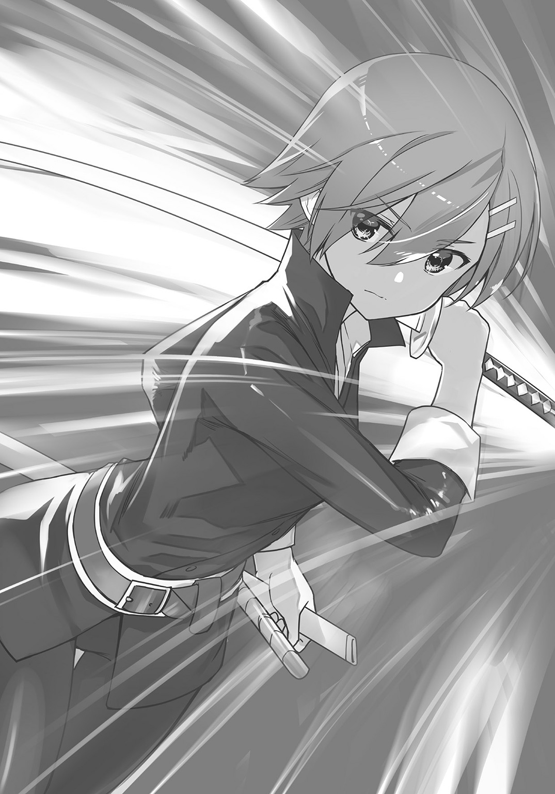
「王様も、剣をよく投げた！」
人々は、シャナンと直人に拍手喝采だ。
そのときちょうど、自警団改め騎士団のメンバーが数人、やってきた。倒された酔っ払いは、彼らが事務所に無理やり引っ張っていく。彼にはあとで、直人とセリカの二人によって、然るべき刑罰が下されるのだ。
それを見届けた上で直人は、軽く手を上げ群衆の賞賛に応じてから、セリカをかたわらに従えて、シャナンの下へと駆け寄った。
「シャナン、大丈夫か？」
「おかげさまでな。......しかし不覚を取った。魔王を倒そうとする者が、あの程度の敵に苦戦するとは、まだまだ私も修行が足りない」
「まだ言うんだ、その話......」
直人は苦笑いを浮かべたが、この期に及んでまだ続けるとは。彼女は自分の想像よりも、ずっと大物なのかもしれない。
「でも、良かった。シャナンが無事で」
セリカはシャナンの安全を心から喜びつつも、直人を見つめて、
「我が君、危ないことをなさいます。あの酔っ払いが襲ってきたらどうなっていたか」
「ごめん。......だけど、シャナンを助けなきゃいけないって、そう思ったから」
「............」
シャナンは、直人の言葉に一瞬で沈黙すると、少しだけ顔を赤くして目をそらした。
こんな可愛い顔ができるんだ、と直人は内心ちょっと笑いながら思ったが――しかしそれ以上は敢えて触れず、それよりも、と言わんばかりにシャナンの持っている刀を見た。
「その刀。さっそく役に立ってよかったよ」
「あ、ああ。......すばらしい武器だ。おそろしくよく斬れる剣だな。まさかあの男の剣を両断するとは思わなかった」
「それは刀といって日本の剣なんだ。日本の騎士のことをサムライっていうんだけど、刀はサムライの魂とさえ言われているんだよ」
「魂......」
シャナンは刀身を太陽に掲げ、その白刃の輝きに見入る。
剣戟を経たというのに、シャナンの持っている日本刀には刃こぼれ一つ見えなかった。
日本刀は、異世界の大国ゾルダックの大剣に、見事その強度で勝ったのである。
「美しく砥がれた剣だ......なるほど、これはすごい技術で作られたものだな」
「分かるのか、それが」
「いちおう私は金物屋の娘だからな。父が作るのは日用品だが......それでも、少しは見抜けるつもりだ。どれほどの技術でその物が作られたのか」
日本刀を見つめるシャナンの瞳は、わずかに陶酔の様相を見せている。
「極めて良質の鋼を徹底的に鍛錬し、砥ぎあげている......さらにそこに、軟鋼で出来た粘りのある背の部分を合わせるとは......見事な技術だ。これならば切れ味が良いだけではなく、打ち合ってもそうそう折れたり曲がったりしないだろう。先ほどの戦いで証明されたようにな」
シャナンは刀身を食い入るように眺め続ける。
「ニホントウ、か。すさまじい剣だ。だが、この剣の一番評価するべきは刀身の反りだな」
「反り？」
と、セリカが小首をかしげると、シャナンはうなずいた。
「反りがあったほうが、腰に差した鞘から抜きやすい。なによりも、斬る、という能力のためにこれほど合理的な形状もあるまい。なぜならば、刃物は単に押し付けるだけでは斬れない。斬るためには、引くことが大事なのだ」
「......そうか、ナイフで肉や魚を切ろうとしても、ただナイフを当てるだけじゃ切れない。ナイフを動かして材料を切らないといけない......」
「その通りだ、国王。普通の刃物はそうだ。しかしニホントウは刀身を反らせることで、その身に引くのと同じ効果をもたせているのだ。対象物に刀身を当てただけでずばりと斬れるような刃物に仕上げているのだよ。この技術はもう、見事と言うほかないな」
そこまで語ると、彼女は刀を鞘に収めた。
「ニホントウ。素晴らしい武器だ」
惚れ惚れとした顔で、シャナンは鞘に収まった日本刀を手に取ってからまた眺めた。ひどく気に入ったようである。それを見て直人は、刀を日本から持ってきてよかったと思った。
「それだけ分かるシャナンも素晴らしいよ」
「ほんとに。やっぱりあなたは騎士団長ね」
直人とセリカの賞賛に、シャナンは再び頰を染めたのだが、しかし彼女はふっと笑った。
「国王、ありがとう。助かった。あなたがいなければ、どうなっていたことか。私も、周囲の人々もな」
「いや、それでも俺だけじゃ、あの酔っ払いは追い払えなかったよ。シャナンがいればこそ、この国の治安は保たれた」
「いや、私は......」
シャナンは、さらにはにかんだ。そしてパンパンと全身を叩いて埃を落とすと、その場に片膝をついてから、丁寧に頭を下げたのだ。
「あなたは立派な君主だ。国王陛下」
「君も素晴らしい戦いぶりだったよ。騎士団長」
直人は白い歯を見せてから、シャナンの肩をぽんと叩く。彼女も薄い笑みを見せた。
「お見事です、我が君」
背後のセリカが、二人を祝福するように小さくつぶやいたのが分かった。
新生エルトリア騎士団と、その団長が誕生した瞬間であった。
第五話 紙幣を作ろう！
読書ライフ、未だ到来せず
「ふふふ......」
直人はベッドの上に寝転ぶと、枕元の文庫本をぽんぽんと叩いた。
いまから、読書をしようとしているのだ。かなり久しぶりのような気がする、まとまった読書タイム。
まったく最近は少し頑張りすぎた。一生分働いた気がする。読書の時間を削ってまで、エルトリアのために労働したのだ。本当に自分を褒めてやりたい。
エルトリア神聖国はずいぶん軌道に乗り始めた。主だった課題は一段落した。これでしばらく直人は、本だけを読むまったりとした日々を送ることができる。
直人は文庫本を手に持つと、おもむろにページをめくり始め――
「我が君！」
ばたん、とドアが勢いよく開き、セリカが室内に入ってきた。嫌な予感がした。
「我が君、朗報です！」
君が入ってきた時点で既に悲報なんだけど......。
そう思いつつ、直人は上体を起こして「どうしたの、セリカ」と視線を向けた。
「トマさんのお友達の商人たちがやってきました。ラーメンを買いにきたそうで」
「ああ......」
あのエセ関西弁の人たちか。
そういえば、ラーメンを売る約束をしていたな、と直人は思い出す。
「セリカ、ラーメンはいま、いくつ生産できてるっけ？」
「はい。この一か月で、七万袋のラーメンを作り出しております」
「大したもんだよ。みんな、頑張ってくれたんだなあ」
直人は微笑を浮かべつつ、やっぱり商人との交渉は俺が行かないとだめだろうな、と思いながら心中密かにため息をついた。
枕元に文庫本を置く。――読書タイムは、まだお預けのようだった。
ラーメン輸出
ラーメン工場の倉庫に行くと、例のエセ関西弁商人たちがトマと会話をしていた。
「やあ、みんな」
と、直人が挨拶をすると、商人たちは「これは王様、ご機嫌麗しゅう」と丁寧に頭を下げる。
「約束通り、来たんだね」
「もちろんですわ。あんなに美味いラーメン、そら買わせてもらいまっせ」
「ありがとう、商人さん」
「水臭いでっせ、王様。ワイのことはカンサイと名前で呼んでほしいでっせ！」
「......そんな名前だったんだ」
カンサイとか、名前、そのまんまじゃないか......。
と、直人は心中でツッコミを入れたが顔には出さず、
「エルトリアラーメンは倉庫の中にあるよ。七万袋、生産してある」
そう言いながら、直人はセリカとトマの二人を従え、工場の隣にある大きめの小屋へと入っていった。その小屋が倉庫なのである。
倉庫の中には木箱が大量に詰められている。
トマが箱のふたを開けると、中には、小さな紙袋に入ったラーメンがぎっしり詰まっていた。
「王様、一か月でようこないに作りましたな」
彼は、心から感心したように言った。直人は口元に笑みを浮かべて答えた。
「みんなが頑張ってくれたおかげだよ」
特にセリカが、と直人は思った。工場で働く工員をうまく分担したのが彼女だったのだ。
工場で働く人数は三百五十人。その分担は、油を搾る搾木を使う係が百人、ラーメンの麵を作る係とその麵を揚げる係が九十人ずつ、そして袋に詰める係と菜の花農業係が七十人という割り当てだ。一人がラーメン一つを作るのに十五分かかるから、一時間で四つ、八時間の業務時間で三十二個のラーメンができる。
労働は五日のうち四日働く五日休一日制を採用。これはエルトリア神聖国に週という単位が存在せず、三十日で一か月という暦だったためだが、このため、この一か月で働く日数は二十四日になる。すると一人につきこの一か月で七百六十八個のラーメンを生産できる。それが九十人がかりだから、合計で六万九千百二十個のラーメンが完成、というわけだ。
もちろん、多少の時間差はあって、個人によって早くラーメンを作れる者もいればどうしても仕事が遅い者もいる。しかしエルトリアの国民はおおむね勤労意欲に満ちており、仕事にも真面目に取り組んだため、計算よりも多い約七万個のラーメンができたのだった。
「ほな、代金として金貨三千五百枚を置いていきまっせ」
「うん」
これでやっと、工員たちに給料を支払うことができる。
エルトリアの国家運営は、ますます順調になるだろう。
（この調子がずっと続くといいけど）
廃れた流行ほどゾッとするものはない。エルトリアラーメンが一時のブームで終わらず、これからも売れることを祈る直人であった。
エルトリアは好景気
それからエルトリア神殿の金庫室である。
「う、にゅ ！」
！」
重たい金貨の袋を、持ち上げようとしているセリカ。
しかし彼女は細身である。そんな芸当ができるはずもない。袋はびくとも動いていない。
「そんなに重いかなぁ、この金貨袋。セリちゃん、ちょっとなまってんじゃない？」
セリカのかたわらには、力を入れているようにも見えないカイルがいる。
鼻歌交じりに金貨袋を持ち上げては、部屋の片隅にひょいひょいひょいと積み上げていく。
セリカは感心するより呆れた顔でそれを眺め、直人もまた目を丸くした。
「カイルは、どこからそんな力が湧いてくるんだ？」
「どうしてだろうねー。一人で荷物抱えて冒険してると、体力がつくからじゃない？」
「そういうものかな」
「そういうもんだよ～。そういえば、ちょっと前なんかもさ、洞窟の中を冒険してたら、こ～んなに大きな岩が転がってきたことがあったんだ！ 頑張って受け止めたけどさ、あれは危なかったよ！ 下敷きになったら死んでたね！」
『こ～んな』のところでカイルは、両手を左右に思いっきり広げる。そんなサイズの岩を、どうしてカイルの細腕で受け止められるのか。これはもう世界の不思議である。
「......ま、確かにそんな経験をしていれば、金貨袋を持ち上げるなんてそりゃ簡単だよな」
直人は愛想笑いに近い笑顔を作った。
それにしても、最近お金がどんどん集まっている気がしている。蚊取り線香やラーメンの貿易で大量の硬貨を手に入れたエルトリア神聖国だが、しかし儲けた金額以上の硬貨がこの場にはあるような気がした。
そのことを何気なくつぶやくと、セリカはさらりと回答した。
「税金を徴収していますからね。我が国の民は毎月、収入の一割を国庫に納めることになっております。失業者の方々が市壁の修理やラーメン工場で収入を得ましたので、その一割がこの倉庫に集められたのですよ」
「一割の税金......って、いつの間に!? 誰が集めたのさ」
「それはもちろん、わたしですが」
セリカはしれっと答えた。さらに彼女はにこにこ顔で、
「我が君が本を読まれているときに租税の仕事を行っております。我が君は勉強に励まれているのですから、わたしも負けないように仕事をせねば」
なんてことを言ったので、直人は「......無理しないようにね」と言うしかなかった。
「......だけど、いくら失業者対策をしたといっても、ちょっと税金が集まりすぎじゃない？ こんなに集めていいのかな」
と、直人が疑問を口にすると、セリカは落ち着いた声で回答した。
「無理もありません。景気が良いですから、すべての収入が増えているのです」
いま、エルトリア神聖国は空前の好景気に沸いている、とセリカは言う。
流れはこうだった。
エルトリアには、最近国民が続々と戻ってきた。またラーメンの評判を聞いた旅人もやってきて、とにかく人間がどっと増えた。
人間が増えると消費が増える。エルトリア神聖国の市街にあった宿屋や酒場や食堂がまず儲かりだし、そこで働く人々の収入が増えた。
また、市壁の修理やラーメン工場の設立によって、かつては失業者だった人たち、こちらも収入が増えた。
収入が増えると、人間は強気になり、消費の量が増える。
すなわち、「よし、これまで毎月一着しか買ってなかった服を、今月から三着買うことにする！ 収入が一気に増えたんだから、これくらいはいいだろう」
なんてことになる。
すると服屋は当然儲かる。そして毎月、百着しか服を仕立てていなかった服屋に、五百も千も注文が来たりする。
この注文に応えるために、服屋は従業員を増やしていく。また人材が他の仕事に逃げないように、従業員の中で優秀な者は給料も上げる。そうなると、給料が上がった従業員は収入が増える。またお金をたくさん消費する。
すなわち、「よし、これまで毎月一足しか買ってなかった靴を、今月から三足買うことにする！ 収入が一気に増えたんだから、これくらいはいいだろう」
なんてことになる。
すると靴屋は当然儲かる。毎月、百足しか靴を生産していなかった靴屋に、五百も千も注文が来たりする。この注文に応えるために、靴屋は従業員を増やしていき――以下省略。
この流れがエルトリア国中に広がっていき、服屋も靴屋もパン屋も酒屋も食堂も、いろんなお店が儲かっていく。みんなの収入が増えていく。
収入が増えていくから、誰もが消費を繰り返していく。
誰もがお金を消費するから、やはり誰もが儲かっていく――
これが景気の好循環だ。
エルトリア神聖国はいま、その状態にあるのだと、セリカは言った。
紙幣の歴史
「なるほどねえ」
セリカの話を聞いて直人は、何度も何度もうなずいた。
場所は既に、金庫ではなくエルトリア神殿の食堂である。直人、セリカ、カイルの他に、シャナンとトマもやってきて、五人でラーメンをすすりながら、セリカの話を聞いていたのだ。
まったく景気というものは、人々の気持ちそれ次第で、大きく左右されるものだ。
贅沢をしたって構わない。どうせ来月は収入が増える、給料が上がる......。
そんな気持ちを人々が持てば、当然景気は良くなるのだ。
逆に、贅沢なんかとんでもない、先のことなど分からない、金は使わず貯めておこう......。
そんな気持ちを人々が持てば、景気は悪くなるのである。
（日本もあやかりたいほどだよ）
不景気の時代に育った直人は、心からそう思った。
「だけど王様。おかげでちょっと不便だよ」
「不便？ どういうことだい、トマ」
「だって、みんながどんどんお金を使うからさ、一回の取引の量が増えたんだ。これまで金貨一枚分しか物を買わなかった人が、金貨十枚分、一気に物を買ったりするものだからさ、毎日たくさんの硬貨が動く。硬貨って、けっこう持ち歩くのに大変なんだよね」
「......なるほど、そうか。景気が良くなると、一回の取引に使う硬貨の量が、どうしても上がっていくんだな。みんなの収入が増えているから」
「親方さんも言っていました。お金が増えるのはいいけど、硬貨が集まりすぎて家の床が抜けちまう、って」
セリカも、ラーメンをすすりながら言う。直人は、うーん、と考え込んだ。
エルトリア神殿は広いから、先ほどの倉庫の中などに、金貨や銀貨を大量に貯蔵できる。しかし一般家庭はそうではない。硬貨を何千枚も貯めておくなど、場所塞ぎになって仕方がない。火事なども怖いだろう。燃え盛る家屋の中から、金貨や銀貨を何千枚も持ち出せはしない。
金貨の取引に、いろいろと不都合が生じてきているのは、間違いないようだ。
「台車をたくさん生産しますか。持ち運びが便利になりますよ」
セリカが提案してくる。「まあ、それもいいけど」と、直人はやんわり回答しながら、しかし内心はどうかなと思っていた。その案は根本的な解決に繫がらない気がする。
そこで直人は、とあるアイデアを口にした。
「ねえ、日本では紙のお金があるんだけど、こっちでもそれができないかな？ エルトリアに紙幣を導入するんだ」
直人の言葉には、その場の誰もが怪訝顔を作った。
「紙......？ 紙のお金、ですか？」
「あれ、まだセリカは見たことなかったっけ？ こういうの」
直人は千円札を取り出すと、セリカたちにそれを見せた。
セリカはそれを手に取ると、驚愕の表情でそれを眺める。
「これは......確かに紙っ......！ し、しかし、これが通貨なのですか!?」
「うん。日本ではこれで物を売買してる。まあ硬貨もあるんだけど、紙のほうがメインかな」
「紙のお金。しかもこの絵柄の精巧さ。こ、これは、とんでもない技術力......！」
「ねーねーセリちゃん、あたしたちにも見せてよ、それ」
カイルがセリカの肩を叩く。セリカは震える手で、紙幣を彼女に手渡した。カイルは紙幣を眺めて驚き、またシャナンとトマも同じように千円札を見て絶句する。
紙がお金になっているという事実もさることながら、その紙の手触りといい、絵柄といい、デザインといい。どれもがエルトリア人にとっては驚嘆すべき事柄のようだ。
「これほど精巧なデザインならば、ニセ金を作るのも困難でしょう。そこまでちゃんと考えているのですね......」
「そういう面もあるだろうね。そうそう、ニセ金作り防止といえば――」
「ねーねー、セリちゃん。面白いよ、この紙。太陽に透かして見たら、真ん中の白いところにも、このおじさんの絵が出てくるの！」
「!?」
セリカはさっと、カイルのほうへ目を向ける。
千円札を光に透かして「見える見えるー♪」と楽しげにしているカイルがいた。セリカは再び千円札を覗き込み、透かしをその目で確かめると、立ちくらみでもしたかのように、その場でふらふらとよろめいてから尻もちをついた。
「これも......ニセ金作りの防止ですか......？」
「うん。それをいま言おうとしてた。透かしの技術だよ」
「どうやってあんな......透明の部分にまで絵を描くなど......なんという技術力......！」
セリカはよほどショックだったのか、こめかみに手を当てて、頭痛をこらえるかのように首を振っている。
「練り切りのときも驚愕しましたが、日本の技術力は怪物ですね......。ここまで細かい仕事ができるとは......。ところで我が君、わたしはあれから練り切りを戴いておりませんが――」
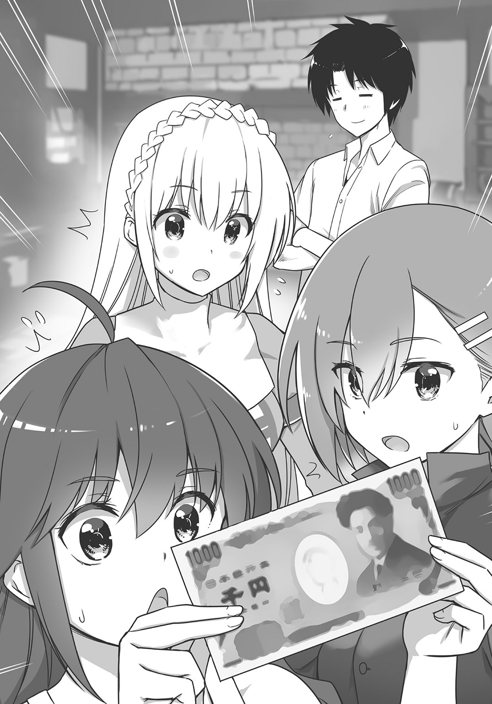
「最後にきっちり和菓子の話題を入れてきたね......」
別に忘れていたわけではない。和菓子を輸出する計画があるので、それに合わせて持ってこようと思っていただけだ。
ただ、和菓子はやはり賞味期限の問題がある。これをなんとかしなければ、蚊取り線香のように貿易の道具としては使いにくい。
「ねーねー、ナオト」
「ん、なんだい、カイル」
「紙のお金があるのは分かったんだけどさ。そもそも、なんで紙をお金にしてるの？ 日本には、金とか銀とか、そういうのないの？」
「いや、そうじゃないよ。日本にも、昔は金や銀のお金があったんだ」
「へー。それがどうして紙のお金になったの？」
「それはね、えっと......」
日本に紙幣が普及した理由は、前に本で読んだことがあるので知っていた。直人は頭の中で知識を組み立ててから、やがて順序立てて解説を始めた。
「そもそも日本も――というか、日本のある世界、地球っていうんだけど、地球上でも、かつては金銀の通貨が流通していたんだ。金銀を加工して硬貨にしていたんだな。だけど金銀の量は有限だし、それに金貨や銀貨は長く使っていると摩耗したり、傷がついたりしてしまう。あるいはさっきトマが言ったように、持ち歩きに不便という意見も出てきた。......そこで、ある商売が出てきたんだ」
「ある商売、と言いますと？」
「金や銀を預かっておき、『確かに預かった』という預かり証を発行する商売さ」
セリカの問いに、直人は落ち着いた声で回答した。
「そして、その預かり証こそが、紙幣の元になったんだよ」
「預かり証が、ですか？」
「うん。――例えばさ、セリカが俺に、金貨十枚を預けたとする。俺は『確かに金貨十枚を預かりました』という預かり証を発行する。そうしたら、その預かり証は金貨十枚の価値があるよね？ 預かり証を俺に渡せば、金貨十枚が返却される紙なんだから」
「た、確かに！ となると、その預かり証は、もはやお金そのものですね」
「そう。預かり証が紙幣の元になったというのは、そういうことなんだ」
直人は微笑を浮かべて言った。
「日本もかつてはこういう制度だった。銀行に紙幣をもっていくと、銀と交換する、という保証があって、その保証をもとに紙幣の価値を裏付けしていたんだ。これを銀本位制と呼ぶんだけど、その制度のもとで発行される紙幣を、兌換紙幣と呼ぶんだよ」
その後、さらに通貨は複雑な発展を遂げ、とりあえず現代の日本では銀本位制は採用されていない。......ここから先の話はさらに複雑怪奇になっていくので、説明はこのへんでいいだろう、と直人は判断し解説を終わらせた。
「ここで最初の話に戻るけど、どうかな、エルトリアでも兌換紙幣を発行してみたら」
「確かに紙のお金ができれば、かなり便利にはなるだろう。しかし......」
シャナンが会話に参入してきた。
「現実的に可能なのか？ エルトリアと、国王のいた日本は文化も文明も違う国だ。我々の国に紙幣が導入できるかどうか、よくよく検討する必要があると思うが」
「それは確かに......」
彼女に似合わぬ真面目な意見に、直人は少々面喰らいつつもうなずいた。
「それにロマンもないな！ 例えば勇者が魔王討伐の旅に出たとして、途中で使うお金が金貨や銀貨などではなく紙など。これはかっこよくないぞ。国王よ、この問題はどう思――」
「セリカ、どうだろう。現実的に可能な計画かな？」
「............なにもスルーしなくていいじゃないか......国王のばか......」
シャナンはしょげてうなだれた。ちょっとだけ涙目になっている。
「我が君の話を聞いている限りですが、紙幣の導入は不可能ではないと思います」
セリカは、真面目な表情を作ってしっかりと言った。
「もちろん大変な計画です。これまで我が国は、ゾルダック国が発行する硬貨だけを使用していましたから。これをエルトリア紙幣に切り替えるのは困難極まりない。......しかしいまのエルトリアならばできると思うのです」
「ふむ。......具体的な計画はどうする？」
「まず、紙幣の名前はエルトリアから取って『エール』にするとして」
セリカは冷静な声で提案を続ける。
「このエール紙幣に価値を持たせるため、金銀銅といつでも交換できるということを、国民に周知させるのです。そうですね、金銀銅ならばなんでも良いのですが、実際に流通している金銀銅の多くがゾルダック硬貨である以上、これを価値の裏付けに利用したらいいでしょう」
そう言うとセリカは、食堂の片隅に置かれてあった紙を持ってきて、詳細なプランを書いてメンバーに見せた。
「我が国において、金銀銅はそれぞれおおよそ十倍ずつ、価値が異なっていますから、このようにしてみればいいのです」
一エール紙幣と一ゾルダック銅貨を交換する。
十エール紙幣と一ゾルダック銀貨を交換する。
百エール紙幣と一ゾルダック金貨を交換する。
以上のことを、エルトリア国が保証した上で、各エール紙幣を発行する。
「じゃあさ、セリちゃん」
カイルは、穿いていたズボンのポケットからひょいと革手袋を取り出した。
「この手袋はけっこういいやつでさ、前に銀貨二枚で買ったものなんだけど、これは二十エールの価値があるってことになるの？」
「そうなるわね」
「じゃあこれから、これと同じ手袋を買おうとしたら、十エール紙幣が二枚いる。で、その十エール紙幣二枚は、エルトリア国にお願いすれば、銀貨二枚と交換できるってわけだ」
「そういうことよ、カイちゃん」
セリカはゆっくりとうなずいた。そして彼女はそのまま、直人の目を見て、
「問題は、エルトリア国の保証を民衆が信用するかどうか、そこにかかっています」
「そうだね」
セリカの言わんとすることは、直人にもすぐに理解できた。
先ほどカイルが言った『十エール紙幣二枚は、エルトリア国にお願いすれば、銀貨が二枚、貰えるってわけだ』というセリフは、エルトリア国を信用していればこそ出てくる言葉なのだ。
エルトリア国が約束を守らない、あるいは守る意思や能力がない、と国民が判断すれば、エール紙幣は決して流通しないだろう。その場合、紙幣はただの紙切れと化す。
本位制の紙幣を発行するということは、国の信用と能力が試されるということでもあるのだ。
「しかし国王よ。紙幣の偽造防止。これについてはどうする？ ただ紙にお金の額面を書いただけではニセ札がたくさん出るだろう」
シャナンが言った。騎士団長らしく、人々の生活を心配した指摘である。
するとカイルも手を上げて、
「あたしもそう思う！ だから偽造防止のために、ちゃんと紙幣を作らないといけないよね。日本のお金みたいに......」
「しかし、日本の紙幣は精巧の極み。デザインといい透かしといい、偽造防止にさまざまな策が施されています。あれをマネできるかというと......」
セリカは眉宇を顰めて、困り顔を見せる。
「あたしもいろんな国に行ってきたけど、日本の紙幣を作り出せるような技術、世界のどこにもないと思うよ。ゾルダックでも無理だと思う」
冒険者カイルのお墨付きである。精妙な紙幣を作り出すのは、相当に困難なことのようだ。
だが、直人はさほど動じずに告げた。
「偽造防止については、実はそこまで不安に思っていないんだ。実はね、日本の千円札ってさ、和紙で作られているんだけど」
「ワシ？」
「日本の紙のことだよ」
直人は再び千円札を取り出すと、その手触りを確認した。
絶妙な感触。薄くても重厚さを感じるその紙幣を、何度も何度も優しく指で触りながら、直人は穏やかな声音で告げる。
「その和紙を日本から持ってきて、エール紙幣の製造に使えばいいと思うんだ。この世界に日本の和紙は存在しない。これ以上ない偽造防止だと思うよ」
直人の言葉に、セリカは何度もまばたきをした。
紙幣発行計画
直人はセリカを従えて金庫室に赴くと、積み重ねられた木箱を見ながら言った。
「和紙はどれくらい必要になるかな」
「最低でも、現在、エルトリア神聖国に流通している硬貨の量と同数の紙幣を、発行する覚悟が必要ですから――」
セリカは発言しながら、手元の分厚い書類をなにやらめくり始める。
「エルトリア国内において、直近一か月で流通した硬貨の量は、銅貨が十五万枚、銀貨が二万五千枚、金貨が八千枚になります。もちろん、いずれもおおよその枚数ですが」
「金貨が八千枚も流通してるの!? 一か月で!?」
直人はさすがにぎょっとした声を出した。自分がこの世界に召喚されたときは、国家の借金が金貨二千五百枚で、それを解決するためにヒイヒイ言っていたというのに。
「それだけインフレが進んだということです。我が君が来た時点でのエルトリアの人口は七百人。国民の平均月収は銅貨換算で百二十枚ほどでした。そのころの硬貨流通量は、一か月で、銅貨が一万五千枚、銀貨が二千五百枚、金貨が四百枚といったところでしたが」
「............」
「現在、エルトリアの人口は千四百人でおおよそ倍になっています。また国民の平均月収は銅貨換算で六百枚ほどになり、五倍に跳ね上がりました。かつて無職だった国民がラーメン工場に就職し、さらに景気が好調になったので、平均月収も跳ね上がったのです。その結果――」
「硬貨の流通量が、二十倍に跳ね上がったわけか」
平均月収が短期間で五倍とは、すさまじいな......。
自分がやったこととはいえ、エルトリアの発展の大きさがちょっと怖くなった。
「こうなると、かなり大量の和紙が必要になるなあ」
「そうですね。――さしあたって、向こう三か月分、どれだけ流通しても大丈夫なくらいの紙幣を発行したいと思いますから......」
セリカはちょっと考え込んでから、
「一エール紙幣、四十五万枚。十エール紙幣、七万五千枚。百エール紙幣、二万四千枚。......合計で五十四万九千枚の紙幣を発行するべきかと存じます」
「おおよそ、五十五万枚も......」
さすがに少し気が遠くなった。
現代日本と違って、プリンターもコピー機もない世界である。紙幣を五十万枚以上も刷るのはどうしたものかと、直人は真剣に悩んだ。
現代日本で自分が刷ってくることも考えたが、しかし五十五万枚もの紙幣を日本から持ち込むとなると、それは一手間なんてものではない。さすがにそれは厳しい。なんとかエルトリアで紙幣を刷る態勢を、考えなければならない。
さらに、和紙の購入も一苦労だ。五十五万枚の紙幣を作るには、どれだけの和紙を購入すればいいのだろう？ 想像もつかない。
（和紙の購入はできるだろうけど......）
ラーメンをカンサイに売ったお金があるから、資金の問題はないだろう。だが、
「これが紙に化けるのかあ......」
直人は眼前にある木箱を開いて、金貨を一枚、ひょいとつまんだ。
「自分が言い出したことだけど、なんだかなあ」
「無駄遣いではありませんよ、我が君。エルトリアのため、民のためになるのですから」
セリカがにこにこ顔で言った。直人が、浪費をためらったかのように見えたのだろうが――実際のところ、直人は、この金貨一枚でどれだけの本が買えるんだろうな、と思ったに過ぎなかった。
エルトリアの財政を懸念したわけではなかったが......、それはおくびにも出さず「その通り、エルトリアのためだ」と、直人は少し引きつった笑みを浮かべたものだ。
和紙を買おう！
直人はそれから日本に戻り、まずいつものように金貨を日本円に換金することにした。
赴いたのは前回と同じ貴金属販売店である。エルトリアから持ってきた金貨を百枚、換金してもらうと、これでおおよそ一千万円の現金になった。
あとは和紙を買うだけだ。
和紙は、文房具屋に売られている。手漉きの、れっきとしたメイド・イン・ジャパンの代物が、一枚数百円で売られているのだ。
直人は文房具屋に赴くと、はたして一枚五百円の和紙が販売されていた。分厚さも手触りも申し分ない。この和紙ならば問題なく紙幣にできるだろう。
（さて、この和紙から何枚の紙幣が作れるだろう？）
和紙の大きさはちょっとした座布団ほどもあった。側にいた女性店員に和紙のサイズを尋ねてみると「タテ六十九センチ、ヨコ九十センチです」との回答があった。
携帯電話の電卓機能を使って計算する。
（確か、千円札の大きさがタテ七・六センチ、ヨコ十五センチだから、仮に千円札と同じサイズの紙幣をこの和紙から作るとすると――五十四枚の紙幣が作れる計算になる）
セリカは、約五十五万枚の紙幣を刷るべきだと言っていた。
一枚の和紙から五十四枚の紙幣を作るとなると、和紙は一万百八十五枚必要ということになる。かかる代金はおおよそ五百十万円だ。
買うことはできる。あとは買う量だ。
いま、店頭には数十枚の和紙しかない。在庫を含めても恐らく数百枚の和紙しかないだろう。
（今日のところは、あるだけの和紙を買っていこう。残りは店に頼んで取り寄せてもらうか）
と、考えをまとめていると、先ほど和紙のサイズを質問した店員が、にこやかに「お客様、なにかお探しですか？」と直人に話しかけてきた。
「いえ、探すのは終わりました。注文がしたいのですが、大丈夫ですかね」
「注文ですか？ 店頭にないものをお取り寄せ、ということで......？」
「はい、そうです。これと同じ和紙を買いたいんです」
直人は和紙を指さしながら、告げた。
「おおよそ、一万枚ほど欲しいんですが」
「い、一万ですか......！」
店員は、さすがに啞然としたあとで、
「わ、分かりました。......えっと、それでは......代金は五百万円以上になりますが」
「ああ、それくらいでしょうね。いますぐ支払います。だから、なるべく早く取り寄せていただけると助かります」
直人はそう言うと、リュックサックの中から札束をぽんぽんと五つ取り出した。これには店員ももっと驚いたようで「し、しばしお待ちを！」と答えたあと、
「お父さーん、ちょっといいー!?」
と、店の奥に向かって声をかけた。どうやら彼女は、このお店の娘だったらしい。
なんだか自分は、いつも店員さんを驚かせているな、と、直人は心中わずかに苦笑を浮かべたのだった。
セリカの知恵
それから直人は、店にあった分の和紙五百枚を持ってエルトリアに帰還した。残りの分は、また後日、文房具屋へ受け取りにいくことになった。
「我が君、お帰りなさいませ」
戻ると、いつものようにセリカが頭を下げて出迎えてくれた。
「ただいま、セリカ。和紙、持ってきたよ」
そう言って和紙を見せると、セリカは「わあ！」と瞳を明るくして和紙を触り始めた。
「素晴らしい手触りです。日本ではこんな紙を使っているのですね」
「いや、日常的にはもうあまり使っていないよ。......それでもセリカの言う通り、この独特の手触りを好む人はまだまだいるし、だから生産されているわけだけど」
「和紙はもっと評価されるべきですよ。わたしは和紙のことが気に入りました」
「気に入ってくれたなら買ってきた甲斐もあったよ」
直人もまた笑みを浮かべた。
「ところで、さっそく紙幣を試し刷りしてみようと思うんだけど。紙幣のデザインとか――それと、どうやって刷っていくかも考えないといけないね」
「その件ですが、我が君」
セリカは、指で和紙をさわさわしながら、しかし極めて軽やかに言葉を紡いだ。
「エルトリアの絵師に依頼して、紙幣のデザインをいくつか考案させようと思います。そうして出来上がったデザインを、今度は銅板職人に依頼し、銅版画にするのです。あとは日本から持ち込んだ和紙に、銅板を使って印刷すれば、エール紙幣の完成というわけです」
「そうか、銅版画を使って刷るわけか。確かにそれなら効率良くできるね」
さすがセリカだ。これならば紙幣を刷るのも問題なくできるだろう。
「それじゃ、少し休憩したら紙幣のデザインを絵師に依頼しにいこうか」
「はい。......ところで我が君」
「うん？」
直人が顔を上げると、セリカはにこにこと笑いながら言った。
「日本の紙幣には、人物の顔が印刷されていました」
「それがどうした？」
「ですのでエルトリアでも、我が君の顔を印刷した紙幣を、発行するべきかと存じます。いかがでしょうか、その点をぜひ絵師に話して――」
「......却下!!!」
エール紙幣誕生
それから数日経って、エール紙幣はついに試作品が完成した。
神殿の一室に、試作の紙幣が届けられたので、それを見つめる直人とセリカ。
直人の顔を印刷するというセリカの案は、君主の命によってあえなく却下された結果、紙幣のデザインはエルトリア神殿と、その紙幣の金額を描いたごくシンプルなものになった。
「買い物をするたびに、我が君の顔を国民全員が見る。これは理想的だと思ったのですが」
その光景は、俺にとっては悪夢だよ......。
内心ひそかに突っ込みながら、直人は出来上がったエール紙幣を穴が開くほど眺めていた。
完成したエール紙幣は、日本の紙幣と比較をすれば稚拙そのものの出来上がりだったが、それでもエルトリアの紙とはまったく違う触り心地で、高級感も漂っている。絵師の描いた神殿のデザインもなかなか秀逸なものだし、これならば容易に偽造はできないだろう。
「よし、それじゃこの紙幣を刷ろう。そろそろ日本の文房具屋さんにも、和紙が届くころだしね。俺がまた取ってくるよ」
「よろしくお願いします、我が君」
「紙幣を五十五万枚刷るには、どれくらいかかるかな？」
「おおよそ二十日といったところでしょう。その間に、我々もやるべきことをやらなければ」
「ああ、両替所の設立だね」
紙幣を持っていけば、金貨銀貨銅貨の数に応じてエール紙幣を両替する場所を、市街に設けなければならない。
また、紙幣がボロボロになったり破れたりした場合も、紙幣の状態に応じてこれをきちんと交換するというルールを定めた。金貨や銀貨が傷付いたときは、交換する先などなかったから、このやり方は有意義なはずだ。
「紙幣を刷るための人員も雇用しましたが、両替所の所員も雇わねばなりません。能力と人格、共に信頼に足る人物を雇わなければ。ことはお金に関わりますから」
もっともな提案である。直人はうなずいた。
紙幣体制開始
そして二十日後。紙幣制度はついに開始された。
今後、エルトリア国内ではエール紙幣をもってすべての商取引を行い、納税もまた紙幣で行うことにするよう、直人たちは民衆に、高らかに通達したのであった。
「はたしてうまくいくでしょうか」
「どうしたって、多少は時間がかかるだろうね」
深刻そうな顔をしているセリカに向けて、直人は言った。
場所は両替所である。直人とセリカは、トマと一緒に詰めている。両替用の職員には、外国から戻ってきたエルトリアの国民の中から、商売を営んでいた者たちを雇用したのだが......。
両替所にはいまのところ、まだ誰も来ていない。入口の前を、国民たちはチラチラと中を覗き込みながら通りすがっていくだけだ。
やっぱり、紙のお金を定着させるのは難しいか......。
直人は思った。もちろん、騎士団やラーメン工場の給料は今後紙幣で支払っていくし、自然と紙幣は定着していく、と思ってはいるのだが。
と、そのときトマが「カンサイさん！」と声を張り上げた。
入口を見ると例のエセ関西弁商人、カンサイが手を上げて入店してきたのだ。まだエルトリアにいたらしい。
「王様、なんや面白いことやっておるそうやないか」
「まあね。ゾルダック硬貨に代わって、これが今日からエルトリアのお金だよ」
言いながら直人は紙幣を見せた。
するとカンサイは、顔を険しくさせ、かと思うと大きな目を見開いた。
「こ、これはすごいな！ 紙の金や、言うからどんなペラペラなもんかと思えば。この紙はなんや、見たことがないぞ！ この紙だけでも持って帰りたいわ......！」
「それなら金貨と交換したらいいよ。そのための両替所なんだから」
「おお、そらごもっともでんな。いや、しかし王様、この紙はいったいなんや。見たこともない不思議な紙や」
「言わなかったっけ、俺は別の世界からやってきたんだ。日本って国からね。その国の紙さ」
「日本......日本かあ。なるほど、道理で！ いや、王様。ワイも商売柄しょっちゅう帳簿やら書類やら書き物をするからな。紙に触れる機会は多い。紙を商売で手掛けたこともあるからな。せやから分かるんやが......この紙はまさしく一級品やな！」
カンサイは、和紙で作ったエール紙幣を激賞している。
「薄いくせに丈夫、そのくせしなりがあって、けれどもこの紙の繊維は......光や空気もよう通しておる。繊維が収縮性に優れておる証拠や。これなら何べん折りたたんでも、易々とはボロにならんやろ。繰り返して使うお金にはもってこいの紙、っちゅうわけやな......！」
「そうなんだ、和紙にはいろいろと特徴があるけど、とても丈夫なのが一番の長所さ。千年以上も保存してある例もあるほどだよ」
「千年！」
カンサイは目を見張った。
それから何度も何度もうなずき、また紙幣を見つめてから、もう一度深々と首を縦に振った。
日本の和紙、その和紙を使った紙幣が、異世界においても評価された瞬間だった。
「ワイ、買わせてもらいまっせ！」
言いながらカンサイは、金貨をどっかりとその場に置いた。
「金貨百枚や。交換してくれや！」
「ありがとう、カンサイ。セリカ、百エール紙幣を一束用意して」
「はいっ」
セリカは元気よくうなずいて、束ねられた百エール紙幣を持ってきた。両替所のエール紙幣は百枚ごとに束ねられている。日本の銀行は紙幣に帯封をするが、それに倣ったものだ。
カンサイは紙幣を受け取ると、一枚一枚大切そうに眺めてから頭を下げた。
「おおきに、王様！ ......おお、そうや。この紙幣はワイが交換第一号やろ？ なら、この帯のところにサインしてくれんか。エルトリアで交換した紙幣第一号の札束やって！」
「さ、サインって......。俺はエルトリア語では字を書けないし......」
「ええから、ええから。それなら日本の文字でもええから！ 頼むで、王様！ な！」
カンサイが必死に頼んでくるので、直人は仕方なく彼の要望に応えてやった。
するとカンサイは、ニンマリと笑うと札束を手に取り、そのまま両替所を出て外で待っていた商人仲間に向かって大声を張り上げた。
「おーい、みんな！ 見ろ、エルトリア紙幣交換第一号はワイやぞ。ほれ、この紙幣を見てみい。これはごっつう面白い紙やで！」
その言葉に、カンサイの商人仲間はカンサイが持っている紙幣を見る。
そして誰もが顔色を変えた。紙幣の価値が分かったのだろうか。彼らは両替所内に入ってきて、次々と紙幣を交換し始めた。
その光景を、道行くエルトリアの国民も見て、
「おい、あれを見ろよ」
「ありゃ、旅の商人たちだ。商人たちでさえ欲しがるなら、間違いない紙幣だろう」
「王様もセリカちゃんもいるよ」
「考えてみたら、これまで、あの二人がやってきたことに間違ったことはなかったな」
「......一つ、交換してみるか!?」
そう言って、硬貨を交換するために両替所へやってきはじめた。
両替所で次々両替されるゾルダック硬貨は、次々と神殿に運び込まれていく。
直人とセリカはその日、終日両替所の仕事に忙殺された。陽が沈むころには、もっと両替所の職員を増やさないといけないな、と直人は痛感したものである。
しかしながら、紙幣導入の初日はまず成功だった。
かくしてエルトリア神聖国は、金銀銅の本位制による紙幣体制に、切り替わっていくのであった。
第六話 プリンセス襲来
ゾルダック国にて
「クレイン様。こんなところにおられましたか」
と、背後から声がしたので、クレインは後ろを振り向いた。
老執事ジルバが、おろおろと困り顔を見せている。その表情が面白くて、クレインはニヤリと白い歯を見せた。
小柄な少女である。銀髪をツインテールに結っている、幼い顔立ちをした女の子。白に彩られた革のドレスに身を包み、腰のベルトには銀色の装飾が施された美しい短剣をぶら下げている。
年齢は十四歳になるというのに、一向に女性らしくはならず、まだ十歳児程度にさえ見えるその体軀は、ひそかに彼女のコンプレックスだったのだが――
その身体だけではなく、性格もまた、年齢の割には幼かった。
クレインは、楼閣の窓から街並みを見下ろし、一人でニヤついていたのである。
「ここから街並みを見下ろしているとな、面白いぞ」
窓は、開いている。
高楼ゆえに、吹き抜ける風の勢いは強い。
ツインテールの長い髪が、激しく揺れて躍っている。
「なにも窓を開けたまま、風景を見なくてもよろしいでしょう。万が一、外に落ちてしまったら、どうするのです」
「固いことを申すな。暑いのだから仕方あるまい」
クレインは、玉のような汗を浮かべた老執事を見ながら「――じいやも、暑そうではないか。ほら、わらわの隣に来るがよい。ここは涼しい。それに気持ちがいいぞ」と、微笑んだ。
「それほど気持ちがよろしいですか」
「うむ。ゾルダックの繁栄を、この目で確かめることができるからの」
そう、この楼閣の窓からは、ゾルダック国の市街地を一望することができるのだ。
『麗しの大国』ゾルダック――
数百年の歴史をもっているこの国は、いま空前の繁栄を迎えている。
街を見渡せばそれが分かる。
途切れぬ人通り、大声の飛び交う慌しい雑踏、見た目も鮮やかな色レンガで建設された建造物、一切の歪みをもたぬ石畳の大通り......。そして街の中心に鎮座している巨大な噴水の輝きは、遠い楼閣から眺めても、美しく感じる煌めきだった。
さらに噴水の周囲には、観光客や行商人はもちろんのこと、音楽や芸を披露している芸人たちまで揃っている。潑剌そのものといえる光景であった。
「のう、じいや」
クレインは、かたわらの執事を改めて振り返り、
「ゾルダックは、世界最強の国だのう」
「左様でございますな」
「そうよのう。わらわもそう思っている。ゾルダックこそ、この世の楽園と言える国だと」
クレインはうんうんと楽しげにうなずいて――しかしそこで、ふっと表情を暗くした。
「ところが近ごろ、妙なうわさを耳にした。......なんでものう」
と、そこでクレインは南東の方角へ顔を向けた。
連なった山々が見えている。
その山脈の向こうには、例の国家があるはずなのだ。
「エルトリア神聖国」
クレインは、その国の名前を口にした。
「最近、面白い発展をしていると聞く」
「はあ」
ジルバは、少し小首をかしげて、
「左様。......変な食べ物や道具を売りだして、民衆の間では大人気だとか」
「そうらしい」
クレインはどうにも、気に入らなかった。
これがはるか遠方の国ならば、そこまで気にすることはなかっただろうが、エルトリアは隣の国である。その国がやけに評判高いということが、ゾルダック人のクレインには、なんとも気に入らないのであった。
エルトリア神聖国のことはゾルダック国内でも話題になっている。
カトリセンコウを販売したり、エルトリアラーメンを作り出したころは、そうでもなかった。
「あの小国が妙なものを売り出しはじめた」
その程度の扱いだった。
だが騎士団を編成し、紙幣を作り始めたころから、笑いごとではなくなりはじめた。特にエルトリアが、自国通貨を発行しだしたというその事実は、ゾルダック国やゾルダックの商人ギルドにとって強い衝撃だったのだ。さもあろう。その行動は、ゾルダック経済圏内から抜け出し、独自の勢力を築こうとしていると思われても仕方がない。
早急に、エルトリアに対して対策を講じねばならない。
それがゾルダック国の方針だった。
特に商人ギルドは、かつて所属していた商人がエルトリアに引き抜かれたという過去もあって、忸怩たる思いを抱えているらしい。
（ゾルダックとエルトリアで、近いうちにひと悶着あるかもしれぬ）
この幼い少女は、そこまで考えていた。
その上で、なにやら不敵に笑ってみせると――
（......ならばその前に、わらわみずから偵察に赴くとしようか！）
クレインは、クックックと怪しく笑った。
隣の老人は意味が分からず、困り笑顔でクレインを眺めていたのだが。
......しかし、彼女の内心を理解したら、きっと飛び上がって驚いたであろう。
クレインのフルネームは、クレイン・ゾルダック。
ゾルダック国の王女であった。
王様は湯船に入りたい
「あのう、我が君」
「....................................ん？」
声をかけられてからたっぷり三十秒も経って、直人はようやく顔を上げた。
エルトリア神殿の書斎である。書籍が大量に積み重ねられているその部屋の隅、ソファの上に寝転んで、直人は読書をしていたのだが。
「――どうしたの、セリカ。なにかあったの？」
「いえ、特になにかあったわけではないのですが。......ただ」
「ただ？」
「もう五日も部屋から出てこられないので、様子を見にきたのです」
「五日？ まさか、そんなには経ってないだろう」
直人は読んでいた本をその場に置き、あごのあたりを何気なく撫でて――わずかに、ざらりとしたひげの感触を指先に感じた。
確かに直人は引きこもって本を読んでいた。しかし五日もこもっていた自覚はなかった。
「俺、まだ二日くらいのつもりだった......」
五日間。......どうやら本当にそれだけの時間を読書に費やしてしまったらしい。
言葉通り、時間も忘れて本を読みふけっていたということだ。
「我が君、ちゃんと睡眠はとられていましたか？ お食事も、部屋の外にご用意していましたが......あ、お皿はここにありますね。良かったです」
床の上に雑然と置かれた食事の痕跡。セリカは手際よくその食器を片付けていく。
「ええと......ありがとう、セリカ」
それしか言えず、直人は思わず頭をかいた。
そう、食事は確かに摂った。セリカの温かな手料理がうまかった記憶がある。睡眠もたぶんとったと思う。なにせときどき記憶が飛んでいる。覚えているのは読んだ本の内容と食事の味だけだ。
そのことをセリカに告げると、彼女はにっこりと笑って「お食事と睡眠をとれていたならなによりです」と言ってくれた。――その上でセリカは提案してきた。
「我が君、もしお時間があるのなら、入浴をされてはいかがでしょう」
「......ん？ うん、そうだね......」
と、直人が歯切れの悪い言葉を発したのは、別に風呂嫌いというわけではない。
直人は風呂好きである。ただそれ以上に読書好きで、本の世界に没頭すると入浴が後回しになるだけだ。
そんな直人が、いまいち気が進まない返事をした理由はただ一つだった。
「セリカ、前々から思っていたんだけど」
「はい、なんでしょう、我が君」
「どうしてエルトリアには、湯船がないの？」
そう、エルトリアの風呂文化は日本とはかなり異なっていたのだ。
この世界における入浴とは、お湯を全身にぶっかけて、そこから身体や頭を石ケンで洗い、またお湯を浴びて泡を落とす、というものだった。シャワーだけで入浴を済ませる欧米人の風習に近い。
しかしそういう風呂文化が、日本人の直人にはいまいち落ち着かない。
「湯船ってのは、大きな器を作って、そこにたくさんお湯を入れるものなんだけど......。俺は入浴するなら、やっぱり湯船に浸かりたいんだよなあ」
「水浴びならば、裏の川辺でできますが......」
「水じゃだめなんだよ。お湯が気持ちいいんだ。それが夏であってもね」
「どうも我が君のおっしゃることが、わたしには理解できかねますが......」
「ううん。湯船に浸かれば、分かってもらえると思うんだけどなあ」
直人は腕を組んでから首をひねり――閃いた。
「そうだ！ セリカ、エルトリアに銭湯を作らない？」
「............はい？」
セリカは、ぽかんと口を開いた。言っている意味が分からないようだ。
「セン......トウ？ なんですか、それは」
「ええと、銭湯ってのは、さっき言った湯船の......とにかく大きなものを作って、その中にみんなで浸かる施設だよ」
「はあ」
セリカはまだきょとんとしていたが、直人の心は既に決まっていた。
「よし、決まり。銭湯を作ろう。そうすれば、毎日足を伸ばせる風呂に入れるし、湯船の中で本も読める。最高だね」
「しかし我が君、そんなものを作る意味があるのでしょうか？」
「あるさ。湯船に浸かればストレスが消える。身体の調子も良くなるし、なによりみんな清潔になる。そうすれば病気になりにくくなるし、冬場は風邪も引きにくくなる。それに銭湯を作ったら、安価でいいから入場料をとればいい。そうすれば、施設の維持費や燃料代を計算に入れても、トントンくらいにはなると思うし」
「な、なるほど」
セリカは直人の熱意に押されたのか、こくこくとうなずきだした。
日本人新堂直人、風呂については妙にこだわりがあった。
「さすが我が君、そこまでお考えだったとは。さすが、民のことを考えておられます」
セリカの了承は得た。あとは計画し、かつ行動するのみだ。国内のどこに銭湯を作るか、水はどこから引っ張ってくるか、どれくらいの大きさにするか。まったく夢は広がる。
かつてないほどやる気になっている直人を見ながら、セリカは何度かまばたきをしたが、やがて彼女は両手で食器を抱えながら口を開いた。
「ともあれ我が君、ひとまずいまはエルトリアのものでも我慢して、入浴したほうがよろしいかと存じますが」
直人は再びあごひげを撫でた。――彼女の提案は、極めて健全だった。
ファースト・コンタクト
そんなわけでエルトリア市街の片隅に直人（入浴後。ひげもちゃんと剃った）はやってきていた。
「ここがいいかな。市街でもっとも川に近い場所だから、水を引っ張ってくるのも楽だ」
直人は銭湯の位置について下見に来たのである。セリカもついてくる予定だったが雑務があったので、それを処理してからやってくることになっていた。
――エルトリアに、また国民が戻ってきたので、その受け入れの仕事です。
と、セリカは言っていた。
かつて外国に移住したエルトリア国民は、直人の即位とエルトリアの発展を聞いて、次々と帰国してきている。直人が来た当初、七百人だったエルトリアの人口は、いまや千五百人にまで膨れ上がっていた。
またエルトリアはその他にも、エルトリア神聖国に住みたい、働きたいという者がいれば、面談をした上で受け入れている。外国人労働者というわけだ。
かくしてエルトリア神聖国は、繁栄の兆しを見せ始めている。
（だからってあんまり発展しすぎると仕事が増えるし、俺としてはちょっと困るんだが）
直人の希望はあくまでも読書ができる日々であって、大国の王者ではないのである。
「でも発展すれば税収も増えるし、銭湯みたいな施設も作れる。それはそれでまたよしか」
税収を自分のことだけに使うわけにはいかないが、しかしとりあえず今回の仕事、銭湯作りは国民にとっても利益があると、直人は判断していた。
セリカに対して訴えたように、銭湯は国民の健康と清潔に役立つだろう。それに人口が増えているなら、巨大入浴施設を作るのは雇用の面でも意義があるはずだ。......たぶん。
「エルトリア国王新堂直人、か。......我ながら妙な肩書きだけど、ま、でも、そこそこうまくやってるよね」
とつぶやいた――そのときであった。
「おい、そなた」
どこからか、高慢ちきな声がした。
「うん？」
声のしたほうを振り返る。
そこには立っていたのは見たところ、十歳程度の女の子だ。
銀髪をツインテールに結っている、強気そうな雰囲気ながらも、整った顔立ちが愛らしい美少女。透き通るような白磁の肌と、ぱっちりとした大きな両目が印象的である。さらに白雲にも似たまっさらなドレスは、服飾について疎い直人の眼すらも楽しませるほど、高級感溢れる形姿だった。
エルトリアではあまり見ない顔である。これほど美しい少女だったら、一度見たら嫌でも記憶に残りそうなものだが、と、そこまで思案したところで直人は気が付いた。そうか、この子はたぶん、最近帰国した国民の一人だろう。道理で見覚えのないはずだ――
などと、直人が一人で納得していたその直後、少女はあどけない顔に似合わぬ態度で、堂々と高飛車に言い放った。
「わらわを案内せよ」
「はい？」
やけに傲慢不遜なその言い方。直人は呆気にとられて問い返す。
「この国を、案内せよと言うておる」
少女は貧相な胸をえへんと張りつつ、改めて告げてきた。
直人はぽかんとして、何度かまばたきをしたのだが、やがて。
「迷子かな？ ちょっと待ってね、迷子なら騎士団の事務所に行って――」
「わらわは迷子ではないっ！」
少女は激しく地団太を踏んだ。
「意味が分からぬのか？ 案内せよと言っている。わらわはこの国を見物に参ったのだぞ！」
「見物？ 一人で？」
「そうだ！ はよう案内せよ！」
どうやら帰還民ではないらしい少女は、キンキン声でたいへんうるさい。
直人は思わず耳を塞いで問いかけた。
「えっと、なんで俺が案内しなきゃいけないのかな？」
「そなた、暇そうではないか」
「いや、あまり暇じゃないんだけど......」
「そもそもそなた、わらわを案内できるのは、本来、光栄の極みなのだぞ」
「光栄？ どうして？」
直人が尋ねると、少女は得意満面な面構えをして「聞いて驚くな」と告げる。
「お忍びではあるがのう。実はわらわは――」
「わらわは？」
「クレインじゃ！」
決まった、と言わんばかりの物腰を見て、直人は一瞬身を引かせ――しかしすぐに立ち直ってから、あっけらかんと告げた。
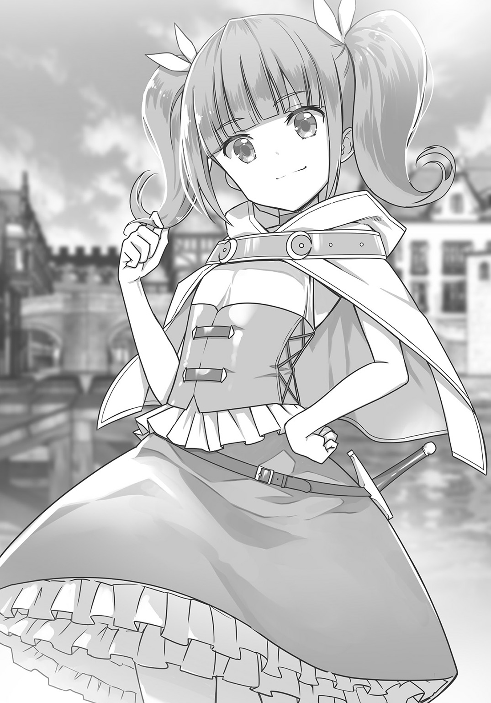
「......誰だよ？ クレインって」
「だ――」
クレインは絶句した。
「誰、だと!? ふざけるな、クレインだぞ。わらわの名前を知らない人間などこの世にいるのか。誰もがわらわの名前を聞くだけで恐れおののくのに！ どういうことだ。そなた、もう一度よく考えてみろ、クレインなのだぞ。わらわはクレイン・ゾルダ――」
「知らないものは知らない」
「う、ううううう......ううううあああ......」
少女の肩は、ぷるぷる震えだした。
そして同時に、大きな瞳に涙が溢れる。
「ああっ、は、半泣きになった」
「だ、だって、だって」
「泣くな、泣くなって。いい子だから。ね？ いい子だから、ほら――」
「わ、わらわはな、わらわは......うええええええええええん!!」
「うおおっ!?」
いよいよ号泣を始めるクレイン。直人は驚き、かつ困り果てたのだが、
「我が君、なにをされているのです？」
と、そこで再び声がした。聞き覚えのある声だった。
振り返ると、そこにセリカが立っていた。仕事が終わったのでやってきたらしい。直人は百万の援軍がやってきたような心持ちで「セリカ、いいところに来た！」と短く叫んだ。
「ん？ セリカ......？」
クレインは、セリカと聞いてすぐに涙を止めた。
「セリカ、この子をなんとかしてくれないかな。泣いてる女の子はどうも苦手で......」
と直人が言うと、セリカはクレインの顔をちらりと見て、すぐに顔を蒼白にした。
「クレイン姫！ た、たいへんご無沙汰しております！」
「うむ、苦しゅうない。神官セリカ、久しいのう」
「......はい？」
二人の会話に、直人はまったくついていけない。
「セリカ、どういうこと？ クレインと知り合いなの？」
「わ、我が君。こちらのお方は、クレイン・ゾルダック様です」
「......へ？」
「ゾルダック国の姫ですよ！」
セリカは焦りに焦った様子で、直人とクレインを見比べていた。
「ご存知なかったのですか!?」
「え、いや、だってまさか......え、ほんとに？」
「間違いございません。我が君がこの世界に来られる前......わたしがしばらく、エルトリアの君主代行を務めていた時期に、何度も姫様とお会いしました」
「ナオト。セリカの言うことは事実だ」
クレインは、人が変わったようにふふんと目を細めた。
「そなたがエルトリア国の王であることは気が付いていた。自分で名乗っていたからな」
「自分で？ 俺が？」
と、そこで直人は、クレインと出会う直前のことを思い出した。
――エルトリア国王新堂直人、か。......我ながら妙な肩書きだけど、ま、でも、そこそこうまくやってるよね。
（......確かに言っていた！）
クレインは、あのときの独り言をちゃんと聞いていたのである。
「だから案内せよと言ったのだ。ゾルダック国の姫の相手を務めるならば、この国の王でなければ身分が釣り合うまい？」
「う、うん。それはまあ......」
「もっとも、そなたが暇そうに見えたのも確かじゃがの」
「だから暇ではないって。......たぶん」
つい先ほどまで書斎に引きこもっていた事実が、ちらりと直人の脳裏をよぎった。
それにしても驚いた。大国ゾルダックの存在はもちろん知っていたが、まさかその国のお姫様が直々にエルトリアにやってくるとは。予想外の展開だった。
「だ、だけど、なんだってゾルダック国のお姫様がこんなところに？」
「ふふん。エルトリアが最近面白い発展を遂げていることは、ゾルダックでもうわさになっているからな。それで見物に来たのだ」
「光栄です、クレイン姫......」
セリカは頭を下げた。ゾルダックに対して、やや含むところがあるはずのセリカだが、それはそれとしてやはり外国の姫に対しては礼を尽くしている。
「ところでナオト、それにセリカ。そなたたちは、こんな裏路地でなにをやっているのだ？」
「それは......」
直人は少し迷ったが、別に隠すことでもないので、銭湯のことを話した。
するとクレインは、いかにも楽しげに瞳を明るくさせてきた。
「お湯を溜める施設か？ 意味の分からぬことをするのう。セリカはそれでよいのか？」
「クレイン姫。我が君のやることで、これまで誤りがあったことは一度もありませんでした。わたしは我が君に全幅の信頼を寄せております」
セリカの賞賛に直人は少し気恥ずかしくなったが、しかしやはり嬉しくもあった。
「とにかく、クレイン姫。ええと、神殿のほうへ来られますか？ 歓迎しますよ。我が国の名物、エルトリアラーメンもありますが」
と、直人は言ったがクレインは「やだ」と短い言葉で拒否した。
「神殿など面白くもない。それよりは、そのセントウとやらができるのを見たい」
「え......」
「どうせ非公式じゃ。よいから、セントウ作りを見せよ」
家来に対してものを言うかのようなクレイン。
しかし、屈託ない笑顔と共に言ってくるので、あまり不快感はなかった。
それよりも、姫様に万が一があったらまずい。外交問題になりかねない。
「セリカ、クレイン姫は俺が面倒を見ておくから、騎士団の事務所に行ってきてくれないか」
そのセリフだけで、セリカは直人の意図が読めたらしい。
「シャナンを呼んでくるのですね？」
「うん。クレインの護衛を務めてもらうから。あとカイルがいたら、あの子も呼んできてくれ。強いだろ、あの子」
「分かりました」
「ナオト、セリカ。どうした。早くセントウを作ろうぞ」
クレインはあくまでマイペースであった。
銭湯を作ろう！
直人が下見をしていたエルトリア市街の片隅には、誰も使っていない建物がある。屋内はなかなか広く、間口は十メートル程度だが、奥行きが四十メートルほどはあるだろう。
ぱっと見て、一度に十数人は軽く入れそうな上、放置されていたわりには小綺麗な場所だったので、直人はそこを銭湯にしようと思った。中を片付けて、湯船を置くのだ。
そんなわけで湯船を作るために、直人はロックと職人たちに向けて話をしている。
「まずは試作品の湯船を作って、テストをしてみよう。裏の川から管を使って水を引っ張ってくる。その水を沸かして湯船に入れる。排水は、また管を使って川の下流に流すんだ」
「王様、その湯船ってのは木で作るんですかい。お湯が漏れたりしませんか？」
「ベテランの親方らしくもない意見だね。家だって木製だけど雨風をしのぐし、木の船だって川に浮かぶんだから、それは問題なくできるさ」
「なるほど、その通りだ。こいつはうかつだった」
ロックは頭をかいてから、照れ笑いを浮かべた。
「湯船ってのは要するに巨大な樽なんですね」
と、別の職人が言った。巨大な樽とはよく言ったものだ。直人はうなずいて、
「その認識で構わないよ。とにかく木を使って、まずは湯船を一つ作ってほしい。すべてはそれからだ。その湯船がうまくできたらそれを量産し、本格的に銭湯作りに取りかかろう」
直人が言うと、ロックたちはいっせいに作業にとりかかった。
クレインは、その光景を興味深げに見ていたが、
「ナオト、そのセントウというのができたら、わらわにも試させてくれるのだろうな？」
直人は一瞬考えたが、お湯に入るくらい危険でもなんでもない。
「もちろんだよ、クレイン姫」
「そうか、楽しみじゃのう。なにしろ最近、エルトリアは変わったものを次々と生み出していると聞く。それがうわさほどのものかどうか、わらわが試してくれようぞ」
「はは......お手柔らかにね」
「ふふ、光栄に思うが良いぞ。ゾルダック王家のわらわが直々にテストするのだからな」
クレインはあくまで高飛車に笑っている。
姫様ってこういうもんかなぁ、と直人は内心苦笑いを浮かべていたが、そのときだ。
「王様！」
軽やかな声音と共にやってきたのは、トマだった。
「ここにいたんだ。――あれ、これは......また日本の文化でなにかするつもりなの？」
「うん。銭湯っていう日本の施設を、エルトリアに作るつもりだよ」
「なんだか面白そうだね。僕にもなにか、できる仕事はある？」
「トマの仕事？ うーん、そうだなあ」
と、直人が考え込んでいると、トマは仕事場を見学しているクレインをちらりと見つめてから、ひそひそと耳打ちしてきた。
「王様。あの女の子、誰？」
「ん？ ああ、あれはゾルダック国のクレイン姫だよ」
「ぶっ!?」
トマは仰天し、その場に尻もちをついた。その音に、直人はもちろんクレインさえも振り返る。......そういえば、トマはゾルダック人だった。驚くのは当然だ。
「どうした、そなた。気分でも悪いのか」
「はっ、いや、その、僕は、とんでもない......」
何気なく尋ねてきたクレインに対して、トマはしどろもどろになるだけだ。
無理もない。もともとゾルダックの下っ端商人だったトマからすれば、クレインはまさに雲上の存在だろう。
「のう、ナオト。わらわはお腹が減った。なにか食べるものはないかのう？」
「さっき神殿に行っていればラーメンがあったのに。......ねえ、トマ。なにか持ってない？」
「え？ あ......みたらし団子ならあるよ。この間、王様が日本から持ってきて、食堂の机の上に置いていたやつが。王様たちと食べようと思って持ってきたんだけど......」
そう言って、トマは腰の革袋からパックに入ったみたらし団子を取り出した。直人はそれを受け取ると、パックを開けてクレインに手渡す。
「これは......見たこともない食べ物だのう？」
「うん、みたらし団子っていうんだ。口に合うかどうか分からないけど、食べてみてよ」
「ふふん、わらわは王家の者ぞ。ちょっとやそっとの食べ物では満足せぬ......」
そう言いながら、クレインはみたらし団子を口に入れて――
「美味じゃっ!?」
「おおっ......」
どこかで見たようなリアクションを見せるクレイン。直人とトマは一瞬、身を引かせる。
「な、なんなのだ、これは......。小麦ではない、米......？ な、なんなのだ、この食感、この味付け......バカな......ゾルダック王家のわらわが......味わったこともない......」
クレインはぷるぷると震えて、しかし、次から次へと団子を食べて頰張っている。
やがて食べ終わると、
「むう......これがうわさに聞くエルトリアの名産品か......くっ......手ごわいものだ......」
「ああ、いや、これは俺がいた世界から持ってきたものだよ」
「ナオトがいた......世界......？」
「あ、そうか。クレイン姫は知らないんだっけ。俺は日本って国から来たんだけど、そこはこことは次元が違う世界で......」
「そうか、そういえばエルトリア神聖国は王位継承者が不在の場合、違う世界から人間を召喚するしきたりであったな。ナオトがそれか......」
クレインは一人で納得した。さすがに隣国の法のことは知っているらしい。
「次元が違う世界の食べ物か。しかし......悔しいが、うまいぞ、ナオト。そなたの育った国にはこれほどの食べ物があるのだな」
「お褒めに与り光栄だよ、クレイン姫」
「うむ。......ナオト、この食べ物はもっとないのか。持って帰りたい。金ならば出すぞ」
「うーん、みたらし団子はいまのところ、自分たちで食べる分くらいしか持ち込んでないんだよね......」
なにしろ和菓子は賞味期限がある。なんとか輸出品目にしたい一品ではあるのだが......。
「もったいない。これほどの菓子が食べられるならば、わらわは毎日だってゾルダックからエルトリアにやってくるのに」
「そこまで気に入ったんだ......」
直人は苦笑した。セリカといいクレインといい、この世界の人間は団子をやけに気に入る。
と、そこで直人はふと気が付いた。――団子があるなら、毎日だってエルトリアに来る？
「......そうか、なにも輸出なんてしなくてもいいんだ」
「どうしたの、王様」
トマが怪訝顔を作る。直人は彼に視線を送りながら、
「このみたらし団子を、エルトリア国内で販売すればいいんだ。そうすればお菓子好きの観光客を呼ぶことができるし、お菓子が売れたらお金儲けにもなる。うん、これはいけそうだ」
思いついてみれば、なんてことない発想だった。みたらし団子だけではない。かつてロックたちを説得するときに使った練り切りなども販売できるだろう。
（銭湯で饅頭を売ってもいいな。温泉饅頭とかもあるんだし......）
銭湯と和菓子を同時に売り出せば、エルトリアの名物になるかもしれない。やってみる価値はありそうだ。
「トマはどう思う？」
「僕はいいと思うな。前々から思っていたもの。和菓子を僕たちだけで楽しんでいるのはもったいないって。ただ――」
「ただ？」
「セリカさんが、自分の分のお菓子がなくなるって駄々をこねなきゃいいけどね」
「......ありえるね」
セリカは和菓子のことになると見境がなくなる。
わたしの分の和菓子がなくなるから反対です、などと言い出さなければいいが......。
「なんだ、みたらし団子を売り出すのか？」
と、そこでクレインが口を開いた。直人はうなずいて、
「そうしてみようと思う。......クレイン姫、ありがとう」
一直線にクレインを見据えながら礼を言った。
直人の真顔に照れたのか、クレインは少し顔を赤くしてから首をひねる。
「な、なにがだ？ わらわは礼を言われるようなことをなにかしたのか？」
「和菓子をエルトリアで売るって発想。クレイン姫の言葉がなかったら思いつかなかったよ。だから、ありがとう」
「............うむ、そ、そうか......」
クレインは頰を染めたまま、うつむいて小声を出した。
「......このように人から感謝されたのは......初めてだのう......」
「ん？ いま、なにか言った？」
「な、なんでもない！」
クレインは慌てて手を振った。直人は首をひねったが、やがて「そう......」とだけ答える。かたわらでトマが少し顔を引きつらせた。
「......なんだよ、トマ。変な顔をして」
「王様は、ゾルダック国の姫様を相手に、どうしてそう堂々としていられるのかと思ってさ」
「どうして、って言われてもなあ。クレインはいい子だよ？ さっき出会ったばかりだけどさ。そう緊張することもないでしょ」
「いや、いい子とか悪い子とかそういうのじゃなくて――」
と、そこでトマは「はあ」と大きくため息をついてから、やがて笑みを浮かべて、
「王様ってやっぱりすごいな。選ばれし者なんだって、いま改めて思ったよ」
「そうかな？」
「そうだよ。......セリカさんが好きになるわけだ」
「......ん？」
トマのそのセリフに、直人は片眉を上げることしかできなかった。
「トマ、いまのはどういう――」
「じゃ、僕はお風呂用に和菓子を用意するから」
トマはそんなことを言いながら、その場を立ち去ってしまった。
直人は何度かまばたきをしていたが、やがて「ま、いいか」とつぶやいて、再び銭湯の仕事にとりかかった。
お姫様の入浴
数時間後、湯船はできあがった。
湯船の大きさは八畳間に匹敵した。このサイズなら、数人の人間が一度に入浴できるだろう。さらにお湯を入れてもいっさい漏れなかったのは、ロックたちの技が見事だった証拠だ。
「親方、みんな、お疲れ様。......しばらくこれを試しに使ってみよう。それで問題がなかったら、もっと大きな湯船を作ろうと思う」
直人が言うと、職人たちはうなずいた。
直人はその湯船を、建物の中の一室に配置し、そして外のかまどで沸かしたお湯が流れてくるように管を繫げた。
さらに、建物の床には砂利を敷き詰め、排水溝も作った。
採光窓も作ったし、さらに湯船の横には鏡を二つ貼り付け、身体を洗う場所も作った。その上、夜でも入れるように、部屋の四隅にはランプまで取り付けたのだ。
浴場の隣には八畳ほどの脱衣所と、トイレや水飲み場も作った。
「よし、これで銭湯第一号は完成だ」
これこそ風呂だ。直人が待ち望んでいた日本風の浴場だ。
これだけ広い湯船の中なら足も伸ばせる。最高だ。文句なし！
（......だよね？）
と、直人が内心首をかしげたのは、なにかを忘れているような気がしたからだが――
（いや、でも、全部あるよね？ 採光窓から湿気も出せるし......）
やっぱり気のせいだ。
と、直人は結論を出した。なにも忘れてない。立派なお風呂だ。
「ナオト、ナオト。さっそく入ろう！ わらわは入るぞ！」
クレインが元気よく叫ぶ。直人は大きくうなずいて、
「じゃ、親方。悪いけど一番風呂は貰う。クレインと一緒に入浴するよ」
「そりゃもちろん。しかし王様、意外ですなぁ。まさか王様に、童女趣味がおありとは――」
「ち、違う。そんなんじゃないって！」
直人は慌てて手を振った。ロックは「冗談ですぜ」と笑って脱衣場を去っていった。
クレインが隣国の姫であることは彼も既に知っている。クレインをいま一人きりにするわけにはいかないから共に入浴するのだ。決してよこしまな心があるわけではない。
（当たり前だ、こんな子供相手にどうなるっていうんだ......）
直人はため息をつきながら服を脱ぐ。
......そういえばクレインって何歳だろう？ 十歳くらいだろうか？ トマよりも年下だと思うのだが......。
そのクレインは手早く服を脱いでいる。目を惹く白い肌の裸身と、ほっそりとした首筋から肩にかけての繊細なライン、わずかに張り出した少女らしいヒップ。曲線美に溢れたその肉体を恥じらいもなく見せつけながら、彼女は勢いよく浴室へ突入した。
「ち、ちょっと待った、クレイン。走ると危ないよ」
直人も慌てて服を脱ぐと、手ぬぐいを持って浴室に入る。
「ナオト、すごい。なんだかすごいぞ！」
浴室内にクレインの声が反響した。
室内は、既に白い湯気で満ち溢れていた。職人たちが沸かしてくれたお湯が、新品の湯船の中に満ち満ちている。クレインは目を輝かせて、湯船の縁に手をかけた。
「この中に入るのか？ 熱そうだな！」
「うん、そうだけど......ああ、いきなり中に入っちゃだめだよ。まず湯船からお湯をすくって身体にかけて、全身を洗うんだ。それがマナーだよ」
「洗う......？ 身体を？ 自分でか？ ふむ......」
クレインは、唇に人差し指を当てると、可愛らしく小首をかしげた。
「ナオト、わらわは自分で自分の身体を洗ったことなど一度もない。王宮ではいつも侍女がやってくれるからのう。ナオト、そなた、わらわの身体を洗え」
その言葉に、直人は思わず「ぶほっ!?」と咳き込んだ。
「じ、冗談じゃないよ。なんで俺が」
「まずは髪の毛からだ。頼んだぞ」
クレインはにこにこ顔だ。
彼女はツインテールの銀髪もほどいており、いまは銀色のストレートヘアだが、その銀髪が湯気でわずかに濡れており、白い肌に貼りついている。
直人はそんな彼女の髪と裸身をまじまじと見てから――
「......いい機会だ。自分で身体を洗いなさい」
教師のような口ぶりで告げた。
「なぜだ。わらわはクレイン・ゾルダック――」
「お姫様でもなんでもいいの。自分の身体は自分で洗うの。――エルトリアではそうなの！」
妙に大声で叫ぶ直人であった。顔が赤いのは湯気に中たったせいだろう。たぶん。
いくら子供だからって、女の子の身体をこの手で洗えるわけがない。
......というか、むしろ子供だからこそヤバい。
（この状況、日本だったら逮捕だな）
そんなことを考えながら、直人は自分の髪と身体をよく洗った。
満天の星の下で
身体を洗った二人は、湯船に入った。
肩まで浸かり足を伸ばすと、恐ろしく気持ちよかった。
「ん、はあぁぁ～......」
「ほ、ううぅぅ～......」
直人とクレインは二人して、変な声を出す。
「ナオト、気持ちいいのう......。全身がお湯の中に溶けていきそうじゃ......」
「でしょ......。気持ちいいでしょ......。これをみんなに味わってほしいのさ......」
適温のお湯に身体を横たえながら、リラックスする直人であった。
「でも、クレイン姫に風呂を喜んでもらえて嬉しいよ。この試作品は成功だ......」
ロックたちに頼んで、さらに湯船を作ってもらおう。
と、そんなことを考えていると、クレインが静かな声を出した。
「クレイン」
「......え？」
「わらわのことはクレインと呼べ。そう呼ぶことを許すぞ、ナオト」
「............いや、だけど呼び捨ては」
「良いのじゃ。わらわはクレインと呼ばれたい」
「............」
直人は少し迷ったが、やがて彼女の名を呼んだ。
「じゃあ、クレイン」
「なんじゃ、ナオト」
「......ふふ」
「......はは......」
直人はクレインと笑みを向け合った。......妹ができたようで、なんだか楽しい。
ふと顔を上げ、採光窓の隙間を見ると、既に空は暗くなっていた。
満天の星が見えている。ため息が出るような煌めきの夜だった。どこかで虫も鳴いている。風情とはまさにこのことだ。
「ナオト。正直、脱帽したぞ。あのみたらし団子といい、このセントウといい。エルトリアの文化は......いや、日本といったか？ ナオトの育った国の文化は素晴らしい」
「それは......どうもありがとう」
直人はちょっと笑って礼を言った。
「......素晴らしい文化だ。お湯に浸かるのがこれほど気持ちいいとは知らなかった」
「ふふ、こっちの世界の人にも風呂文化が受け入れられて嬉しいよ」
「なぜ日本ではこういう湯船文化が発達したのかのう？」
「そうだなあ、理由はいろいろあるみたいだけど......まず日本は水資源が豊富だから、気兼ねなくお湯をたっぷり使う文化が発展したんじゃないかと言われている。それと、日本には仏像っていう像があって、これは仏教という宗教の信仰対象であるホトケの姿を模した像のことなんだけど、この大切な仏像を、お湯で綺麗に洗う習慣が昔の日本にはあったんだ。それが湯船による入浴文化に繫がったという説もある......」
さらさらと直人は解説した。するとクレインは目を輝かせた。
「ナオト、詳しいのう！ そなたはまるで学者のようじゃ！」
「いや、本で読んだだけだよ」
と、照れたように直人が笑う。笑いながら、日本もかつては蒸し風呂がメインだった時代もあったようだから簡単に断言はできないな、と思ったりもした。
『枕草子』に風呂という呼称があることから、日本に昔から風呂文化があったことは間違いないのだが、それは蒸し風呂だったと言われている。
要するに、なぜ日本において湯船文化が発達したのか、定説は存在しないのだ。
だが、ひとつだけ確実に言えることがある。
広い湯船に浸かるのは、とにかく素晴らしいということだ！
直人はお湯を手ですくい、ぱしゃぱしゃと顔を洗いはじめた。
と、そのときである。
「我が君とクレイン姫は、どこにいるのかしら......」
「適当に観光してるんじゃない？」
「騎士団に捜索させている。心配するな。いまは存分に入浴しようではないか、神官殿」
脱衣所から、聞き覚えのある声がした。この声はまさか――
（セリカたち!?）
直人は顔を蒼白にした。
なぜ彼女たちがここに来るのか。しかも入ってくるつもりらしい。
待ってくれ、と言おうとしたが――遅かった。
ドアが開く。そしてセリカが入ってきて、
「あれ？ クレイン姫、どうしてここに――って」
「..................やあ、セリカ」
「............」
二人はばっちり、目が合った。
セリカは長い金髪をアップにして、一糸まとわぬ姿だった。極めて華奢な身体をしている。スレンダー美少女のお手本みたいな肉体は、瑞々しい肌に小ぶりなバスト、そしてすらりと長い脚。白い湯気越しに見ているせいか、扇情的かつ初々しい色気を匂わせていた。
「これがセントウなんだ、すごいね！ こんなの世界のどこにもないよっ！」
「親方殿が入ってみろと勧めるわけだな。......ん？」
さらに、カイルとシャナンも入ってきた。もちろんこちらも素っ裸。
カイルは、はっきりと分かる巨乳。ふっくらと盛り上がった胸部は、ミルクを溶かしたかのような真っ白さだ。そのくせ腰回りだけは妙に細いのが、彼女のスタイルの良さを際立たせていた。
最後にシャナン。細身なのは確かだが、よく見ると肉付きがかなり良い。特に太もものあたりはそれが顕著で、少女らしさの漂う脚に、程良くむっちりとした肉がついていた。日頃から騎士団の仕事のために、活発に動いているからだろうか。弾力のありそうな肢体であった。
そんな三人が、揃って浴室の入り口に佇んで。......三秒ほど間があって、
「き、きゃあっ!?」「え、え、え。えっと――」「な、なぜ国王がここにいるっ!!」
少女たちは、それぞれ両手で身体を隠しつつ三者三様の反応を見せた。
（なぜここに、はこっちのセリフだ......！）
だが先ほどのシャナンのセリフから察するに、彼女たちに入浴を勧めたのはロックだろう。銭湯ができたから入ってみろとでも言ったに違いない。
悪意があったわけではないだろう。しかしえらいことをしてくれた！
「お、俺、出ていくよ」
直人は湯船の中から立ち上がろうとして、しかしクレインに手首をつかまれた。
「ナオト、なぜ出ていく必要があるのだ？ そなたは王だ。堂々としておればよい」
「え？ いや、でも......」
「ゾルダックではわらわがお湯浴びをしている間、侍女が常に控えておるぞ。ナオトもセリカもそのようにしたらいいのだ。みんなで湯船に入ればよい」
「で、でもそれは女同士だからだろ!?」
直人は反論したが、しかしセリカは「......なるほど」とうなずいた。
「クレイン姫のおっしゃること、ごもっともです。そう、いまのわたしは我が君とクレイン姫をお守りし、お世話しなければならない身。ならば共に入浴するのは確かに道理......」
「ええ!?」
直人は目を白黒させたが、セリカは顔を赤らめつつも意を決したように告げた。
「我々も入浴しましょう。カイちゃんもシャナンも、いいわね？」
「え!? あ、うん......。セリちゃんが入るっていうなら、あたしも......」
「確かに、国王と姫が丸腰でお湯の中なら、護衛の必要がある......」
「そうだそうだ、みんな揃って入るがよい。気持ちいいぞ。のう、ナオト？」
クレインの無邪気な言葉に、セリカたちは恥じらいつつも湯船の中に入ってきて――
かくして銭湯は混浴になった。
ここは、天国なのか地獄なのか......？
湯気が立ち込める中、直人は湯船の中でただ無言。しかし視線は一点に定めずあちこちを見回していた。女性の裸を直視するのは、向こうが良くてもこっちが戸惑う......。
その女性陣。数分も経つと場慣れしたのか、
「本当に気持ちいいわね。肌もすべすべになりそう」
「いろんな国に行ったけど、お湯の中に浸かるなんて初めてだよ！」
「湯の中に、身体が溶けていきそうだぞ」
すっかりリラックスして感想を言い合っている。空気が湿っているせいか、三人の声はやけに艶っぽく聞こえた。
そんな三人をクレインはじっと見つめていたが、やがて可愛い唇を開く。
「カイルといったか。そなた、立派だのう」
「え？ なにが？」
「おっぱいじゃ。お湯に浮かんでおるぞ！」
「えっ!?」
クレインから放たれた予想外の攻撃に、カイルは身をのけぞらせた。
......すると確かに指摘の通り、お湯の中で濡れた巨乳がぶるんと動く。
「うーむ、やはり大きい。どうしたらそんなに育つのか......。のう、ナオトもそう思わないか？ どうだ？」
「ど、どうって......」
カイルのバストをチラリと見る。......すごい。その一言だった。
だが、
「まあ......普通、じゃないかな？」
目をそらしつつ無難な回答。しかしその答えに対して二人の少女は不満げに、
「それは違うぞ、国王。カイル殿のものが普通なわけがない」
「まったくです。わたしだって年齢相応には発育してるのに」
シャナンが口を尖らせ、セリカが同意する。直人は四つの眼で睨まれてしまった。
お湯の中なのに、汗が滲み出たのが分かった。
ああ、鳥になりたい。鳥になってあの採光窓から逃げ出したい......。
「け、ケンカはやめようよ。胸なんかどうでもいいじゃない。ね？」
「どうでもよくないの！ カイちゃんは勝者だからいいわね、余裕があって」
「まったくだ。......幸せなのは国王とカイル殿のみ、か」
「いや俺は......喜んでは......」
「ははは！ やはり全員で入浴して正解だったのう。わらわは愉快だ。楽しいぞ！」
クレインが朗らかな声をあげる。カイルは困ったような笑いを浮かべたまま。セリカとシャナンはジト目になって、やっぱりカイルのバストをチラチラ。
天国なのか地獄なのか。カオスな入浴になってしまった。
直人は浴室に入るとき、なにかを忘れているような気がしていたが、いま、はっきりと気が付いた。
（男湯と女湯、分けてなかった......）
銭湯は時間帯で男女に分けよう。直人は心からそう思った。
老執事ジルバの疑問
そんなわけで風呂上がりである。
銭湯の外で、直人たちは夜風に当たっていた。
「素敵なお風呂でした。我が君が湯船をおすすめされた理由が、よく分かりました」
湯上りで気持ちがいいのか、セリカは胸の一件など忘れたように上機嫌である。
「......それは良かったね」
にこにこ顔のセリカとは対照的に、直人は静かに口を開いた。なんだか鼻血が出そうなほど頭が熱い。お湯のせいなのか、他のなにかが原因なのかは分からないけど。
そんな直人に、クレインが話しかけてくる。
「しかし楽しかったぞ。ナオト、エルトリアは素晴らしいのう」
「......まあ、喜んでくれてよかったよ」
それについては本当にそう思った。
「今夜は遅いし神殿に泊まっていくといいよ。明日、俺とシャナンでゾルダックまで送るから。なあ、シャナン？」
「うむ、それが勇者の役目だからな......」
シャナンは腰の日本刀を鳴らしてほくそ笑んだ。
そのとき「王様！」と、ロックが息を切らしてやってきた。
「どうしたの、親方。――あ、そうだ。言いたいことがあるんだ。親方のせいで俺はとんでもないことに――」
「そ、それどころじゃありませんぜ！ 王様にゾルダックの使者が来ているんですが――」
「ゾルダックの!?」
直人とセリカが顔を見合わせる。クレインもまた、大きな瞳を丸くさせた。
と、慌てている時間もなく、その場に老人が現れた。
いかにも執事然とした身なりの人物を見て、クレインが「じいや！」と目を見開いた。
「ど、どうしてここにいるのだ!?」
「それはこちらのセリフです。姫様、探しましたぞ！ まったく、一人で勝手に外出されるなど......エルトリアへ向かう姫様の姿を、目撃していた者がいたからいいようなものの！」
「そこまで怒らなくても良いではないか。まったく、じいやは固いのう」
「怒りますとも。国王陛下に知られては大変なことになりましょう。......ところで姫様、そちらの者は――」
老人は、直人たちをどこかうろんげに見回す。クレインは、そこでニヤリと笑って、
「エルトリア神聖国の者たちだ。じいやは、神官セリカと会ったことはなかったかのう。それに冒険者カイルと騎士団長シャナン――そしてここにいるのがエルトリア王のナオトだ！」
「お、王!?」
執事は直人の顔を見て愕然とすると、慌てて片膝をついた。
「これは失礼しました。知らぬこととはいえご無礼を。ゾルダック国のジルバと申します」
「あ、いや、これは......どうも。エルトリア神聖国の王......直人です」
自己紹介した上で「もっと楽にしてください。そんなにかしこまらなくていいですから」と優しく告げる。するとジルバはわずかに頭を上げ、安堵したような表情を見せた。
だが、むしろほっとしたのは直人のほうだった。大国ゾルダックの姫をかどわかした、なんて言われたら大変なことになると思っていたのだ。
「だけどクレイン、よかったね。ゾルダックからお迎えが来て。......シャナンは出番がなくて残念だったろうけど」
「まったくだ。こいつの出番もなかった」
シャナンがにやりと笑い、刀の鞘をぽんぽんと叩く。
すると、その瞬間だ。――ジルバの顔色が変わった。
「......それは......」
「え？」
「まさか、ニホントウ......？」
――ッ!!
その言葉に、直人はもちろんセリカたちも驚きの表情を作った。
（いま、この人は日本刀って言ったのか......？）
しかしこの老執事は、シャナンの持っている武器が日本刀という名前なのは知らないはずだ。当然だ。日本刀は直人がこの世界に持ち込んだもので、その名称を知っているのはエルトリアの主要メンバーだけのはずだ......。
怪訝顔を作っていると、ジルバは真剣な面持ちで一歩前に出て申し出た。
「ナオト王、彼女の持っている武器......詳しく見せていただけませんかな？」
「武器。......これをか？」
シャナンが日本刀を掲げると、ジルバは妙に深刻な面持ちでうなずいた。
「じいや、どうしたというのだ？」
クレインが話しかける。しかしジルバは彼女の声さえもまったく無視した。
よく分からないけど......。
直人は大きくうなずいた。それで、シャナンは王の許可を得たと判断したのだろう。鞘から刀を引き抜いて、ジルバに手渡した。
ジルバは白刃を天高く掲げた。星の光で、煌めく刀。
「......ああ、やはり。これは間違いなくニホントウだ......だが、そんな......どうして......」
信じられないといった顔をするジルバに向かって、直人はゆっくりと声をかけた。
「ジルバさん。日本刀は、俺の国、日本の武器です。この世界には存在しない。それなのに、どうしてあなたは日本刀を知っているんですか？」
「なんですと......？」
ジルバはいよいよ目を見開き、直人を真剣な眼差しで見つめた。
そして、おごそかに言った。
「すると、ナオト王。あなたはまさか......」
老人の瞳は真剣だった。その迫力に、直人は思わず息を呑む――
第七話 とある日本人の伝説
ゾルダック王宮にて
「クレイン姫が、どうもエルトリア国王にご執心らしい」
というニュースが、ゾルダック王宮を駆け巡った。
王宮は騒然となった。ゾルダックとは比較にもならない小国の、しかも違う世界からやってきたという得体のしれない国王が、十四歳の姫をたぶらかしてしまったのだ。ゾルダック国の重臣たちは、一人残らずざわめいた。
エルトリアはけしからん、これは早急に手を打つべし、姫をよくも籠絡しおって、などなど。
中でも過激な者などは、騎士団をエルトリアに派遣すべし、大いに脅し、状況によっては一戦も辞さず、などと物騒なことを口にした。
しかし。――肝心のゾルダック国王が、その声を制止した。
ディアス・ゾルダック。二十歳。クレインの兄である。
堂々たる体軀に、水も滴るような紅顔の美青年だった。既に英明として名高いこの若き王は、王宮会議に重臣たちを集めると、ただ一言、妹付きの老執事から聞いた事実を告げた。
「エルトリアの王は、ニホントウを使うそうだ」
運命の扉
「ゾルダック国から、パーティーの招待状が届いたよ」
直人がそう言うと、食堂に集まった仲間たち――セリカ、カイル、シャナン、トマ、ロックらは一様に驚いた顔を見せる。
「我が君、それは......正式な招待状ですか？」
「間違いない。ディアス・ゾルダック......ゾルダック王の署名がある」
「しかし、不気味なこったなあ。うちの国の王様が、ゾルダックの王宮パーティーに招待される話なんざ、これっぽっちも聞いたことねえ」
と、ロックが感想を漏らすとシャナンもうなずき、
「騎士団にも情報が入っている。ゾルダック国はここ最近、エルトリアに対して警戒を強めていたという。確かにそうだ。市壁の修繕に騎士団の再結成、紙幣の発行による経済圏内からの脱出。おまけにクレイン姫が国王と仲良くなったのだ。これで外交に問題が出なければ噓だ」
「あたしゾルダックには何度も行ったことあるけどさ、あの国でエルトリアが話題になるなんて、めったにあることじゃないのになー」
カイルがやはり、怪訝声で言った。
「我が君、どうされるおつもりですか」
セリカに問われて、直人は少し考えたが、
「ここは行くべきだと思う。あのゾルダック国から正式に招待をされているんだ。理由もないのにこれを断ったら、それこそ失礼になって、ますます外交に支障が出るよ」
「大丈夫でしょうか。......我が君になにかあったらわたしは......」
「悩んでいても始まらないさ。ま、出向いていっていきなり殺されることはないだろう。......それにゾルダックに行けば、あのときの謎もきっと解けるさ」
クレインがエルトリアにやってきたとき、老執事ジルバは思わせぶりなことを口にした。
――すると、ナオト王。あなたはまさか......？
と、それだけ言ったかと思うと彼は突如、むっつりと押し黙り、それからクレインを連れて無言のまま、ゾルダック国へ帰国してしまったのだ。
彼は結局、なにを言わんとしていたのか。気にならないといえば噓になる。
「セリカ、大丈夫だよ。......きっと」
とにかく直人はそう判断し、ゾルダックに向かうことにした。
連れていくメンバーは、セリカ、カイル、トマ、そしてシャナンに、騎士団の中でも特に精鋭の十名であった。
（さて、どうなるか......）
直人は、この世界に来て初めて緊張した。ゾルダック国になにが待ち受けているのか。
これ以上なく、気を引き締めなければならない。
伝説の戦士
『麗しの大国』ゾルダックの王宮は、さすがに荘厳にして華麗であった。
大理石が敷き詰められた床と柱に、品性を損なわぬ程度に示されている金銀の装飾。これがただの見学ならば、直人はただ、感嘆の息を漏らすだけでもよかったのだが、今日この瞬間においてはそうはいかなかった。
なぜならば、直人たちが謁見の間に入った瞬間、ゾルダック国の重臣たちが、揃って直人に鋭い視線を向けてきたからだ。
「セリカ。......どうもこれは、パーティーに招待されたって雰囲気じゃないね」
「はい。......こんなに緊迫したゾルダック王宮は初めてです」
かたわらのセリカと小声で話し合う。カイル達も、後ろで緊張しているようだ。
そのとき、若い青年が奥から姿を現した。
「エルトリア国王。......よくぞおいでくだされた」
爽やかな顔をした、背の高い人物だった。ぱっと見たところ、直人と同世代と思われる男だが、その顔立ちの美しさは到底比較にならない。
端整な唇が、流麗に動く。
「お初にお目にかかる。私はディアス・ゾルダック。ゾルダック国の王です」
「あなたが......！」
直人は大きく目を見開いた。ディアスは小さくうなずいて、
「ナオト王。違う世界からやってきて、短期間でエルトリア神聖国の財政を立て直したという異界王のうわさは、私の耳にも入っていました。ぜひ一度、お会いしたいと思っていた......」
「それは......どうも」
芸のない言葉を返しながら、一歩だけ前へ出る。
するとディアス・ゾルダックは、声をやや低くして、
「クレインがお世話になったそうですね。お転婆な妹だが、まさか隣国にまで出かけるとは思わなかった」
「いや、どうも。最初はまさか姫様とも思わず、普通の女の子だと思っていまして」
「......なるほど。それが逆に良かったのかもしれない。出会ってさほどの時間もないのに、あの子はあなたに心を開いたようだから」
ディアスは少しだけ唇を歪めてそう言った。その態度は、直人に対して不満をもっているのか、怒っているのか、それとも別の感情を抱いているのか......。砂色の瞳を覗き込みながら、直人は思案を巡らせたが、若きゾルダック王の心の内を推察することは困難極まりなかった。
と、そこでディアスは、重臣たちを見回してから告げる。
「ところでエルトリア国王。なぜこの度、パーティーの招待状が送られてきたのか。あなたは奇異に思われたでしょう」
「それは......はあ、まあ......」
戸惑い気味に答えると、ディアスは瞳を細めて、
「実はこれには事情があります。......エルトリア国王。ジルバから聞きましたが、あなたの国ではニホントウを使っているとか......」
「え、ええ」
いよいよ話が本題に入った。
「よろしかったら、そのニホントウを見せていただけないでしょうか」
「それは......」
直人は、なぜディアスがそんなことを言うのか不思議に思い、それだけでなくやや警戒さえしたが、しかしなにもしなければ話が進まないので、要望を叶えることにした。
振り向くと、エルトリア騎士団の一人がやってきて、直人に刀をさっと手渡す。
「これです」
直人は、日本刀をディアスに手渡す。
「......鞘から抜いてみてよろしいか」
ディアスは再び要望を出してきた。ますます奇妙な流れである。ディアスが武器を手に持って、直人が丸腰であることに、やはり危機感を感じたのか、シャナンが一歩前へ出る。
しかし直人は目を配らせて、彼女の動きを制すると、
「どうぞ」
そう言って、ディアスの所望に応えたものだ。
「感謝する」
ディアスは穏やかにそう言うと、日本刀を鞘から引き抜く。
鈍く煌めく刀身。大和魂の象徴とさえ言われるその輝きが室内の壁を照らした瞬間、ゾルダックの重臣たちがざわつきだした。
「おお、やはり、これは」「うむ、ニホントウだ」「もはやまぎれもない......！」
一様に驚く彼らを眺めて、直人はいよいよ怪訝顔になる。
日本刀を見て、ゾルダックの重臣たちはなぜそんな反応を示すのか？
「......エルトリア王、ありがとう。こちらはお返しします」
ディアスはそう言うと、日本刀を鞘におさめて返却してきた。直人はそれを受け取った。
「ゾルダック王。これはどういうことですか？ 日本刀がどうかしたのですか？」
「ええ......。......エルトリア王、いろいろとご不審に思われたと思います。申し訳ない。だが、こちらも驚いているのです、ご容赦願いたい」
「だから、なにに驚いているのですか？」
「――少々お待ちを。誰か、例のものを持ってまいれ」
ディアスが指示を出すと、家臣らしき人物がうなずき、別室に向かって駆けていった。
それから一分と経たぬうちに、彼は『それ』を手に持って、駆け足で室内に戻ってくる。
そして『それ』をディアスに手渡す。
「ご覧ください、エルトリア王。これは我が国に、数百年も前から伝わる伝説の武器です」
そう言って。彼が直人に見せた『それ』は――
「............まさか!?」
直人はこの世界に召喚されて以来、一番驚いた。
「日本刀......！」
鞘を見る限り、『それ』は間違いなく、日本刀だった。
ディアスは無言で刀を引き抜く。するとその刀身も、やはり紛れもなく日本刀であった。
「これは......日本の刀だ！ どうしてゾルダックに......!?」
興奮のあまり、直人は叫んでいた。
ディアスは抜き身の刀身を眺めながら語り出す。
「いまからおおよそ四百年前。ゾルダック国に、恐ろしく強い蛮族が攻めてきたのです。ゾルダック国の騎士団は連戦連敗、ついに王宮にまで族どもは迫り、いよいよゾルダック最後の日が来たかと、当時の人々は覚悟しました。......しかし」
「しかし？」
「そこへ戦士が現れた。変わった風体をした男だったそうです。頭の前髪を剃りあげて、残った髪の毛を一つに束ね――明らかにこの国の人間ではない風俗だったその人物、しかし戦いはめっぽう強かった。王宮に迫る蛮族どもを一人で蹴散らし、ゾルダックに残った兵士数十人をまとめあげ、敵に強烈な反撃を加えた。蛮族は次々と倒され、最後は滅ぼされたそうです」
「............」
「その戦士の強さ。その戦士の采配。まさに鬼神の如くであったと伝わります。そして、その男が使っていた武器が、このニホントウだったのです」
「そういうことか......」
直人は改めて、ディアスが持っている日本刀をしげしげと眺めた。
四百年前の刀ならば、かなりの年代もののはずだが、それでも見た目が美しいのは、ゾルダック国がずっと手入れをしているのだろう。
「妹の執事ジルバ、あれも若いころは我が国の重臣だった男ですが......彼から、エルトリアの騎士がニホントウを持っていると聞いたとき、これはと思いました。伝説の戦士と同じ世界の人が再び、この世界に来訪されたのだと思った。そしていま、貴国の武器を拝見したとき、それは完全な確信に変わった。間違いなく、あなたの武器と我が国の武器は同じ剣だった」
「............」
「エルトリア王、あなたは違う世界から来たと聞く。あなたは......あなたの生まれた世界は、我が国をかつて救った戦士――救い主様の世界なのですね......」
「......救い主......伝説の戦士......」
直人は考える。髪の毛を一つに束ねていたとは、おそらく髷のことだろうし、なによりもこの日本刀。これが動かぬ証拠である。
「恐らくそうです。かつてゾルダックを救った戦士は、日本のサムライだ。間違いない」
「サムライ？」
「日本の言葉で、戦士という意味です」
直人は言った。信じられない。直人よりも先になんらかの理由で、日本人がこの世界にやってきていたのだ。それも四百年も前のこと！ 日本でいえば、戦国時代の終わりごろから、ちょうど江戸時代に突入したころになるだろう。
それで菜の花――正式名称アブラナの件も合点がいった。想像でしかないが、恐らくそのサムライが、故意か偶然かは分からないが、こちらの世界に菜の花をもたらしたのだ。
カイルが持ってきたアブラナは、日本古来より伝わる在来種のアブラナだとホームセンターの人は言っていた。ならば戦国時代のサムライが菜の花を伝来させてもおかしくはない。
ディアスはさらに話を続ける。
「その戦士――サムライは、ほとんど名前も伝わっていない。ほとんどというのは、史料や伝承によって名前すら異なっているからです。しかしゾルダックを救った伝説は、事実だと考えられています。このニホントウも間違いなく、彼が残したものなのです」
「名前も残っていない？ じゃあそのサムライが、この国を救ったその後は――」
「分からない。旅に出たと伝わっていますが、どこかで天寿を迎えたのか。それともあなたの世界に帰ったのか」
語りながら、ディアスは持っていた日本刀を、ひとまず鞘にカチリと納めた。
「ゾルダックを救った奇妙な戦士の伝説は、やがて民の間では変容し、勇者と魔王の話になった。どこからともなく現れた勇者が、魔王を退治したというおとぎ話に......」
「ゆ、勇者が!? 勇者様が、国王のいた世界から来た戦士だったというのか!?」
反応したのはシャナンだった。叫んでから彼女は、さすがに場をわきまえなかったと反省したのか、さっと口を手で塞ぐ。
しかし直人もディアスも、彼女を咎めることはなく、場は沈黙に包まれた。
だが、直人もシャナンと同様に、内心ではひどく驚いていた。
（シャナンが言っていた勇者の話。あれはサムライの話が変化したものだったのか......！）
「......そう、サムライの話は、民間ではかなり変貌した伝承になってしまった。だが王室には正しい話が伝わっている。ごく限られた家柄の成人にのみ知らされる伝説ですがね......」
ディアスは澄み切った声で続けた。
「異国の戦士が、ニホントウを使って蛮族を退けたその伝説。ゾルダック王家はいまになっても、かつて我が国を救った戦士――あなたの言う、サムライのことを忘れていない。あなたが伝説の救い主様の世界のお方と分かった以上――我々は感謝しなければならない......！」
そう言うと――ディアスは腰を曲げ、直人に大きく頭を下げた。
「サムライの生まれた国から、よくぞ再びこの世界に来られた。......救い主様！」
「「「ようこそ、ゾルダックへ！」」」
ディアスと家臣たちが、揃って頭を下げてくる。
突然の事態に、直人は一瞬虚を衝かれて自失した。
そして困惑した――戸惑ったのは背後にいるセリカたちも同じようだったが。
なぜジルバが、そしてディアスが意味深な発言を繰り返していたのかようやく分かった。ゾルダック側にとっては仰天せざるをえない事実だろう。小国エルトリアに召喚された異世界の王者が、実はかつてゾルダックを救った戦士――救い主と繫がりのある人間だったとは！
数秒の後、ようやく自分を取り戻した直人は、頭を下げるディアス達を見回しながら手を振った。
「ちょっと、やめてください、ゾルダック王！ 俺はその伝説のサムライじゃないし、その子孫でもないんです。頭を下げられるいわれはありません」
「おお、なんと謙虚な......！」
「やはり伝説の戦士の国のお方......」
重臣たちは、直人のことをさらに賞賛する。
直人は心の底から困り果て、
「ゾルダック王、はっきり言います。自分は救い主様ではなく、エルトリア国王の新堂直人です。――だけど、この世界に昔、俺が生まれた国のサムライがやってきていたこと、これはきっとなにかの縁だと思います。......それならば、救い主とかそういうのではなく」
直人はそこで、明るい顔を見せてから、右手をゆっくりと差し出した。
不思議なもので、こちらの世界においても、握手は友好のしるしなのだ。人間の考えることというのは、世界が違っても似たようなものかもしれないと、直人は考えたことがある。
「よかったら、これから友達になりましょう。エルトリアとゾルダック、友好関係を築きませんか。そう、つまり――同盟を」
「同盟......救い主様が、我が国と対等の関係を築きたいと......」
「ですから、俺は新堂直人です。直人、と名前で呼んでもらって構いませんよ」
「それは......」
ディアスは一瞬だけ驚いた表情を見せたが、やがて照れたようにはにかんだ。その笑みは、王者としてではない、彼本来の素顔のように直人には思えた。事実、ディアスは初めて緊張を解いたように微笑し、納得したように口を開いた。
「ならば、ナオト。私――いいや、ぼくのことは、ディアスと呼んでくれ」
ディアスはそう言って、直人の右手をぎゅっと握ったものだ。
「同盟だ」
二人の男は、強く握手を交わした。
その瞬間、ゾルダックの重臣たちが、いっせいに拍手をし始めた。
セリカやカイルたち、エルトリアの仲間たちも拍手をした。
この瞬間、ゾルダック国とエルトリア神聖国の二国間は、友好の関係を築いた上で、同盟国となったのだ。
万雷の拍手が降りしきる中、直人は内心驚いていた。ゾルダックがこの世界有数の大国なのは知っている。その国が、エルトリアと同格の同盟とは......！
セリカに召喚されてからこれまでの間、一つ一つ成し遂げたことが、脳裏をゆっくりとよぎっていく。
直人はいま、目に見えぬ巨大な何者かに、確かに認められたような気がした。
王宮パーティー
数時間後、王宮の広間にて、エルトリアの一行を歓迎するパーティーが、まさに開かれようとしていた。
直人はゾルダック国が用意してくれた礼服に身を包んでから、エルトリア騎士団の男性たちと共になって、会場の片隅の椅子に腰かけ、パーティーの始まりを待っている。
「ナオト、ナオトッ！」
そのとき遠くから、クレインが笑顔で駆け寄ってきた。
明るく可愛らしい青のドレスを着用して、子供に似合わぬ薄い化粧までしているではないか。
「すごいおめかしだな、クレイン」
「ふふん。ナオトを惚れさせるために、一流のメイクに頼んだからな」
「子供が化粧なんてするもんじゃないぞ？ まだ早いぜ」
「ナオト、おじさんみたいだ。それに、前から誤解しているようだからはっきり言うぞ」
「なにを？」
「わらわは十四歳だ！ もう子供ではないっ」
「じ......！」
直人は思わず絶句した。目の前にいる女の子は、どう見たって十歳程度。......本人に言うと傷付くだろうが、精一杯のおしゃれをして、それでもやっぱり十歳にしか見えないのに。
となると、自分は十四歳の女の子とお風呂に入ったことになるのか。
そう思い、クレインのドレス姿をじろじろと見る。
......十四歳と知ると、ちょっとだけ見る目が変わってくる。言われてみれば、子供ではなく、女の子っぽいところがないわけでも――いや、やっぱりないか？ いやいや、あるようなないような――
そのときである。背後から、
「あっ......ナ、ナオト......」
なんだか聞き覚えのある声がした。
女の子の声だ。はてなと思って振り返ると――
「........................誰？」
本当に、見知らぬ美少女が立っていた。
長いストレートヘアを、バレッタにまとめた背の高い少女。一分の瑕疵もなく整った顔は、まるで白磁を見ている気分だ。シンプルながらも美麗極まる、真っ白なドレスを着た彼女は、しかし着衣の上からも、豊満な胸囲が見て取れる。
要するに、思わず二度見してしまうほどの美人が、直人に声をかけてきたのだ。しかも彼女は直人を知っているらしい。......しかしこちらに覚えはない。こんな美少女と面識があったら、いくらなんでも忘れたりはしな――
「......んん!?」
直人はそこで、ようやっと目を見開いた。そうだ、見覚えがあるなんてものじゃない。いつも話していたじゃないか。そう彼女は――
「......カイル!?」
「あはは......なんだか恥ずかしいなあ。こんな格好......」
カイルはかつて見たことがないほど、顔を真っ赤に染めている。困ったような笑い方が、いっそう魅力的だった。
それにしたって驚いた。確かにカイルは美少女だったし、スタイルも抜群だったけど、ドレスと小道具で着飾ると、女はこれほど変わるものか。
「..................」
直人はしばし、呆然としていた。その視線にカイルは気が付き、
「ナ、ナオト。そんなに見ないでよ。......恥ずかしいから」
「ご、ごめん。いやでも、カイルがその、つまり」
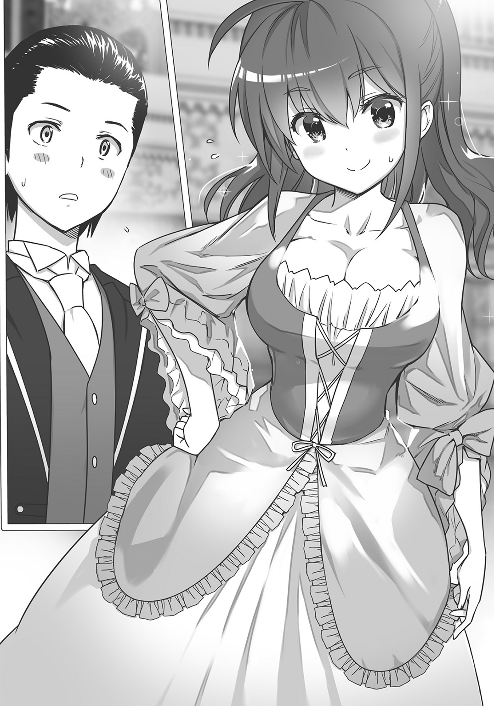
「なにがつまりなのよー！ もう、なんなんだよー、その反応はー！ ナオト、変だよー！」
カイルはようやく、少しだけいつもの声音に戻って騒ぐ。
「ナオト！」
そこでクレインが嚙みついてきた。
「他の女にデレデレしてっ！ わらわが側にいることを、ナオトは忘れていただろう！」
「い、いや、デレデレはしてないよ。デレデレは――」
「していましたよ、我が君」
「していたな、国王」
またも背後から聞こえる声。アンド、聞き覚えのある声。その声音と呼び方で一発で分かる。次は絶対に自失しない。
「セリカ、シャナン。よかった、助けてくれ......って」
振り返るとシャナンはタキシード姿で、まさしく男装の麗人みたいな服装をしていた。なんともらしいと言うべきか、彼女なりにおしゃれをしているのだろうけど......。
少しだけ、シャナンがドレスを着ている姿を、見てみたかった直人であった。
いっぽうセリカはいつもの服だった。薄化粧さえしておらず、アクセサリーもつけていない。
「着替えなかったんだ、セリカ」
「我が君。同盟国になったとはいえ、ここはいちおう外国ですから、万が一は常に考えておくべきです。我が君のお命を狙う不逞の輩が、いないとも限らないのです。有事に備えて、わたしは動きやすい普段の服装でいるのです」
「国王の護衛は私がすると、神官殿には言ったのだが......これだからな」
シャナンは小さく肩をすくめた。
「セリちゃんも着たらいいのに。王宮が用意したドレスなんて、めったに着られないんだから。これも冒険だと思って、あたしだって着たんだよ？」
あっけらかんとしたカイルの言葉だったが、直人も同意し、
「王宮のパーティーに普通の格好でいたら、向こうにも失礼にならないかな？」
「む......。で、でも......わたしはいいのです。我が君のように国王でもないし、シャナンのように騎士団長でもありません。ただの神官ですから、あちらも気にしたりしないでしょう」
「ふーん......」
直人は腕組みをしてからうなった。こういう流れになると、セリカはけっこう頑固だ。
「まあ、いいけどさ。――でも、もったいないな。セリカ、せっかく美人なのに」
「なっ。な、な、な、な、な」
セリカは明らかに混乱し始めた。顔面はもちろん指先から、スカートの下に伸びている、白い太ももやふくらはぎまで、露出している素肌の部分、すべての場所が真っ赤になった......。
「わっ、わたしは着ませんよ!? ドレスなんて、そんな――」
と、セリカが叫んだそのときであった。
会場に音楽が鳴り始めた。パーティーが始まる合図である。
直人はそれから檀上に向かった。このパーティーは、エルトリア神聖国の歓迎パーティーなのである。直人はディアスと共に並んで、乾杯の音頭を取ることとなった。
「エルトリアとゾルダックの永遠なる友情を願って――乾杯っ！」
パーティーはいよいよ始まった。豪華な酒や、料理が次々と運ばれてくる。
直人は、さてどうしたものかとあたりを見回す。
するとそこへ、クレインが声をかけてきた。
「ナオト、ダンスだ。わらわと踊ろう」
「だ、ダンス!?」
見ると広間の中央で、確かにダンスが始まっている。着飾った紳士や淑女たちが、華麗なステップを踏んでいる。直人にはとてもまねできない。
「いや、しかし俺は......ダンスはその......」
「踊れないのか？」
こちらの心中を見透かしたような、クレインのセリフ。
「いいんだぞ、踊れなくても。わらわがエスコートしてあげよう。さあ、一緒に踊ろう！」
「あっ、いや、だけど、その――」
直人が戸惑っていると、そこにディアスがやってきた。
「クレイン。僕と踊ってくれないか」
「お兄様、いつから妹好きになったのじゃ？」
クレインはじっと兄を見つめる。邪魔するな、と言いたげだ。
「お兄様は、他の女性と踊ればいいではないか」
「そうしたいところだが、王となるとそうはいかない。最初に踊った女性とは、よからぬうわさがたつからな。そうすると政治に影響が出る。だからこういうときはまず、身内の女性と踊るのが一番なのさ」
「むー......」
「ナオト、クレインを借りて構わないかな？」
「そりゃ、もちろん。どうぞ、どうぞ」
「ナオトォ～......」
クレインは困り顔を見せつつも、仕方なく兄とダンスを始めた。仮にも王族の一員だ。兄の言い分も分かったのだろう。
一息ついて会場を眺める。
会場の片隅では、タキシードで着飾ったトマが、腹の突き出た男たちにぺこぺこされて恐縮していた。姿を見ないと思ったら......。
やがてトマは男たちと別れ、直人の側にやってきた。困ったような笑みを浮かべている。
「さっきの人、商人ギルド時代の上司だよ......」
「上司!?」
「うん。エルトリアとゾルダックが同盟したから、なんだか変なことになっちゃって......」
さもあろう。いまやトマはエルトリアで一番の商人だ。ゾルダックの商人ギルドの長としても、同盟国の商人は、もはや無下にはできない存在だろう。
「トマ、ちょっと気分が良かったりする？」
ちょっとふざけた調子で言うと、トマはやっぱり笑みを浮かべた。
「出世の嬉しさより、いまは戸惑いのほうが大きいよ」
「俺もそうだよ。......ずっと戸惑ってる」
二人は、お互いに肩をすくめた。
それからトマはまた別の場所に移り、直人は一人になる。
とりあえずなにか食べようかな。そう思って、一歩を踏み出したそのとき、
「な、ナオト！」
振り向くとカイルが立っていた。
やはりドレスが似合っている。眩いほどの美少女ぶりだ。
「あ、カイル。どうしたの？」
「あ、あのね、あのね！ ......あたしと、踊らない？」
「......カイルと？」
「............嫌？」
上目遣いになるカイル。その可愛らしさに思わず心臓が高鳴った。しかし今日のカイルはなんだか妙にしおらしい。直人はいっそうドギマギする。
「嫌なんて、そんなことはないけど、でも俺、踊れないよ？」
「あたしだってそうだよー。ダンスなんて、したことないもん」
「じ、じゃあ、なんで......」
「なんでって......それはやっぱりこういう場所だし、少しくらい踊ってみたいし。それに他の男の人、全然知らない人だから......ダンスなんて頼みにくいし......」
そのセリフは、理由というよりなんだか言い訳に近い感じではあった。
だがそれでもカイルは、そんなことを言いながら、直人の両目をじっと見つめる。
「わ、分かったよ。俺も少しは踊らなきゃ変かなって思ってたし。......踊ろう、カイル」
「......う、うんっ！ 良かったぁ！ えへへ。よしっ、なんでも、チャレンジチャレンジ！」
冒険者らしいセリフを口にしながら、カイルはまさに喜色満面、白い歯を見せてにっこりと笑った。その爛漫な笑みは、反則的に可愛かった。
直人とカイルはダンスを始める。おそろしくぎこちない二人のダンス。やはり踊りなどガラではなかった。直人よ、直人よ、なぜ踊る――と、みずからに問いかけながら、それでも直人は必死にステップを踏んでゆく。
そのときだ。ささやくような声が聞こえた。
「ナオト」
「ん？」
「......ありがと。ナオトは優しいね」
照れ笑いを浮かべるカイルの顔が、目の前にある。
直人は、薄い笑みを浮かべてうなずいた。......それしかできなかった。
――会場の片隅、柱の陰で、セリカが直人とカイルの様子を、少し寂しげにじっと見つめていた。しかしもちろん直人は、その視線に気が付かなかった。
君がいればこそ
パーティーはなお続く。
少しくたびれた直人は会場を出て、控室のほうへとこっそり戻った。......元来、社交が苦手な直人であった。
控室の前にはメイドさんが佇立している。エルトリアのために、わざわざゾルダックが手配してくれた女性だ。直人がわずかに手を挙げると、メイドさんはぺこりと頭を下げた。
そして彼女が、控室の扉を開けてくれた。
直人はそのまま入室し――その瞬間、ほとんど金縛り状態になった。
なぜなら室内には、セリカが立っていたからだ。
しかも、ドレス姿の。
「「..................」」
二人は無言で見つめ合う。
華奢な肢体を柔らかく包む、薄手のロングドレスである。淡い色使いのその服は、完璧なまでに彼女に似合っていた。思わず見惚れてしまったほどだ。
「えっ、あ、いっ、いや、これは、その......！」
彼女は慌てふためいて、顔を真紅に染めながら、ぶんぶんぶんと両手を動かす。
「ちっ、違いますよ、我が君！ その、美人だと言われたから、ドレスを借りてみたとかではなく！ カイちゃんが羨ましかったからとか、そういうのでもなく！ わたしは、その――」
「あ、いや......」
「......ぁぅ」
セリカはがっくりうなだれてしまった。
直人も恥ずかしくなって、なにやらそっぽを向きながら、それでも言葉を優しく紡いだ。
「別に悪いことしてるわけじゃないんだし、いいじゃない、別に。それに」
「......それに？」
「セリカが美人なのも本当のことだし」
「....................................」
セリカはむっつりと押し黙ってしまった。
直人は照れ隠しに、さらに顔を横へそむけて窓外を眺める。
月が明るく輝いていた。深い森林が見えている。真円の光に照らされて、わずかに輝く木々のざわめき。はるか彼方の空の下には、高く連なる山々が見えた。
「あ、あの、我が君っ」
「うん？」
「......その。......わたし、エルトリアからラーメンを持ってきているのですが」
言いながらセリカは、部屋の片隅にある革袋を探り、そして中からどんぶりと箸、そしてエルトリアラーメンをそれぞれ二つ取り出した。
「よかったら食べませんか？ わたし、どうもパーティーの食事はお腹に溜まらなくて......」
「あ、いいね、それ」
直人はにこやかに賛成した。パーティーの豪華な食事も良かったが、いつも食べているラーメンのほうが、実のところ、はるかに直人の食欲をそそるのだ。
「じゃあ、いただこうかな」
「はいっ。ええと、それではお湯を用意して参りますので――」
「それなら、控室の外にメイドさんがいたからちょっと頼んでくるよ」
「我が君！ それはわたしが――」
「いいよ、これくらい。俺がやるよ」
直人はいったん部屋を出て、外にいたメイドさんにお湯を用意してくれるように頼んだ。
すると、メイドさんはすぐにキッチンに赴き、ガラス瓶いっぱいのお湯を持ってきてくれた。直人はそれを受け取って室内に戻り、エルトリアラーメンを作り始める。
どんぶりにお湯を注ぐ。あとは三分待つだけだ。
「......ラーメンもそうですが、我が君が伝えてくださった数々の日本文化のおかげで、エルトリアは助かったんですよね」
「ん？ ......うん、まあ......そうなるかな？」
「そうですよ。エルトリアは我が君がいなければ破綻していました。わたし一人ではどうにもならなかったのですから」
「そうか、俺が召喚されたときは、セリカ一人しか神殿にいなかったんだよね。それを思えば、神殿も賑やかになったもんだよ」
「まったくです」
セリカはゆったりと微笑んだ。
「あのときは、本当に誰もいませんでしたから。農民の娘で、新米神官のわたし一人」
「セリカって、農民だったんだ」
そういえばセリカの出自や過去を、自分はなにも知らないなと直人は思った。
「それがどうして神官になったの？」
「............」
「あ、いや、言いたくなかったら別にいいんだけど」
「いえ。......そんなに大した話ではないですよ」
セリカはちょっと遠い目をして語り出す。
「五年前、両親が亡くなったんです」
「............」
「流行り病が原因でした。それからわたしは、親方さんやカイちゃんのご両親に――エルトリアのみんなに育ててもらったんです」
そう言って目を細めたセリカの表情は、愛念に満ちていた。
「泣くことも笑うことも、故郷に教えてもらいました。本当に嬉しかった。だから、わたしは思ったんです。大人になったら、絶対にみんなに恩返しをするんだって」
「そっか。それで神官になって――」
「はい。前国王が崩御されたあと、エルトリアがどんどん混乱していく中......。いまこそわたしが頑張るときだと、そう思って。......それで神聖国のしきたりにのっとり、君主を召喚しようと思ったのです」
「............」
「......やってよかった。あなたのような素晴らしい君主に、巡り逢えましたから」
そう言ったセリカの端整な横顔は、月明かりを浴びて確かに美しかった。
その面立ちを眺めながら、直人は目を伏せつつ苦笑いを浮かべる。
「買いかぶりだよ。俺はそんなにすごい人間じゃない。ただの読書好きで......」
明日をも知れないニートだったんだ、と心の中でつぶやく。
だが、セリカは小さくかぶりを振った。
「いいえ、あなたは紛れもなく名君です。現実にエルトリア神聖国を立て直してくれました」
「............」
「それに日本へ戻る機会は何度もあったのに、いつもちゃんと帰ってきてくれた。我が君が戻ってくるたびに、『ただいま』って言ってくれるのが、わたしは本当に嬉しくて......」
セリカの眼には、うっすらと涙が浮かんでいた。
言葉には、ますます熱がこもっている。
「あなたは、あなたが思っているよりもずっと、賞賛されるべきお方なのですよ。だから、みんなもここまでついてきたのです。それに......わたしだって、いまはもう、神に選ばれしお方だからではなく――」
セリカは、一瞬だけ間を置いて、しかし一直線に直人の目を見て確かに告げた。
「あなたがナオト様だから、お側にいたいと思っているのです」
（............）
直人は思わず息を呑んだ。
脳天に、奔流のような熱を感じた。そして夢の世界にいるような心持ちになった。
ふわふわと落ち着かない心。だけど確かに楽しく暖かな空気。
「......ありがとう」
直人は、そう言うのがやっとだった。
セリカはわずかに、本当にごく小さくだがうなずいた。
それだけで充分だった。気持ちはしっかりと伝わった。
顔が、胸が、心が。......たまらなく熱かった。
「ラーメン、そろそろできるね」
ごまかすようにつぶやく。
もっともそれは噓ではない。どんぶりにお湯を注いで、間もなく三分が経つころなのだ。直人とセリカは、ラーメンどんぶりのふたを外した。
白い湯気と、匂いがあたりにふわりと広がる。
二人は揃って「いただきます」と告げてから、ラーメンを勢いよくすすり始めた。
（うまい......）
そのとき直人は、かつてセリカが作ってくれた、塩味パスタを思い出した。
実家を出てから初めて食べた、誰かの手料理。あのとき感じた温もりは、いまも胸に残っている。
「ナオト王、セリカ殿、いらっしゃいますか」
そのとき、ドアの外から声が聞こえた。先ほどお湯を頼んだメイドさんの声だった。
「ディアス王がお二人を探しておられるそうです。会場にお戻りくださいませ」
「あ、いけない。もうそんなに時間が経ちましたか」
セリカはあたふたと慌てて、どんぶりをサイドテーブルの上に置くと、それからドレスに手をかけて「この服、どうしましょう」と戸惑ったように言った。
直人は、にっこりと笑って言った。
「着ていけばいいと思うよ。きっとみんなも喜ぶさ」
「え、でも。......」
「ね、セリカ。一緒に行こうよ」
優しく告げると、セリカは少し顔を赤くしていたが、やがて、
「......はいっ、我が君」
笑顔と共にそう答えてから、部屋の出入り口へと向かい始めた。
着飾ったセリカの後ろ姿。その背中を見ながら、
「あの子の悲しむ姿だけは、見たくないな......」
そのとき直人はふいのことだが、無意識のうちに、そんなことをつぶやいていた。
言ってから、直人ははっと唇に手を当てた。
「どうされましたか、我が君？」
セリカが身を翻して問うてきた。直人はちょっと笑って、
「いや、なんでも」
そう答えてから、セリカの前に佇立して告げた。
「行こう。みんなが待っている」
二人は並んで、社交の場へと歩みを進める。
やがてパーティー会場が見えてきた。直人とセリカの向かう先に、まばゆい光が見えている。そこにはカイルがいて、シャナンがいて、トマがいて、クレインがいて、ディアスがいる。
自分を必要としてくれる世界が、確かにそこに存在した。
――ま、これからもぼちぼち頑張るか。
仲間たちの場所へと向かう、新堂直人の両の眼は、柔らかな熱を帯びていた。
（了）
あ と が き
それは昨年の春のこと。
自分と、担当のＹさん、そして前作『隠岐島千景の大いなる野望』のイラストを担当してくださった一葉モカさんの三人でお会いしていたときの話です。
三人でライトノベルについてあれこれ語って盛り上がっていたのですが、そのとき、
「最近、異世界ものって流行りですよね」
という話題が誰からともなく出てきました。
それからまた、異世界系ライトノベルについておしゃべりしたのですが、やがてその話題が終わりかけたとき、私は確かに言いました。
「まあ須崎正太郎が異世界ものを書くことは、たぶんないと思いますよ」
三人揃って、わっはっは。
わっはっは。
ははははは。
ははははは――
誠に申し訳ございません！（過去の三人へ向けた土下座）
やらない、と一度言っておきながらあっさりと前言撤回。今回異世界ものに挑戦させていただきました！
というわけでこんにちは。かようにいいかげんな作者の須崎正太郎です！ 初めましてまたはお久しぶりでございます。このたびは本書をお買い上げいただきまして、誠にありがとうございます。
さて『異世界君主生活』、いかがだったでしょうか？
前作では金融、銀行という題材を扱ったわけですが、次回作はなにをしようかと、担当のＹさんとああでもないこうでもないと話し合った結果、
「須崎正太郎には、なんらかの知識を活かすような作品がいいんじゃないか」
という結論に至りました。
そういうわけで、二作目は知識を活かして異世界の国家を発展させる、いわゆる異世界内政ものになったというわけです。
そして取り組むからには全力投球！
書いている自分が楽しく、読んでいる読者の皆様が面白い。そういう作品になるように全身全霊で取り組みました。今作はいかがだったでしょうか。喜んでいただけたのなら、とても嬉しいのですが。
しかし今回は、前作と異なってネタがたくさん。
政治、経済、金融、観光、文化、バトル、商売、歴史......。
あれもやろう、これもやらねばでさまざまな分野のことを執筆しました。その過程で、担当さんはもちろんのこと、いろんな人たちに助けていただきました。
作品は普通、筆者一人の力によって出来上がるものではなく、たくさんの人たちの力が合わさることによって完成するものですが、この作品は特にそうでした。
本当に多くの人たちにお世話になりました。この場を借りて謝辞を申し上げます。
デビュー前からお世話になっている賢者さん。今回もさまざまな相談に乗っていただきました。特に女の子についてなど。などなど。クレイン・ゾルダックちゃんにおおいに萌え狂っていただきたいと思います。あ、ロリが好きなんじゃないんですよね、純粋な少女が好きなだけですよね。分かってます分かってます。お疲れ様でした。今後ともドゾヨロシク。
これまたデビュー前からお世話になっている中嶋祥さん。ブログの運営について助けていただいただけでなく、須崎の作品全体についてご意見をいただきました。中嶋さんのお言葉があればこそ、いまの自分があります。重ねて御礼申し上げます。どうも本当にありがとうございました。
異世界もののタイトルや作品について相談したとき、ご教示いただいた長城湊斗さん。どうもありがとうございました。異世界系作品のタイトルを丁寧に分析した話、とても参考になりました。今作だけでなく、今後の作家生活にも活かしていけるお話だったと思います。心より感謝致します。
神無月久音さん。日本刀についてさまざまなことを教えていただき、本当にありがとうございました。とても参考になりました。第四話は神無月さんがいればこそ、完成した物語です。距離的、及び時間的な問題もあって、なかなかお会いできませんが、機会があったらまた浅草あたりでお会いしましょう。
そしてイラストを担当してくださった狐印さん、どうもありがとうございました。可愛らしいセリカたちを描いていただいてとても嬉しいです。ロングヘアー、というだけの設定だったセリカにグルグル三つ編みをつけてくださったのはまさにセンス！ 本当に魅力的な女の子になったと思います。さらに直人やカイル、シャナン、クレインなど多くのキャラクターたちにも命を吹き込んでもらいました。エルトリア神聖国は狐印さんのおかげで輝きを得たと思っています。素晴らしいイラストに、ただひたすら感謝、感激、感動であります！
担当のＹさん、デビュー作に引き続きお世話になりました。ファンタジー作品の世界観構築については、参考文献を教えていただくなど特に力になっていただきました。今作における数々の設定はＹさんのアドバイスによって成り立ったものです。市街の周囲を囲んでいる市壁の存在、エルトリア市街の描写、商人ギルドの登場......。いずれもＹさんがいればこそ完成した設定です。心から感謝しています。今後とも、どうぞよろしくお願いします！
さて最後になりましたが、自分はブログをやっております。
『異世界君主生活』についての情報はもちろん、デビュー作『隠岐島千景の大いなる野望 高校生たちが銀行を作り、学校を買収するようです。』についての裏話、その他にもネット上や電子書籍における自分の活動報告、地元福岡のグルメネタや歴史ネタ、聖地巡礼などいろんなことをやっているブログです。
週に二、三度のペースで更新して、いろいろやっておりますので、よかったらぜひ一度遊びに来てくださいませ。お待ちしています。
ライトノベル作家 須崎正太郎のブログ
http://blog.livedoor.jp/suzaki_syoutarou/
それでは、今回はこのあたりで。
また読者の皆様とお会いできる日を、心よりお待ちしております！
須崎 正太郎
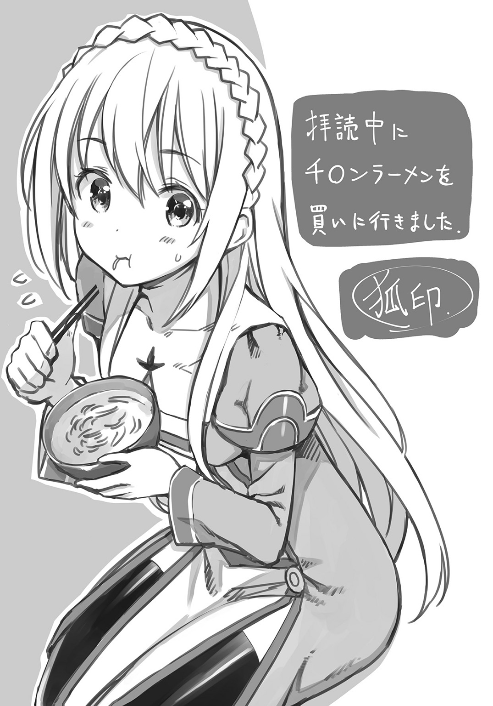
著者紹介
須崎正太郎 すざき しょうたろう
福岡県出身、在住。ラーメンの湯気通しをいつか食べねばと思いつつ、なかなか挑みきれないヘタレ。
illustration
狐印 こいん
猫とオカメインコと暮らすイラストレーター。
ダッシュエックス文庫DIGITAL
異世界君主生活
～読書しているだけで国家繁栄～
著者 須崎正太郎
© SHOTARO SUZAKI 2016
２０１６年８月31日発行
この電子書籍は、ダッシュエックス文庫「異世界君主生活 ～読書しているだけで国家繁栄～」
２０１６年７月27日発行の第１刷を底本としています。
発行者 鈴木晴彦
発行所 株式会社 集英社
〒１０１－８０５０
東京都千代田区一ツ橋２丁目５番10号
０３－３２３０－６０８０（読者係）
制作所 株式会社ＩＣＥ
本作品の全部また一部を無断で複製、転載、改竄、インターネット上に掲載すること、および有償無償に関わらず、本データを第三者に譲渡することを禁じます。なお個人利用の目的であっても、コピーガードを解除しての複製は、法律で禁じられています。